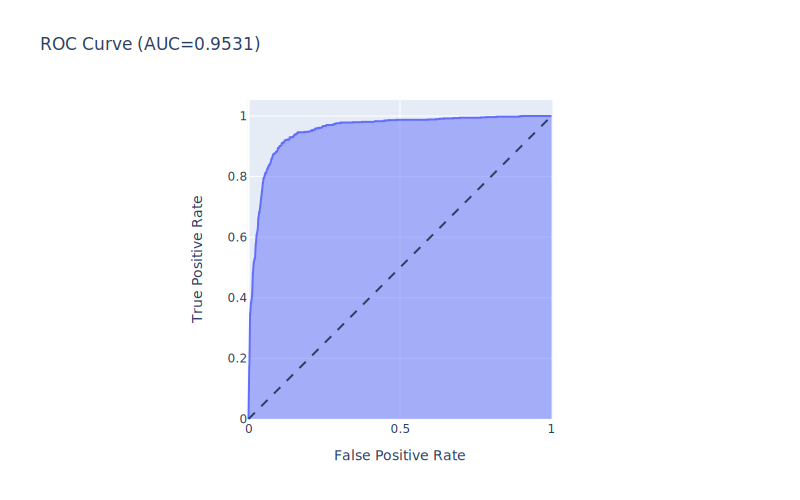

Artificial Neural Network
Contents
Artificial Neural Network#
The artificial neural network is an interconnected group of nodes inspired by biological neural networks that constitute the brain.
# Import necessary packages
import pandas as pd
import numpy as np
import joblib
import statsmodels.api as sm
from sklearn.model_selection import train_test_split
from sklearn.neural_network import MLPClassifier
from sklearn.model_selection import GridSearchCV
from sklearn.metrics import roc_auc_score, roc_curve, auc
from sklearn.metrics import ConfusionMatrixDisplay
import plotly.express as px
import plotly.io as pio
svg_renderer = pio.renderers["svg"]
svg_renderer.width = 800
svg_renderer.height = 500
pio.renderers.default = "svg"
Model without oversample data#
# Load the data
df = pd.read_csv('./../../data/engineered_data.csv')
# Drop the index column
df.drop(['Unnamed: 0'], axis=1, inplace=True)
Before modelinng the data, it is necessary to split the data into training and testing set.
# Split the data into train and test sets
X_train, X_test, y_train, y_test = train_test_split(df.drop('state', axis=1), df['state'], test_size=0.2, random_state=42)
Model Building#
# Declare the logistic regression model
ann_clf = MLPClassifier(solver='adam', learning_rate='adaptive', early_stopping=True)
# Declare the grid paramters to be searched
ann_params = dict(
hidden_layer_sizes = [(100,), (64, 128, ), (128, 64, )],
activation = ['logistic', 'tanh', 'relu'],
alpha = [0.0001, 0.001, 0.01, 0.1],
max_iter = [200, 300, 400],
)
# Declare the gridsearch object
grid_search = GridSearchCV(ann_clf, ann_params, scoring='roc_auc', n_jobs=7, refit=True, cv=10, verbose=5)
# Fit the model
grid_result = grid_search.fit(X_train.values, y_train.values)
Fitting 10 folds for each of 108 candidates, totalling 1080 fits
[CV 2/10] END activation=logistic, alpha=0.0001, hidden_layer_sizes=(100,), max_iter=200;, score=0.937 total time= 2.5s
[CV 7/10] END activation=logistic, alpha=0.0001, hidden_layer_sizes=(100,), max_iter=200;, score=0.942 total time= 2.6s
[CV 4/10] END activation=logistic, alpha=0.0001, hidden_layer_sizes=(100,), max_iter=200;, score=0.950 total time= 2.9s
[CV 1/10] END activation=logistic, alpha=0.0001, hidden_layer_sizes=(100,), max_iter=200;, score=0.954 total time= 3.4s
[CV 3/10] END activation=logistic, alpha=0.0001, hidden_layer_sizes=(100,), max_iter=200;, score=0.957 total time= 3.6s
[CV 6/10] END activation=logistic, alpha=0.0001, hidden_layer_sizes=(100,), max_iter=200;, score=0.961 total time= 3.6s
[CV 5/10] END activation=logistic, alpha=0.0001, hidden_layer_sizes=(100,), max_iter=200;, score=0.958 total time= 3.7s
[CV 8/10] END activation=logistic, alpha=0.0001, hidden_layer_sizes=(100,), max_iter=200;, score=0.953 total time= 3.7s
[CV 9/10] END activation=logistic, alpha=0.0001, hidden_layer_sizes=(100,), max_iter=200;, score=0.951 total time= 3.8s
[CV 2/10] END activation=logistic, alpha=0.0001, hidden_layer_sizes=(100,), max_iter=300;, score=0.941 total time= 3.1s
[CV 3/10] END activation=logistic, alpha=0.0001, hidden_layer_sizes=(100,), max_iter=300;, score=0.954 total time= 3.0s
[CV 4/10] END activation=logistic, alpha=0.0001, hidden_layer_sizes=(100,), max_iter=300;, score=0.948 total time= 2.9s
[CV 1/10] END activation=logistic, alpha=0.0001, hidden_layer_sizes=(100,), max_iter=300;, score=0.956 total time= 3.5s
[CV 10/10] END activation=logistic, alpha=0.0001, hidden_layer_sizes=(100,), max_iter=200;, score=0.965 total time= 5.0s
[CV 5/10] END activation=logistic, alpha=0.0001, hidden_layer_sizes=(100,), max_iter=300;, score=0.949 total time= 2.2s
[CV 9/10] END activation=logistic, alpha=0.0001, hidden_layer_sizes=(100,), max_iter=300;, score=0.935 total time= 1.8s
[CV 6/10] END activation=logistic, alpha=0.0001, hidden_layer_sizes=(100,), max_iter=300;, score=0.955 total time= 3.2s
[CV 7/10] END activation=logistic, alpha=0.0001, hidden_layer_sizes=(100,), max_iter=300;, score=0.946 total time= 4.2s
[CV 2/10] END activation=logistic, alpha=0.0001, hidden_layer_sizes=(100,), max_iter=400;, score=0.932 total time= 2.6s
[CV 10/10] END activation=logistic, alpha=0.0001, hidden_layer_sizes=(100,), max_iter=300;, score=0.963 total time= 4.2s
[CV 1/10] END activation=logistic, alpha=0.0001, hidden_layer_sizes=(100,), max_iter=400;, score=0.951 total time= 3.9s
[CV 3/10] END activation=logistic, alpha=0.0001, hidden_layer_sizes=(100,), max_iter=400;, score=0.951 total time= 3.5s
[CV 8/10] END activation=logistic, alpha=0.0001, hidden_layer_sizes=(100,), max_iter=300;, score=0.958 total time= 6.1s
[CV 4/10] END activation=logistic, alpha=0.0001, hidden_layer_sizes=(100,), max_iter=400;, score=0.953 total time= 3.8s
[CV 9/10] END activation=logistic, alpha=0.0001, hidden_layer_sizes=(100,), max_iter=400;, score=0.937 total time= 2.0s
[CV 5/10] END activation=logistic, alpha=0.0001, hidden_layer_sizes=(100,), max_iter=400;, score=0.957 total time= 3.2s
[CV 7/10] END activation=logistic, alpha=0.0001, hidden_layer_sizes=(100,), max_iter=400;, score=0.945 total time= 3.2s
[CV 8/10] END activation=logistic, alpha=0.0001, hidden_layer_sizes=(100,), max_iter=400;, score=0.944 total time= 2.5s
[CV 6/10] END activation=logistic, alpha=0.0001, hidden_layer_sizes=(100,), max_iter=400;, score=0.959 total time= 3.5s
[CV 10/10] END activation=logistic, alpha=0.0001, hidden_layer_sizes=(100,), max_iter=400;, score=0.963 total time= 3.8s
[CV 1/10] END activation=logistic, alpha=0.0001, hidden_layer_sizes=(64, 128), max_iter=200;, score=0.953 total time= 5.7s
[CV 3/10] END activation=logistic, alpha=0.0001, hidden_layer_sizes=(64, 128), max_iter=200;, score=0.954 total time= 5.3s
[CV 5/10] END activation=logistic, alpha=0.0001, hidden_layer_sizes=(64, 128), max_iter=200;, score=0.953 total time= 5.1s
[CV 4/10] END activation=logistic, alpha=0.0001, hidden_layer_sizes=(64, 128), max_iter=200;, score=0.950 total time= 5.6s
[CV 2/10] END activation=logistic, alpha=0.0001, hidden_layer_sizes=(64, 128), max_iter=200;, score=0.946 total time= 7.7s
[CV 7/10] END activation=logistic, alpha=0.0001, hidden_layer_sizes=(64, 128), max_iter=200;, score=0.945 total time= 5.3s
[CV 8/10] END activation=logistic, alpha=0.0001, hidden_layer_sizes=(64, 128), max_iter=200;, score=0.937 total time= 3.3s
[CV 6/10] END activation=logistic, alpha=0.0001, hidden_layer_sizes=(64, 128), max_iter=200;, score=0.961 total time= 8.6s
[CV 9/10] END activation=logistic, alpha=0.0001, hidden_layer_sizes=(64, 128), max_iter=200;, score=0.942 total time= 4.4s
[CV 1/10] END activation=logistic, alpha=0.0001, hidden_layer_sizes=(64, 128), max_iter=300;, score=0.943 total time= 4.5s
[CV 3/10] END activation=logistic, alpha=0.0001, hidden_layer_sizes=(64, 128), max_iter=300;, score=0.952 total time= 4.5s
[CV 10/10] END activation=logistic, alpha=0.0001, hidden_layer_sizes=(64, 128), max_iter=200;, score=0.962 total time= 6.9s
[CV 2/10] END activation=logistic, alpha=0.0001, hidden_layer_sizes=(64, 128), max_iter=300;, score=0.938 total time= 5.0s
[CV 4/10] END activation=logistic, alpha=0.0001, hidden_layer_sizes=(64, 128), max_iter=300;, score=0.948 total time= 4.2s
[CV 5/10] END activation=logistic, alpha=0.0001, hidden_layer_sizes=(64, 128), max_iter=300;, score=0.953 total time= 4.8s
[CV 10/10] END activation=logistic, alpha=0.0001, hidden_layer_sizes=(64, 128), max_iter=300;, score=0.952 total time= 2.8s
[CV 6/10] END activation=logistic, alpha=0.0001, hidden_layer_sizes=(64, 128), max_iter=300;, score=0.958 total time= 6.2s
[CV 7/10] END activation=logistic, alpha=0.0001, hidden_layer_sizes=(64, 128), max_iter=300;, score=0.946 total time= 7.3s
[CV 9/10] END activation=logistic, alpha=0.0001, hidden_layer_sizes=(64, 128), max_iter=300;, score=0.944 total time= 5.1s
[CV 2/10] END activation=logistic, alpha=0.0001, hidden_layer_sizes=(64, 128), max_iter=400;, score=0.940 total time= 5.0s
[CV 8/10] END activation=logistic, alpha=0.0001, hidden_layer_sizes=(64, 128), max_iter=300;, score=0.953 total time= 7.5s
[CV 4/10] END activation=logistic, alpha=0.0001, hidden_layer_sizes=(64, 128), max_iter=400;, score=0.949 total time= 5.9s
[CV 1/10] END activation=logistic, alpha=0.0001, hidden_layer_sizes=(64, 128), max_iter=400;, score=0.958 total time= 9.4s
[CV 6/10] END activation=logistic, alpha=0.0001, hidden_layer_sizes=(64, 128), max_iter=400;, score=0.956 total time= 4.7s
[CV 7/10] END activation=logistic, alpha=0.0001, hidden_layer_sizes=(64, 128), max_iter=400;, score=0.944 total time= 5.3s
[CV 3/10] END activation=logistic, alpha=0.0001, hidden_layer_sizes=(64, 128), max_iter=400;, score=0.960 total time= 8.8s
[CV 5/10] END activation=logistic, alpha=0.0001, hidden_layer_sizes=(64, 128), max_iter=400;, score=0.958 total time= 7.1s
[CV 8/10] END activation=logistic, alpha=0.0001, hidden_layer_sizes=(64, 128), max_iter=400;, score=0.945 total time= 4.9s
[CV 10/10] END activation=logistic, alpha=0.0001, hidden_layer_sizes=(64, 128), max_iter=400;, score=0.957 total time= 3.9s
[CV 9/10] END activation=logistic, alpha=0.0001, hidden_layer_sizes=(64, 128), max_iter=400;, score=0.943 total time= 4.6s
[CV 4/10] END activation=logistic, alpha=0.0001, hidden_layer_sizes=(128, 64), max_iter=200;, score=0.948 total time= 4.4s
[CV 3/10] END activation=logistic, alpha=0.0001, hidden_layer_sizes=(128, 64), max_iter=200;, score=0.954 total time= 5.1s
[CV 1/10] END activation=logistic, alpha=0.0001, hidden_layer_sizes=(128, 64), max_iter=200;, score=0.955 total time= 7.1s
[CV 5/10] END activation=logistic, alpha=0.0001, hidden_layer_sizes=(128, 64), max_iter=200;, score=0.955 total time= 5.1s
[CV 6/10] END activation=logistic, alpha=0.0001, hidden_layer_sizes=(128, 64), max_iter=200;, score=0.952 total time= 3.8s
[CV 2/10] END activation=logistic, alpha=0.0001, hidden_layer_sizes=(128, 64), max_iter=200;, score=0.942 total time= 6.2s
[CV 7/10] END activation=logistic, alpha=0.0001, hidden_layer_sizes=(128, 64), max_iter=200;, score=0.946 total time= 6.5s
[CV 8/10] END activation=logistic, alpha=0.0001, hidden_layer_sizes=(128, 64), max_iter=200;, score=0.945 total time= 4.5s
[CV 10/10] END activation=logistic, alpha=0.0001, hidden_layer_sizes=(128, 64), max_iter=200;, score=0.960 total time= 4.8s
[CV 2/10] END activation=logistic, alpha=0.0001, hidden_layer_sizes=(128, 64), max_iter=300;, score=0.939 total time= 5.3s
[CV 1/10] END activation=logistic, alpha=0.0001, hidden_layer_sizes=(128, 64), max_iter=300;, score=0.953 total time= 5.7s
[CV 3/10] END activation=logistic, alpha=0.0001, hidden_layer_sizes=(128, 64), max_iter=300;, score=0.954 total time= 5.2s
[CV 9/10] END activation=logistic, alpha=0.0001, hidden_layer_sizes=(128, 64), max_iter=200;, score=0.946 total time= 6.4s
[CV 4/10] END activation=logistic, alpha=0.0001, hidden_layer_sizes=(128, 64), max_iter=300;, score=0.948 total time= 4.5s
[CV 6/10] END activation=logistic, alpha=0.0001, hidden_layer_sizes=(128, 64), max_iter=300;, score=0.956 total time= 4.8s
[CV 9/10] END activation=logistic, alpha=0.0001, hidden_layer_sizes=(128, 64), max_iter=300;, score=0.943 total time= 4.2s
[CV 10/10] END activation=logistic, alpha=0.0001, hidden_layer_sizes=(128, 64), max_iter=300;, score=0.959 total time= 4.3s
[CV 8/10] END activation=logistic, alpha=0.0001, hidden_layer_sizes=(128, 64), max_iter=300;, score=0.944 total time= 4.7s
[CV 1/10] END activation=logistic, alpha=0.0001, hidden_layer_sizes=(128, 64), max_iter=400;, score=0.949 total time= 4.0s
[CV 5/10] END activation=logistic, alpha=0.0001, hidden_layer_sizes=(128, 64), max_iter=300;, score=0.962 total time= 9.5s
[CV 2/10] END activation=logistic, alpha=0.0001, hidden_layer_sizes=(128, 64), max_iter=400;, score=0.938 total time= 4.5s
[CV 4/10] END activation=logistic, alpha=0.0001, hidden_layer_sizes=(128, 64), max_iter=400;, score=0.948 total time= 5.3s
[CV 7/10] END activation=logistic, alpha=0.0001, hidden_layer_sizes=(128, 64), max_iter=300;, score=0.954 total time= 10.8s
[CV 5/10] END activation=logistic, alpha=0.0001, hidden_layer_sizes=(128, 64), max_iter=400;, score=0.959 total time= 5.9s
[CV 6/10] END activation=logistic, alpha=0.0001, hidden_layer_sizes=(128, 64), max_iter=400;, score=0.956 total time= 5.6s
[CV 7/10] END activation=logistic, alpha=0.0001, hidden_layer_sizes=(128, 64), max_iter=400;, score=0.941 total time= 4.3s
[CV 1/10] END activation=logistic, alpha=0.001, hidden_layer_sizes=(100,), max_iter=200;, score=0.943 total time= 2.4s
[CV 8/10] END activation=logistic, alpha=0.0001, hidden_layer_sizes=(128, 64), max_iter=400;, score=0.947 total time= 4.9s
[CV 3/10] END activation=logistic, alpha=0.0001, hidden_layer_sizes=(128, 64), max_iter=400;, score=0.961 total time= 9.8s
[CV 3/10] END activation=logistic, alpha=0.001, hidden_layer_sizes=(100,), max_iter=200;, score=0.953 total time= 3.5s
[CV 5/10] END activation=logistic, alpha=0.001, hidden_layer_sizes=(100,), max_iter=200;, score=0.952 total time= 2.9s
[CV 4/10] END activation=logistic, alpha=0.001, hidden_layer_sizes=(100,), max_iter=200;, score=0.953 total time= 3.3s
[CV 2/10] END activation=logistic, alpha=0.001, hidden_layer_sizes=(100,), max_iter=200;, score=0.951 total time= 4.8s
[CV 10/10] END activation=logistic, alpha=0.0001, hidden_layer_sizes=(128, 64), max_iter=400;, score=0.959 total time= 5.9s
[CV 9/10] END activation=logistic, alpha=0.0001, hidden_layer_sizes=(128, 64), max_iter=400;, score=0.946 total time= 6.9s
[CV 7/10] END activation=logistic, alpha=0.001, hidden_layer_sizes=(100,), max_iter=200;, score=0.930 total time= 1.8s
[CV 6/10] END activation=logistic, alpha=0.001, hidden_layer_sizes=(100,), max_iter=200;, score=0.960 total time= 3.8s
[CV 10/10] END activation=logistic, alpha=0.001, hidden_layer_sizes=(100,), max_iter=200;, score=0.961 total time= 3.2s
[CV 1/10] END activation=logistic, alpha=0.001, hidden_layer_sizes=(100,), max_iter=300;, score=0.951 total time= 3.1s
[CV 8/10] END activation=logistic, alpha=0.001, hidden_layer_sizes=(100,), max_iter=200;, score=0.954 total time= 4.1s
[CV 2/10] END activation=logistic, alpha=0.001, hidden_layer_sizes=(100,), max_iter=300;, score=0.939 total time= 3.7s
[CV 4/10] END activation=logistic, alpha=0.001, hidden_layer_sizes=(100,), max_iter=300;, score=0.950 total time= 2.8s
[CV 9/10] END activation=logistic, alpha=0.001, hidden_layer_sizes=(100,), max_iter=200;, score=0.956 total time= 5.0s
[CV 3/10] END activation=logistic, alpha=0.001, hidden_layer_sizes=(100,), max_iter=300;, score=0.958 total time= 4.4s
[CV 8/10] END activation=logistic, alpha=0.001, hidden_layer_sizes=(100,), max_iter=300;, score=0.938 total time= 2.1s
[CV 5/10] END activation=logistic, alpha=0.001, hidden_layer_sizes=(100,), max_iter=300;, score=0.951 total time= 3.2s
[CV 6/10] END activation=logistic, alpha=0.001, hidden_layer_sizes=(100,), max_iter=300;, score=0.957 total time= 3.5s
[CV 10/10] END activation=logistic, alpha=0.001, hidden_layer_sizes=(100,), max_iter=300;, score=0.962 total time= 3.3s
[CV 7/10] END activation=logistic, alpha=0.001, hidden_layer_sizes=(100,), max_iter=300;, score=0.952 total time= 4.6s
[CV 9/10] END activation=logistic, alpha=0.001, hidden_layer_sizes=(100,), max_iter=300;, score=0.955 total time= 4.7s
[CV 4/10] END activation=logistic, alpha=0.001, hidden_layer_sizes=(100,), max_iter=400;, score=0.948 total time= 2.6s
[CV 1/10] END activation=logistic, alpha=0.001, hidden_layer_sizes=(100,), max_iter=400;, score=0.957 total time= 4.2s
[CV 2/10] END activation=logistic, alpha=0.001, hidden_layer_sizes=(100,), max_iter=400;, score=0.943 total time= 3.5s
[CV 6/10] END activation=logistic, alpha=0.001, hidden_layer_sizes=(100,), max_iter=400;, score=0.951 total time= 2.1s
[CV 8/10] END activation=logistic, alpha=0.001, hidden_layer_sizes=(100,), max_iter=400;, score=0.936 total time= 2.0s
[CV 7/10] END activation=logistic, alpha=0.001, hidden_layer_sizes=(100,), max_iter=400;, score=0.938 total time= 2.4s
[CV 3/10] END activation=logistic, alpha=0.001, hidden_layer_sizes=(100,), max_iter=400;, score=0.961 total time= 5.2s
[CV 5/10] END activation=logistic, alpha=0.001, hidden_layer_sizes=(100,), max_iter=400;, score=0.959 total time= 3.6s
[CV 9/10] END activation=logistic, alpha=0.001, hidden_layer_sizes=(100,), max_iter=400;, score=0.950 total time= 3.3s
[CV 10/10] END activation=logistic, alpha=0.001, hidden_layer_sizes=(100,), max_iter=400;, score=0.960 total time= 3.0s
[CV 5/10] END activation=logistic, alpha=0.001, hidden_layer_sizes=(64, 128), max_iter=200;, score=0.946 total time= 2.8s
[CV 1/10] END activation=logistic, alpha=0.001, hidden_layer_sizes=(64, 128), max_iter=200;, score=0.949 total time= 4.7s
[CV 4/10] END activation=logistic, alpha=0.001, hidden_layer_sizes=(64, 128), max_iter=200;, score=0.945 total time= 4.7s
[CV 3/10] END activation=logistic, alpha=0.001, hidden_layer_sizes=(64, 128), max_iter=200;, score=0.956 total time= 6.0s
[CV 7/10] END activation=logistic, alpha=0.001, hidden_layer_sizes=(64, 128), max_iter=200;, score=0.942 total time= 4.9s
[CV 2/10] END activation=logistic, alpha=0.001, hidden_layer_sizes=(64, 128), max_iter=200;, score=0.942 total time= 6.4s
[CV 6/10] END activation=logistic, alpha=0.001, hidden_layer_sizes=(64, 128), max_iter=200;, score=0.960 total time= 6.5s
[CV 8/10] END activation=logistic, alpha=0.001, hidden_layer_sizes=(64, 128), max_iter=200;, score=0.948 total time= 5.6s
[CV 9/10] END activation=logistic, alpha=0.001, hidden_layer_sizes=(64, 128), max_iter=200;, score=0.948 total time= 6.2s
[CV 3/10] END activation=logistic, alpha=0.001, hidden_layer_sizes=(64, 128), max_iter=300;, score=0.954 total time= 4.7s
[CV 10/10] END activation=logistic, alpha=0.001, hidden_layer_sizes=(64, 128), max_iter=200;, score=0.963 total time= 6.5s
[CV 2/10] END activation=logistic, alpha=0.001, hidden_layer_sizes=(64, 128), max_iter=300;, score=0.942 total time= 5.7s
[CV 1/10] END activation=logistic, alpha=0.001, hidden_layer_sizes=(64, 128), max_iter=300;, score=0.953 total time= 7.6s
[CV 7/10] END activation=logistic, alpha=0.001, hidden_layer_sizes=(64, 128), max_iter=300;, score=0.940 total time= 4.0s
[CV 5/10] END activation=logistic, alpha=0.001, hidden_layer_sizes=(64, 128), max_iter=300;, score=0.955 total time= 6.3s
[CV 4/10] END activation=logistic, alpha=0.001, hidden_layer_sizes=(64, 128), max_iter=300;, score=0.956 total time= 8.5s
[CV 6/10] END activation=logistic, alpha=0.001, hidden_layer_sizes=(64, 128), max_iter=300;, score=0.959 total time= 7.1s
[CV 9/10] END activation=logistic, alpha=0.001, hidden_layer_sizes=(64, 128), max_iter=300;, score=0.947 total time= 6.0s
[CV 2/10] END activation=logistic, alpha=0.001, hidden_layer_sizes=(64, 128), max_iter=400;, score=0.932 total time= 3.7s
[CV 8/10] END activation=logistic, alpha=0.001, hidden_layer_sizes=(64, 128), max_iter=300;, score=0.955 total time= 8.0s
[CV 1/10] END activation=logistic, alpha=0.001, hidden_layer_sizes=(64, 128), max_iter=400;, score=0.950 total time= 5.0s
[CV 10/10] END activation=logistic, alpha=0.001, hidden_layer_sizes=(64, 128), max_iter=300;, score=0.963 total time= 6.7s
[CV 4/10] END activation=logistic, alpha=0.001, hidden_layer_sizes=(64, 128), max_iter=400;, score=0.950 total time= 5.3s
[CV 3/10] END activation=logistic, alpha=0.001, hidden_layer_sizes=(64, 128), max_iter=400;, score=0.958 total time= 6.5s
[CV 5/10] END activation=logistic, alpha=0.001, hidden_layer_sizes=(64, 128), max_iter=400;, score=0.957 total time= 5.7s
[CV 7/10] END activation=logistic, alpha=0.001, hidden_layer_sizes=(64, 128), max_iter=400;, score=0.944 total time= 5.1s
[CV 8/10] END activation=logistic, alpha=0.001, hidden_layer_sizes=(64, 128), max_iter=400;, score=0.945 total time= 5.1s
[CV 6/10] END activation=logistic, alpha=0.001, hidden_layer_sizes=(64, 128), max_iter=400;, score=0.959 total time= 6.6s
[CV 9/10] END activation=logistic, alpha=0.001, hidden_layer_sizes=(64, 128), max_iter=400;, score=0.944 total time= 5.6s
[CV 10/10] END activation=logistic, alpha=0.001, hidden_layer_sizes=(64, 128), max_iter=400;, score=0.960 total time= 5.1s
[CV 2/10] END activation=logistic, alpha=0.001, hidden_layer_sizes=(128, 64), max_iter=200;, score=0.941 total time= 5.2s
[CV 3/10] END activation=logistic, alpha=0.001, hidden_layer_sizes=(128, 64), max_iter=200;, score=0.954 total time= 5.3s
[CV 6/10] END activation=logistic, alpha=0.001, hidden_layer_sizes=(128, 64), max_iter=200;, score=0.955 total time= 3.9s
[CV 5/10] END activation=logistic, alpha=0.001, hidden_layer_sizes=(128, 64), max_iter=200;, score=0.951 total time= 4.4s
[CV 1/10] END activation=logistic, alpha=0.001, hidden_layer_sizes=(128, 64), max_iter=200;, score=0.955 total time= 8.9s
[CV 4/10] END activation=logistic, alpha=0.001, hidden_layer_sizes=(128, 64), max_iter=200;, score=0.951 total time= 7.5s
[CV 7/10] END activation=logistic, alpha=0.001, hidden_layer_sizes=(128, 64), max_iter=200;, score=0.945 total time= 5.7s
[CV 8/10] END activation=logistic, alpha=0.001, hidden_layer_sizes=(128, 64), max_iter=200;, score=0.947 total time= 5.3s
[CV 1/10] END activation=logistic, alpha=0.001, hidden_layer_sizes=(128, 64), max_iter=300;, score=0.948 total time= 4.4s
[CV 10/10] END activation=logistic, alpha=0.001, hidden_layer_sizes=(128, 64), max_iter=200;, score=0.958 total time= 4.9s
[CV 9/10] END activation=logistic, alpha=0.001, hidden_layer_sizes=(128, 64), max_iter=200;, score=0.946 total time= 5.3s
[CV 2/10] END activation=logistic, alpha=0.001, hidden_layer_sizes=(128, 64), max_iter=300;, score=0.939 total time= 4.6s
[CV 4/10] END activation=logistic, alpha=0.001, hidden_layer_sizes=(128, 64), max_iter=300;, score=0.948 total time= 3.6s
[CV 8/10] END activation=logistic, alpha=0.001, hidden_layer_sizes=(128, 64), max_iter=300;, score=0.946 total time= 4.6s
[CV 5/10] END activation=logistic, alpha=0.001, hidden_layer_sizes=(128, 64), max_iter=300;, score=0.960 total time= 6.4s
[CV 6/10] END activation=logistic, alpha=0.001, hidden_layer_sizes=(128, 64), max_iter=300;, score=0.955 total time= 7.2s
[CV 7/10] END activation=logistic, alpha=0.001, hidden_layer_sizes=(128, 64), max_iter=300;, score=0.945 total time= 7.1s
[CV 9/10] END activation=logistic, alpha=0.001, hidden_layer_sizes=(128, 64), max_iter=300;, score=0.947 total time= 6.4s
[CV 3/10] END activation=logistic, alpha=0.001, hidden_layer_sizes=(128, 64), max_iter=300;, score=0.967 total time= 11.7s
[CV 1/10] END activation=logistic, alpha=0.001, hidden_layer_sizes=(128, 64), max_iter=400;, score=0.949 total time= 5.2s
[CV 10/10] END activation=logistic, alpha=0.001, hidden_layer_sizes=(128, 64), max_iter=300;, score=0.962 total time= 8.5s
[CV 2/10] END activation=logistic, alpha=0.001, hidden_layer_sizes=(128, 64), max_iter=400;, score=0.941 total time= 5.9s
[CV 5/10] END activation=logistic, alpha=0.001, hidden_layer_sizes=(128, 64), max_iter=400;, score=0.955 total time= 4.6s
[CV 3/10] END activation=logistic, alpha=0.001, hidden_layer_sizes=(128, 64), max_iter=400;, score=0.957 total time= 7.1s
[CV 4/10] END activation=logistic, alpha=0.001, hidden_layer_sizes=(128, 64), max_iter=400;, score=0.950 total time= 7.1s
[CV 6/10] END activation=logistic, alpha=0.001, hidden_layer_sizes=(128, 64), max_iter=400;, score=0.957 total time= 5.3s
[CV 8/10] END activation=logistic, alpha=0.001, hidden_layer_sizes=(128, 64), max_iter=400;, score=0.946 total time= 4.2s
[CV 1/10] END activation=logistic, alpha=0.01, hidden_layer_sizes=(100,), max_iter=200;, score=0.945 total time= 2.0s
[CV 7/10] END activation=logistic, alpha=0.001, hidden_layer_sizes=(128, 64), max_iter=400;, score=0.948 total time= 5.8s
[CV 9/10] END activation=logistic, alpha=0.001, hidden_layer_sizes=(128, 64), max_iter=400;, score=0.946 total time= 4.6s
[CV 5/10] END activation=logistic, alpha=0.01, hidden_layer_sizes=(100,), max_iter=200;, score=0.947 total time= 1.9s
[CV 2/10] END activation=logistic, alpha=0.01, hidden_layer_sizes=(100,), max_iter=200;, score=0.940 total time= 3.7s
[CV 4/10] END activation=logistic, alpha=0.01, hidden_layer_sizes=(100,), max_iter=200;, score=0.951 total time= 3.1s
[CV 3/10] END activation=logistic, alpha=0.01, hidden_layer_sizes=(100,), max_iter=200;, score=0.955 total time= 3.6s
[CV 7/10] END activation=logistic, alpha=0.01, hidden_layer_sizes=(100,), max_iter=200;, score=0.936 total time= 2.2s
[CV 6/10] END activation=logistic, alpha=0.01, hidden_layer_sizes=(100,), max_iter=200;, score=0.958 total time= 3.2s
[CV 10/10] END activation=logistic, alpha=0.001, hidden_layer_sizes=(128, 64), max_iter=400;, score=0.962 total time= 6.7s
[CV 8/10] END activation=logistic, alpha=0.01, hidden_layer_sizes=(100,), max_iter=200;, score=0.938 total time= 2.2s
[CV 1/10] END activation=logistic, alpha=0.01, hidden_layer_sizes=(100,), max_iter=300;, score=0.940 total time= 2.0s
[CV 9/10] END activation=logistic, alpha=0.01, hidden_layer_sizes=(100,), max_iter=200;, score=0.949 total time= 3.5s
[CV 2/10] END activation=logistic, alpha=0.01, hidden_layer_sizes=(100,), max_iter=300;, score=0.943 total time= 3.3s
[CV 10/10] END activation=logistic, alpha=0.01, hidden_layer_sizes=(100,), max_iter=200;, score=0.963 total time= 3.8s
[CV 3/10] END activation=logistic, alpha=0.01, hidden_layer_sizes=(100,), max_iter=300;, score=0.957 total time= 3.7s
[CV 6/10] END activation=logistic, alpha=0.01, hidden_layer_sizes=(100,), max_iter=300;, score=0.958 total time= 2.9s
[CV 4/10] END activation=logistic, alpha=0.01, hidden_layer_sizes=(100,), max_iter=300;, score=0.955 total time= 3.9s
[CV 5/10] END activation=logistic, alpha=0.01, hidden_layer_sizes=(100,), max_iter=300;, score=0.960 total time= 4.4s
[CV 9/10] END activation=logistic, alpha=0.01, hidden_layer_sizes=(100,), max_iter=300;, score=0.951 total time= 3.9s
[CV 10/10] END activation=logistic, alpha=0.01, hidden_layer_sizes=(100,), max_iter=300;, score=0.955 total time= 3.0s
[CV 1/10] END activation=logistic, alpha=0.01, hidden_layer_sizes=(100,), max_iter=400;, score=0.949 total time= 2.9s
[CV 7/10] END activation=logistic, alpha=0.01, hidden_layer_sizes=(100,), max_iter=300;, score=0.952 total time= 4.8s
[CV 8/10] END activation=logistic, alpha=0.01, hidden_layer_sizes=(100,), max_iter=300;, score=0.953 total time= 4.6s
[CV 2/10] END activation=logistic, alpha=0.01, hidden_layer_sizes=(100,), max_iter=400;, score=0.943 total time= 3.7s
[CV 6/10] END activation=logistic, alpha=0.01, hidden_layer_sizes=(100,), max_iter=400;, score=0.947 total time= 1.6s
[CV 7/10] END activation=logistic, alpha=0.01, hidden_layer_sizes=(100,), max_iter=400;, score=0.941 total time= 2.9s
[CV 5/10] END activation=logistic, alpha=0.01, hidden_layer_sizes=(100,), max_iter=400;, score=0.956 total time= 3.2s
[CV 4/10] END activation=logistic, alpha=0.01, hidden_layer_sizes=(100,), max_iter=400;, score=0.952 total time= 3.5s
[CV 3/10] END activation=logistic, alpha=0.01, hidden_layer_sizes=(100,), max_iter=400;, score=0.959 total time= 5.1s
[CV 8/10] END activation=logistic, alpha=0.01, hidden_layer_sizes=(100,), max_iter=400;, score=0.946 total time= 3.2s
[CV 10/10] END activation=logistic, alpha=0.01, hidden_layer_sizes=(100,), max_iter=400;, score=0.954 total time= 1.9s
[CV 9/10] END activation=logistic, alpha=0.01, hidden_layer_sizes=(100,), max_iter=400;, score=0.953 total time= 4.4s
[CV 2/10] END activation=logistic, alpha=0.01, hidden_layer_sizes=(64, 128), max_iter=200;, score=0.939 total time= 5.0s
[CV 1/10] END activation=logistic, alpha=0.01, hidden_layer_sizes=(64, 128), max_iter=200;, score=0.950 total time= 5.4s
[CV 6/10] END activation=logistic, alpha=0.01, hidden_layer_sizes=(64, 128), max_iter=200;, score=0.955 total time= 5.5s
[CV 4/10] END activation=logistic, alpha=0.01, hidden_layer_sizes=(64, 128), max_iter=200;, score=0.953 total time= 6.8s
[CV 5/10] END activation=logistic, alpha=0.01, hidden_layer_sizes=(64, 128), max_iter=200;, score=0.958 total time= 7.1s
[CV 3/10] END activation=logistic, alpha=0.01, hidden_layer_sizes=(64, 128), max_iter=200;, score=0.957 total time= 7.5s
[CV 7/10] END activation=logistic, alpha=0.01, hidden_layer_sizes=(64, 128), max_iter=200;, score=0.945 total time= 6.3s
[CV 2/10] END activation=logistic, alpha=0.01, hidden_layer_sizes=(64, 128), max_iter=300;, score=0.932 total time= 3.7s
[CV 9/10] END activation=logistic, alpha=0.01, hidden_layer_sizes=(64, 128), max_iter=200;, score=0.946 total time= 6.1s
[CV 10/10] END activation=logistic, alpha=0.01, hidden_layer_sizes=(64, 128), max_iter=200;, score=0.960 total time= 5.6s
[CV 8/10] END activation=logistic, alpha=0.01, hidden_layer_sizes=(64, 128), max_iter=200;, score=0.951 total time= 6.8s
[CV 3/10] END activation=logistic, alpha=0.01, hidden_layer_sizes=(64, 128), max_iter=300;, score=0.949 total time= 5.0s
[CV 1/10] END activation=logistic, alpha=0.01, hidden_layer_sizes=(64, 128), max_iter=300;, score=0.955 total time= 8.2s
[CV 5/10] END activation=logistic, alpha=0.01, hidden_layer_sizes=(64, 128), max_iter=300;, score=0.956 total time= 5.4s
[CV 6/10] END activation=logistic, alpha=0.01, hidden_layer_sizes=(64, 128), max_iter=300;, score=0.952 total time= 5.1s
[CV 8/10] END activation=logistic, alpha=0.01, hidden_layer_sizes=(64, 128), max_iter=300;, score=0.946 total time= 5.3s
[CV 4/10] END activation=logistic, alpha=0.01, hidden_layer_sizes=(64, 128), max_iter=300;, score=0.957 total time= 8.8s
[CV 9/10] END activation=logistic, alpha=0.01, hidden_layer_sizes=(64, 128), max_iter=300;, score=0.948 total time= 6.3s
[CV 7/10] END activation=logistic, alpha=0.01, hidden_layer_sizes=(64, 128), max_iter=300;, score=0.949 total time= 7.7s
[CV 1/10] END activation=logistic, alpha=0.01, hidden_layer_sizes=(64, 128), max_iter=400;, score=0.941 total time= 3.2s
[CV 3/10] END activation=logistic, alpha=0.01, hidden_layer_sizes=(64, 128), max_iter=400;, score=0.951 total time= 4.5s
[CV 4/10] END activation=logistic, alpha=0.01, hidden_layer_sizes=(64, 128), max_iter=400;, score=0.951 total time= 4.8s
[CV 2/10] END activation=logistic, alpha=0.01, hidden_layer_sizes=(64, 128), max_iter=400;, score=0.942 total time= 6.6s
[CV 10/10] END activation=logistic, alpha=0.01, hidden_layer_sizes=(64, 128), max_iter=300;, score=0.963 total time= 8.0s
[CV 7/10] END activation=logistic, alpha=0.01, hidden_layer_sizes=(64, 128), max_iter=400;, score=0.940 total time= 4.1s
[CV 5/10] END activation=logistic, alpha=0.01, hidden_layer_sizes=(64, 128), max_iter=400;, score=0.954 total time= 5.5s
[CV 6/10] END activation=logistic, alpha=0.01, hidden_layer_sizes=(64, 128), max_iter=400;, score=0.954 total time= 5.5s
[CV 8/10] END activation=logistic, alpha=0.01, hidden_layer_sizes=(64, 128), max_iter=400;, score=0.947 total time= 5.1s
[CV 1/10] END activation=logistic, alpha=0.01, hidden_layer_sizes=(128, 64), max_iter=200;, score=0.949 total time= 4.4s
[CV 9/10] END activation=logistic, alpha=0.01, hidden_layer_sizes=(64, 128), max_iter=400;, score=0.945 total time= 5.7s
[CV 4/10] END activation=logistic, alpha=0.01, hidden_layer_sizes=(128, 64), max_iter=200;, score=0.949 total time= 4.0s
[CV 2/10] END activation=logistic, alpha=0.01, hidden_layer_sizes=(128, 64), max_iter=200;, score=0.939 total time= 5.2s
[CV 10/10] END activation=logistic, alpha=0.01, hidden_layer_sizes=(64, 128), max_iter=400;, score=0.962 total time= 7.3s
[CV 5/10] END activation=logistic, alpha=0.01, hidden_layer_sizes=(128, 64), max_iter=200;, score=0.956 total time= 4.8s
[CV 3/10] END activation=logistic, alpha=0.01, hidden_layer_sizes=(128, 64), max_iter=200;, score=0.957 total time= 8.0s
[CV 7/10] END activation=logistic, alpha=0.01, hidden_layer_sizes=(128, 64), max_iter=200;, score=0.945 total time= 6.2s
[CV 9/10] END activation=logistic, alpha=0.01, hidden_layer_sizes=(128, 64), max_iter=200;, score=0.944 total time= 5.7s
[CV 8/10] END activation=logistic, alpha=0.01, hidden_layer_sizes=(128, 64), max_iter=200;, score=0.951 total time= 8.1s
[CV 10/10] END activation=logistic, alpha=0.01, hidden_layer_sizes=(128, 64), max_iter=200;, score=0.960 total time= 6.4s
[CV 6/10] END activation=logistic, alpha=0.01, hidden_layer_sizes=(128, 64), max_iter=200;, score=0.961 total time= 9.1s
[CV 1/10] END activation=logistic, alpha=0.01, hidden_layer_sizes=(128, 64), max_iter=300;, score=0.950 total time= 5.5s
[CV 2/10] END activation=logistic, alpha=0.01, hidden_layer_sizes=(128, 64), max_iter=300;, score=0.940 total time= 5.3s
[CV 3/10] END activation=logistic, alpha=0.01, hidden_layer_sizes=(128, 64), max_iter=300;, score=0.954 total time= 5.4s
[CV 8/10] END activation=logistic, alpha=0.01, hidden_layer_sizes=(128, 64), max_iter=300;, score=0.945 total time= 4.6s
[CV 4/10] END activation=logistic, alpha=0.01, hidden_layer_sizes=(128, 64), max_iter=300;, score=0.950 total time= 7.3s
[CV 9/10] END activation=logistic, alpha=0.01, hidden_layer_sizes=(128, 64), max_iter=300;, score=0.944 total time= 4.8s
[CV 6/10] END activation=logistic, alpha=0.01, hidden_layer_sizes=(128, 64), max_iter=300;, score=0.957 total time= 5.7s
[CV 7/10] END activation=logistic, alpha=0.01, hidden_layer_sizes=(128, 64), max_iter=300;, score=0.945 total time= 6.2s
[CV 5/10] END activation=logistic, alpha=0.01, hidden_layer_sizes=(128, 64), max_iter=300;, score=0.960 total time= 7.6s
[CV 10/10] END activation=logistic, alpha=0.01, hidden_layer_sizes=(128, 64), max_iter=300;, score=0.961 total time= 7.5s
[CV 1/10] END activation=logistic, alpha=0.01, hidden_layer_sizes=(128, 64), max_iter=400;, score=0.952 total time= 6.0s
[CV 6/10] END activation=logistic, alpha=0.01, hidden_layer_sizes=(128, 64), max_iter=400;, score=0.952 total time= 3.3s
[CV 2/10] END activation=logistic, alpha=0.01, hidden_layer_sizes=(128, 64), max_iter=400;, score=0.941 total time= 6.1s
[CV 4/10] END activation=logistic, alpha=0.01, hidden_layer_sizes=(128, 64), max_iter=400;, score=0.950 total time= 6.0s
[CV 3/10] END activation=logistic, alpha=0.01, hidden_layer_sizes=(128, 64), max_iter=400;, score=0.950 total time= 6.7s
[CV 5/10] END activation=logistic, alpha=0.01, hidden_layer_sizes=(128, 64), max_iter=400;, score=0.959 total time= 7.7s
[CV 1/10] END activation=logistic, alpha=0.1, hidden_layer_sizes=(100,), max_iter=200;, score=0.946 total time= 2.9s
[CV 8/10] END activation=logistic, alpha=0.01, hidden_layer_sizes=(128, 64), max_iter=400;, score=0.946 total time= 4.9s
[CV 2/10] END activation=logistic, alpha=0.1, hidden_layer_sizes=(100,), max_iter=200;, score=0.936 total time= 3.3s
[CV 3/10] END activation=logistic, alpha=0.1, hidden_layer_sizes=(100,), max_iter=200;, score=0.947 total time= 2.3s
[CV 10/10] END activation=logistic, alpha=0.01, hidden_layer_sizes=(128, 64), max_iter=400;, score=0.961 total time= 5.2s
[CV 9/10] END activation=logistic, alpha=0.01, hidden_layer_sizes=(128, 64), max_iter=400;, score=0.944 total time= 5.9s
[CV 4/10] END activation=logistic, alpha=0.1, hidden_layer_sizes=(100,), max_iter=200;, score=0.944 total time= 2.2s
[CV 7/10] END activation=logistic, alpha=0.01, hidden_layer_sizes=(128, 64), max_iter=400;, score=0.946 total time= 7.2s
[CV 6/10] END activation=logistic, alpha=0.1, hidden_layer_sizes=(100,), max_iter=200;, score=0.948 total time= 2.2s
[CV 7/10] END activation=logistic, alpha=0.1, hidden_layer_sizes=(100,), max_iter=200;, score=0.933 total time= 1.9s
[CV 8/10] END activation=logistic, alpha=0.1, hidden_layer_sizes=(100,), max_iter=200;, score=0.935 total time= 1.9s
[CV 5/10] END activation=logistic, alpha=0.1, hidden_layer_sizes=(100,), max_iter=200;, score=0.946 total time= 2.8s
[CV 9/10] END activation=logistic, alpha=0.1, hidden_layer_sizes=(100,), max_iter=200;, score=0.931 total time= 1.7s
[CV 10/10] END activation=logistic, alpha=0.1, hidden_layer_sizes=(100,), max_iter=200;, score=0.954 total time= 2.2s
[CV 1/10] END activation=logistic, alpha=0.1, hidden_layer_sizes=(100,), max_iter=300;, score=0.939 total time= 2.0s
[CV 2/10] END activation=logistic, alpha=0.1, hidden_layer_sizes=(100,), max_iter=300;, score=0.930 total time= 2.1s
[CV 6/10] END activation=logistic, alpha=0.1, hidden_layer_sizes=(100,), max_iter=300;, score=0.947 total time= 1.7s
[CV 3/10] END activation=logistic, alpha=0.1, hidden_layer_sizes=(100,), max_iter=300;, score=0.947 total time= 2.3s
[CV 5/10] END activation=logistic, alpha=0.1, hidden_layer_sizes=(100,), max_iter=300;, score=0.949 total time= 2.3s
[CV 8/10] END activation=logistic, alpha=0.1, hidden_layer_sizes=(100,), max_iter=300;, score=0.926 total time= 1.4s
[CV 4/10] END activation=logistic, alpha=0.1, hidden_layer_sizes=(100,), max_iter=300;, score=0.948 total time= 3.7s
[CV 7/10] END activation=logistic, alpha=0.1, hidden_layer_sizes=(100,), max_iter=300;, score=0.939 total time= 3.1s
[CV 3/10] END activation=logistic, alpha=0.1, hidden_layer_sizes=(100,), max_iter=400;, score=0.945 total time= 2.1s
[CV 1/10] END activation=logistic, alpha=0.1, hidden_layer_sizes=(100,), max_iter=400;, score=0.942 total time= 2.6s
[CV 9/10] END activation=logistic, alpha=0.1, hidden_layer_sizes=(100,), max_iter=300;, score=0.939 total time= 3.3s
[CV 4/10] END activation=logistic, alpha=0.1, hidden_layer_sizes=(100,), max_iter=400;, score=0.941 total time= 1.7s
[CV 10/10] END activation=logistic, alpha=0.1, hidden_layer_sizes=(100,), max_iter=300;, score=0.959 total time= 4.0s
[CV 5/10] END activation=logistic, alpha=0.1, hidden_layer_sizes=(100,), max_iter=400;, score=0.936 total time= 2.1s
[CV 2/10] END activation=logistic, alpha=0.1, hidden_layer_sizes=(100,), max_iter=400;, score=0.935 total time= 3.5s
[CV 8/10] END activation=logistic, alpha=0.1, hidden_layer_sizes=(100,), max_iter=400;, score=0.926 total time= 1.4s
[CV 9/10] END activation=logistic, alpha=0.1, hidden_layer_sizes=(100,), max_iter=400;, score=0.934 total time= 1.9s
[CV 6/10] END activation=logistic, alpha=0.1, hidden_layer_sizes=(100,), max_iter=400;, score=0.951 total time= 2.7s
[CV 7/10] END activation=logistic, alpha=0.1, hidden_layer_sizes=(100,), max_iter=400;, score=0.936 total time= 2.9s
[CV 10/10] END activation=logistic, alpha=0.1, hidden_layer_sizes=(100,), max_iter=400;, score=0.957 total time= 3.2s
[CV 2/10] END activation=logistic, alpha=0.1, hidden_layer_sizes=(64, 128), max_iter=200;, score=0.931 total time= 3.2s
[CV 5/10] END activation=logistic, alpha=0.1, hidden_layer_sizes=(64, 128), max_iter=200;, score=0.943 total time= 2.9s
[CV 1/10] END activation=logistic, alpha=0.1, hidden_layer_sizes=(64, 128), max_iter=200;, score=0.945 total time= 4.5s
[CV 4/10] END activation=logistic, alpha=0.1, hidden_layer_sizes=(64, 128), max_iter=200;, score=0.946 total time= 4.0s
[CV 3/10] END activation=logistic, alpha=0.1, hidden_layer_sizes=(64, 128), max_iter=200;, score=0.948 total time= 5.2s
[CV 6/10] END activation=logistic, alpha=0.1, hidden_layer_sizes=(64, 128), max_iter=200;, score=0.943 total time= 3.9s
[CV 9/10] END activation=logistic, alpha=0.1, hidden_layer_sizes=(64, 128), max_iter=200;, score=0.937 total time= 3.7s
[CV 8/10] END activation=logistic, alpha=0.1, hidden_layer_sizes=(64, 128), max_iter=200;, score=0.940 total time= 5.0s
[CV 10/10] END activation=logistic, alpha=0.1, hidden_layer_sizes=(64, 128), max_iter=200;, score=0.957 total time= 5.4s
[CV 2/10] END activation=logistic, alpha=0.1, hidden_layer_sizes=(64, 128), max_iter=300;, score=0.933 total time= 4.3s
[CV 3/10] END activation=logistic, alpha=0.1, hidden_layer_sizes=(64, 128), max_iter=300;, score=0.950 total time= 5.8s
[CV 7/10] END activation=logistic, alpha=0.1, hidden_layer_sizes=(64, 128), max_iter=200;, score=0.944 total time= 8.8s
[CV 5/10] END activation=logistic, alpha=0.1, hidden_layer_sizes=(64, 128), max_iter=300;, score=0.951 total time= 4.0s
[CV 1/10] END activation=logistic, alpha=0.1, hidden_layer_sizes=(64, 128), max_iter=300;, score=0.950 total time= 7.9s
[CV 6/10] END activation=logistic, alpha=0.1, hidden_layer_sizes=(64, 128), max_iter=300;, score=0.952 total time= 4.2s
[CV 9/10] END activation=logistic, alpha=0.1, hidden_layer_sizes=(64, 128), max_iter=300;, score=0.931 total time= 2.6s
[CV 4/10] END activation=logistic, alpha=0.1, hidden_layer_sizes=(64, 128), max_iter=300;, score=0.949 total time= 6.9s
[CV 7/10] END activation=logistic, alpha=0.1, hidden_layer_sizes=(64, 128), max_iter=300;, score=0.941 total time= 5.2s
[CV 8/10] END activation=logistic, alpha=0.1, hidden_layer_sizes=(64, 128), max_iter=300;, score=0.939 total time= 4.9s
[CV 10/10] END activation=logistic, alpha=0.1, hidden_layer_sizes=(64, 128), max_iter=300;, score=0.957 total time= 5.2s
[CV 1/10] END activation=logistic, alpha=0.1, hidden_layer_sizes=(64, 128), max_iter=400;, score=0.943 total time= 4.4s
[CV 4/10] END activation=logistic, alpha=0.1, hidden_layer_sizes=(64, 128), max_iter=400;, score=0.946 total time= 4.1s
[CV 3/10] END activation=logistic, alpha=0.1, hidden_layer_sizes=(64, 128), max_iter=400;, score=0.950 total time= 5.8s
[CV 2/10] END activation=logistic, alpha=0.1, hidden_layer_sizes=(64, 128), max_iter=400;, score=0.939 total time= 6.5s
[CV 7/10] END activation=logistic, alpha=0.1, hidden_layer_sizes=(64, 128), max_iter=400;, score=0.935 total time= 3.7s
[CV 8/10] END activation=logistic, alpha=0.1, hidden_layer_sizes=(64, 128), max_iter=400;, score=0.938 total time= 4.1s
[CV 6/10] END activation=logistic, alpha=0.1, hidden_layer_sizes=(64, 128), max_iter=400;, score=0.955 total time= 6.6s
[CV 5/10] END activation=logistic, alpha=0.1, hidden_layer_sizes=(64, 128), max_iter=400;, score=0.951 total time= 8.6s
[CV 9/10] END activation=logistic, alpha=0.1, hidden_layer_sizes=(64, 128), max_iter=400;, score=0.941 total time= 5.4s
[CV 10/10] END activation=logistic, alpha=0.1, hidden_layer_sizes=(64, 128), max_iter=400;, score=0.957 total time= 4.6s
[CV 1/10] END activation=logistic, alpha=0.1, hidden_layer_sizes=(128, 64), max_iter=200;, score=0.946 total time= 4.4s
[CV 2/10] END activation=logistic, alpha=0.1, hidden_layer_sizes=(128, 64), max_iter=200;, score=0.936 total time= 5.5s
[CV 5/10] END activation=logistic, alpha=0.1, hidden_layer_sizes=(128, 64), max_iter=200;, score=0.947 total time= 3.5s
[CV 3/10] END activation=logistic, alpha=0.1, hidden_layer_sizes=(128, 64), max_iter=200;, score=0.951 total time= 5.7s
[CV 7/10] END activation=logistic, alpha=0.1, hidden_layer_sizes=(128, 64), max_iter=200;, score=0.937 total time= 4.1s
[CV 8/10] END activation=logistic, alpha=0.1, hidden_layer_sizes=(128, 64), max_iter=200;, score=0.929 total time= 4.6s
[CV 6/10] END activation=logistic, alpha=0.1, hidden_layer_sizes=(128, 64), max_iter=200;, score=0.954 total time= 5.8s
[CV 10/10] END activation=logistic, alpha=0.1, hidden_layer_sizes=(128, 64), max_iter=200;, score=0.954 total time= 3.4s
[CV 4/10] END activation=logistic, alpha=0.1, hidden_layer_sizes=(128, 64), max_iter=200;, score=0.944 total time= 7.8s
[CV 1/10] END activation=logistic, alpha=0.1, hidden_layer_sizes=(128, 64), max_iter=300;, score=0.943 total time= 3.2s
[CV 9/10] END activation=logistic, alpha=0.1, hidden_layer_sizes=(128, 64), max_iter=200;, score=0.937 total time= 5.0s
[CV 2/10] END activation=logistic, alpha=0.1, hidden_layer_sizes=(128, 64), max_iter=300;, score=0.933 total time= 4.4s
[CV 3/10] END activation=logistic, alpha=0.1, hidden_layer_sizes=(128, 64), max_iter=300;, score=0.948 total time= 4.0s
[CV 7/10] END activation=logistic, alpha=0.1, hidden_layer_sizes=(128, 64), max_iter=300;, score=0.937 total time= 3.5s
[CV 5/10] END activation=logistic, alpha=0.1, hidden_layer_sizes=(128, 64), max_iter=300;, score=0.947 total time= 3.9s
[CV 4/10] END activation=logistic, alpha=0.1, hidden_layer_sizes=(128, 64), max_iter=300;, score=0.946 total time= 5.6s
[CV 6/10] END activation=logistic, alpha=0.1, hidden_layer_sizes=(128, 64), max_iter=300;, score=0.953 total time= 5.7s
[CV 8/10] END activation=logistic, alpha=0.1, hidden_layer_sizes=(128, 64), max_iter=300;, score=0.940 total time= 5.1s
[CV 10/10] END activation=logistic, alpha=0.1, hidden_layer_sizes=(128, 64), max_iter=300;, score=0.955 total time= 3.5s
[CV 2/10] END activation=logistic, alpha=0.1, hidden_layer_sizes=(128, 64), max_iter=400;, score=0.935 total time= 5.1s
[CV 1/10] END activation=logistic, alpha=0.1, hidden_layer_sizes=(128, 64), max_iter=400;, score=0.947 total time= 6.3s
[CV 9/10] END activation=logistic, alpha=0.1, hidden_layer_sizes=(128, 64), max_iter=300;, score=0.942 total time= 8.0s
[CV 4/10] END activation=logistic, alpha=0.1, hidden_layer_sizes=(128, 64), max_iter=400;, score=0.943 total time= 4.9s
[CV 3/10] END activation=logistic, alpha=0.1, hidden_layer_sizes=(128, 64), max_iter=400;, score=0.948 total time= 5.8s
[CV 6/10] END activation=logistic, alpha=0.1, hidden_layer_sizes=(128, 64), max_iter=400;, score=0.952 total time= 4.7s
[CV 5/10] END activation=logistic, alpha=0.1, hidden_layer_sizes=(128, 64), max_iter=400;, score=0.953 total time= 6.9s
[CV 1/10] END activation=tanh, alpha=0.0001, hidden_layer_sizes=(100,), max_iter=200;, score=0.948 total time= 2.0s
[CV 2/10] END activation=tanh, alpha=0.0001, hidden_layer_sizes=(100,), max_iter=200;, score=0.948 total time= 2.7s
[CV 7/10] END activation=logistic, alpha=0.1, hidden_layer_sizes=(128, 64), max_iter=400;, score=0.939 total time= 4.8s
[CV 9/10] END activation=logistic, alpha=0.1, hidden_layer_sizes=(128, 64), max_iter=400;, score=0.940 total time= 3.5s
[CV 3/10] END activation=tanh, alpha=0.0001, hidden_layer_sizes=(100,), max_iter=200;, score=0.955 total time= 2.3s
[CV 4/10] END activation=tanh, alpha=0.0001, hidden_layer_sizes=(100,), max_iter=200;, score=0.955 total time= 2.4s
[CV 6/10] END activation=tanh, alpha=0.0001, hidden_layer_sizes=(100,), max_iter=200;, score=0.960 total time= 2.5s
[CV 10/10] END activation=logistic, alpha=0.1, hidden_layer_sizes=(128, 64), max_iter=400;, score=0.958 total time= 5.9s
[CV 7/10] END activation=tanh, alpha=0.0001, hidden_layer_sizes=(100,), max_iter=200;, score=0.946 total time= 2.7s
[CV 8/10] END activation=tanh, alpha=0.0001, hidden_layer_sizes=(100,), max_iter=200;, score=0.947 total time= 2.0s
[CV 8/10] END activation=logistic, alpha=0.1, hidden_layer_sizes=(128, 64), max_iter=400;, score=0.943 total time= 7.5s
[CV 5/10] END activation=tanh, alpha=0.0001, hidden_layer_sizes=(100,), max_iter=200;, score=0.964 total time= 4.3s
[CV 9/10] END activation=tanh, alpha=0.0001, hidden_layer_sizes=(100,), max_iter=200;, score=0.953 total time= 2.8s
[CV 10/10] END activation=tanh, alpha=0.0001, hidden_layer_sizes=(100,), max_iter=200;, score=0.961 total time= 2.2s
[CV 1/10] END activation=tanh, alpha=0.0001, hidden_layer_sizes=(100,), max_iter=300;, score=0.949 total time= 2.2s
[CV 2/10] END activation=tanh, alpha=0.0001, hidden_layer_sizes=(100,), max_iter=300;, score=0.947 total time= 2.5s
[CV 4/10] END activation=tanh, alpha=0.0001, hidden_layer_sizes=(100,), max_iter=300;, score=0.953 total time= 2.2s
[CV 5/10] END activation=tanh, alpha=0.0001, hidden_layer_sizes=(100,), max_iter=300;, score=0.956 total time= 1.9s
[CV 3/10] END activation=tanh, alpha=0.0001, hidden_layer_sizes=(100,), max_iter=300;, score=0.960 total time= 3.2s
[CV 6/10] END activation=tanh, alpha=0.0001, hidden_layer_sizes=(100,), max_iter=300;, score=0.961 total time= 2.5s
[CV 8/10] END activation=tanh, alpha=0.0001, hidden_layer_sizes=(100,), max_iter=300;, score=0.944 total time= 2.1s
[CV 7/10] END activation=tanh, alpha=0.0001, hidden_layer_sizes=(100,), max_iter=300;, score=0.947 total time= 2.4s
[CV 10/10] END activation=tanh, alpha=0.0001, hidden_layer_sizes=(100,), max_iter=300;, score=0.963 total time= 2.2s
[CV 9/10] END activation=tanh, alpha=0.0001, hidden_layer_sizes=(100,), max_iter=300;, score=0.959 total time= 3.9s
[CV 3/10] END activation=tanh, alpha=0.0001, hidden_layer_sizes=(100,), max_iter=400;, score=0.957 total time= 2.4s
[CV 1/10] END activation=tanh, alpha=0.0001, hidden_layer_sizes=(100,), max_iter=400;, score=0.960 total time= 3.4s
[CV 2/10] END activation=tanh, alpha=0.0001, hidden_layer_sizes=(100,), max_iter=400;, score=0.949 total time= 2.9s
[CV 5/10] END activation=tanh, alpha=0.0001, hidden_layer_sizes=(100,), max_iter=400;, score=0.960 total time= 3.0s
[CV 6/10] END activation=tanh, alpha=0.0001, hidden_layer_sizes=(100,), max_iter=400;, score=0.960 total time= 2.4s
[CV 7/10] END activation=tanh, alpha=0.0001, hidden_layer_sizes=(100,), max_iter=400;, score=0.939 total time= 2.0s
[CV 4/10] END activation=tanh, alpha=0.0001, hidden_layer_sizes=(100,), max_iter=400;, score=0.962 total time= 4.3s
[CV 8/10] END activation=tanh, alpha=0.0001, hidden_layer_sizes=(100,), max_iter=400;, score=0.951 total time= 2.3s
[CV 10/10] END activation=tanh, alpha=0.0001, hidden_layer_sizes=(100,), max_iter=400;, score=0.963 total time= 2.3s
[CV 9/10] END activation=tanh, alpha=0.0001, hidden_layer_sizes=(100,), max_iter=400;, score=0.957 total time= 3.5s
[CV 6/10] END activation=tanh, alpha=0.0001, hidden_layer_sizes=(64, 128), max_iter=200;, score=0.954 total time= 3.2s
[CV 1/10] END activation=tanh, alpha=0.0001, hidden_layer_sizes=(64, 128), max_iter=200;, score=0.955 total time= 5.2s
[CV 2/10] END activation=tanh, alpha=0.0001, hidden_layer_sizes=(64, 128), max_iter=200;, score=0.945 total time= 4.9s
[CV 4/10] END activation=tanh, alpha=0.0001, hidden_layer_sizes=(64, 128), max_iter=200;, score=0.955 total time= 4.6s
[CV 3/10] END activation=tanh, alpha=0.0001, hidden_layer_sizes=(64, 128), max_iter=200;, score=0.956 total time= 5.4s
[CV 5/10] END activation=tanh, alpha=0.0001, hidden_layer_sizes=(64, 128), max_iter=200;, score=0.962 total time= 5.3s
[CV 10/10] END activation=tanh, alpha=0.0001, hidden_layer_sizes=(64, 128), max_iter=200;, score=0.961 total time= 3.4s
[CV 8/10] END activation=tanh, alpha=0.0001, hidden_layer_sizes=(64, 128), max_iter=200;, score=0.946 total time= 3.8s
[CV 7/10] END activation=tanh, alpha=0.0001, hidden_layer_sizes=(64, 128), max_iter=200;, score=0.953 total time= 5.9s
[CV 1/10] END activation=tanh, alpha=0.0001, hidden_layer_sizes=(64, 128), max_iter=300;, score=0.952 total time= 3.4s
[CV 2/10] END activation=tanh, alpha=0.0001, hidden_layer_sizes=(64, 128), max_iter=300;, score=0.935 total time= 3.3s
[CV 9/10] END activation=tanh, alpha=0.0001, hidden_layer_sizes=(64, 128), max_iter=200;, score=0.953 total time= 5.2s
[CV 3/10] END activation=tanh, alpha=0.0001, hidden_layer_sizes=(64, 128), max_iter=300;, score=0.953 total time= 6.6s
[CV 7/10] END activation=tanh, alpha=0.0001, hidden_layer_sizes=(64, 128), max_iter=300;, score=0.945 total time= 4.5s
[CV 9/10] END activation=tanh, alpha=0.0001, hidden_layer_sizes=(64, 128), max_iter=300;, score=0.943 total time= 3.4s
[CV 8/10] END activation=tanh, alpha=0.0001, hidden_layer_sizes=(64, 128), max_iter=300;, score=0.945 total time= 4.5s
[CV 4/10] END activation=tanh, alpha=0.0001, hidden_layer_sizes=(64, 128), max_iter=300;, score=0.954 total time= 6.5s
[CV 6/10] END activation=tanh, alpha=0.0001, hidden_layer_sizes=(64, 128), max_iter=300;, score=0.963 total time= 6.5s
[CV 5/10] END activation=tanh, alpha=0.0001, hidden_layer_sizes=(64, 128), max_iter=300;, score=0.961 total time= 6.7s
[CV 3/10] END activation=tanh, alpha=0.0001, hidden_layer_sizes=(64, 128), max_iter=400;, score=0.954 total time= 3.9s
[CV 1/10] END activation=tanh, alpha=0.0001, hidden_layer_sizes=(64, 128), max_iter=400;, score=0.952 total time= 4.7s
[CV 4/10] END activation=tanh, alpha=0.0001, hidden_layer_sizes=(64, 128), max_iter=400;, score=0.946 total time= 3.2s
[CV 10/10] END activation=tanh, alpha=0.0001, hidden_layer_sizes=(64, 128), max_iter=300;, score=0.964 total time= 5.5s
[CV 2/10] END activation=tanh, alpha=0.0001, hidden_layer_sizes=(64, 128), max_iter=400;, score=0.950 total time= 5.7s
[CV 6/10] END activation=tanh, alpha=0.0001, hidden_layer_sizes=(64, 128), max_iter=400;, score=0.956 total time= 5.2s
[CV 5/10] END activation=tanh, alpha=0.0001, hidden_layer_sizes=(64, 128), max_iter=400;, score=0.960 total time= 5.9s
[CV 8/10] END activation=tanh, alpha=0.0001, hidden_layer_sizes=(64, 128), max_iter=400;, score=0.943 total time= 3.6s
[CV 1/10] END activation=tanh, alpha=0.0001, hidden_layer_sizes=(128, 64), max_iter=200;, score=0.949 total time= 3.8s
[CV 7/10] END activation=tanh, alpha=0.0001, hidden_layer_sizes=(64, 128), max_iter=400;, score=0.951 total time= 5.4s
[CV 2/10] END activation=tanh, alpha=0.0001, hidden_layer_sizes=(128, 64), max_iter=200;, score=0.939 total time= 3.7s
[CV 10/10] END activation=tanh, alpha=0.0001, hidden_layer_sizes=(64, 128), max_iter=400;, score=0.964 total time= 5.5s
[CV 9/10] END activation=tanh, alpha=0.0001, hidden_layer_sizes=(64, 128), max_iter=400;, score=0.957 total time= 6.2s
[CV 3/10] END activation=tanh, alpha=0.0001, hidden_layer_sizes=(128, 64), max_iter=200;, score=0.959 total time= 5.0s
[CV 4/10] END activation=tanh, alpha=0.0001, hidden_layer_sizes=(128, 64), max_iter=200;, score=0.955 total time= 4.9s
[CV 5/10] END activation=tanh, alpha=0.0001, hidden_layer_sizes=(128, 64), max_iter=200;, score=0.957 total time= 5.0s
[CV 6/10] END activation=tanh, alpha=0.0001, hidden_layer_sizes=(128, 64), max_iter=200;, score=0.959 total time= 4.8s
[CV 7/10] END activation=tanh, alpha=0.0001, hidden_layer_sizes=(128, 64), max_iter=200;, score=0.950 total time= 4.4s
[CV 10/10] END activation=tanh, alpha=0.0001, hidden_layer_sizes=(128, 64), max_iter=200;, score=0.958 total time= 3.9s
[CV 8/10] END activation=tanh, alpha=0.0001, hidden_layer_sizes=(128, 64), max_iter=200;, score=0.953 total time= 6.6s
[CV 1/10] END activation=tanh, alpha=0.0001, hidden_layer_sizes=(128, 64), max_iter=300;, score=0.957 total time= 4.6s
[CV 9/10] END activation=tanh, alpha=0.0001, hidden_layer_sizes=(128, 64), max_iter=200;, score=0.963 total time= 7.8s
[CV 2/10] END activation=tanh, alpha=0.0001, hidden_layer_sizes=(128, 64), max_iter=300;, score=0.949 total time= 5.0s
[CV 3/10] END activation=tanh, alpha=0.0001, hidden_layer_sizes=(128, 64), max_iter=300;, score=0.960 total time= 5.2s
[CV 4/10] END activation=tanh, alpha=0.0001, hidden_layer_sizes=(128, 64), max_iter=300;, score=0.956 total time= 6.1s
[CV 7/10] END activation=tanh, alpha=0.0001, hidden_layer_sizes=(128, 64), max_iter=300;, score=0.939 total time= 3.4s
[CV 6/10] END activation=tanh, alpha=0.0001, hidden_layer_sizes=(128, 64), max_iter=300;, score=0.962 total time= 5.7s
[CV 10/10] END activation=tanh, alpha=0.0001, hidden_layer_sizes=(128, 64), max_iter=300;, score=0.958 total time= 3.2s
[CV 5/10] END activation=tanh, alpha=0.0001, hidden_layer_sizes=(128, 64), max_iter=300;, score=0.964 total time= 6.7s
[CV 9/10] END activation=tanh, alpha=0.0001, hidden_layer_sizes=(128, 64), max_iter=300;, score=0.956 total time= 5.1s
[CV 8/10] END activation=tanh, alpha=0.0001, hidden_layer_sizes=(128, 64), max_iter=300;, score=0.956 total time= 6.4s
[CV 2/10] END activation=tanh, alpha=0.0001, hidden_layer_sizes=(128, 64), max_iter=400;, score=0.939 total time= 3.8s
[CV 1/10] END activation=tanh, alpha=0.0001, hidden_layer_sizes=(128, 64), max_iter=400;, score=0.949 total time= 4.3s
[CV 3/10] END activation=tanh, alpha=0.0001, hidden_layer_sizes=(128, 64), max_iter=400;, score=0.950 total time= 3.6s
[CV 5/10] END activation=tanh, alpha=0.0001, hidden_layer_sizes=(128, 64), max_iter=400;, score=0.961 total time= 6.3s
[CV 4/10] END activation=tanh, alpha=0.0001, hidden_layer_sizes=(128, 64), max_iter=400;, score=0.961 total time= 6.8s
[CV 7/10] END activation=tanh, alpha=0.0001, hidden_layer_sizes=(128, 64), max_iter=400;, score=0.954 total time= 5.5s
[CV 8/10] END activation=tanh, alpha=0.0001, hidden_layer_sizes=(128, 64), max_iter=400;, score=0.957 total time= 5.6s
[CV 10/10] END activation=tanh, alpha=0.0001, hidden_layer_sizes=(128, 64), max_iter=400;, score=0.963 total time= 4.3s
[CV 1/10] END activation=tanh, alpha=0.001, hidden_layer_sizes=(100,), max_iter=200;, score=0.952 total time= 2.1s
[CV 6/10] END activation=tanh, alpha=0.0001, hidden_layer_sizes=(128, 64), max_iter=400;, score=0.964 total time= 7.1s
[CV 2/10] END activation=tanh, alpha=0.001, hidden_layer_sizes=(100,), max_iter=200;, score=0.948 total time= 2.6s
[CV 3/10] END activation=tanh, alpha=0.001, hidden_layer_sizes=(100,), max_iter=200;, score=0.953 total time= 2.3s
[CV 4/10] END activation=tanh, alpha=0.001, hidden_layer_sizes=(100,), max_iter=200;, score=0.951 total time= 2.1s
[CV 9/10] END activation=tanh, alpha=0.0001, hidden_layer_sizes=(128, 64), max_iter=400;, score=0.960 total time= 7.6s
[CV 5/10] END activation=tanh, alpha=0.001, hidden_layer_sizes=(100,), max_iter=200;, score=0.959 total time= 2.5s
[CV 6/10] END activation=tanh, alpha=0.001, hidden_layer_sizes=(100,), max_iter=200;, score=0.960 total time= 2.2s
[CV 9/10] END activation=tanh, alpha=0.001, hidden_layer_sizes=(100,), max_iter=200;, score=0.945 total time= 1.7s
[CV 8/10] END activation=tanh, alpha=0.001, hidden_layer_sizes=(100,), max_iter=200;, score=0.951 total time= 2.6s
[CV 7/10] END activation=tanh, alpha=0.001, hidden_layer_sizes=(100,), max_iter=200;, score=0.955 total time= 3.8s
[CV 10/10] END activation=tanh, alpha=0.001, hidden_layer_sizes=(100,), max_iter=200;, score=0.965 total time= 2.9s
[CV 4/10] END activation=tanh, alpha=0.001, hidden_layer_sizes=(100,), max_iter=300;, score=0.941 total time= 1.4s
[CV 2/10] END activation=tanh, alpha=0.001, hidden_layer_sizes=(100,), max_iter=300;, score=0.948 total time= 2.6s
[CV 3/10] END activation=tanh, alpha=0.001, hidden_layer_sizes=(100,), max_iter=300;, score=0.955 total time= 2.5s
[CV 1/10] END activation=tanh, alpha=0.001, hidden_layer_sizes=(100,), max_iter=300;, score=0.958 total time= 3.4s
[CV 7/10] END activation=tanh, alpha=0.001, hidden_layer_sizes=(100,), max_iter=300;, score=0.941 total time= 1.8s
[CV 6/10] END activation=tanh, alpha=0.001, hidden_layer_sizes=(100,), max_iter=300;, score=0.960 total time= 2.5s
[CV 8/10] END activation=tanh, alpha=0.001, hidden_layer_sizes=(100,), max_iter=300;, score=0.950 total time= 2.3s
[CV 5/10] END activation=tanh, alpha=0.001, hidden_layer_sizes=(100,), max_iter=300;, score=0.961 total time= 3.6s
[CV 1/10] END activation=tanh, alpha=0.001, hidden_layer_sizes=(100,), max_iter=400;, score=0.952 total time= 2.1s
[CV 10/10] END activation=tanh, alpha=0.001, hidden_layer_sizes=(100,), max_iter=300;, score=0.963 total time= 2.5s
[CV 9/10] END activation=tanh, alpha=0.001, hidden_layer_sizes=(100,), max_iter=300;, score=0.957 total time= 2.8s
[CV 6/10] END activation=tanh, alpha=0.001, hidden_layer_sizes=(100,), max_iter=400;, score=0.959 total time= 2.3s
[CV 4/10] END activation=tanh, alpha=0.001, hidden_layer_sizes=(100,), max_iter=400;, score=0.958 total time= 2.9s
[CV 3/10] END activation=tanh, alpha=0.001, hidden_layer_sizes=(100,), max_iter=400;, score=0.960 total time= 3.0s
[CV 2/10] END activation=tanh, alpha=0.001, hidden_layer_sizes=(100,), max_iter=400;, score=0.954 total time= 4.0s
[CV 8/10] END activation=tanh, alpha=0.001, hidden_layer_sizes=(100,), max_iter=400;, score=0.953 total time= 2.8s
[CV 7/10] END activation=tanh, alpha=0.001, hidden_layer_sizes=(100,), max_iter=400;, score=0.951 total time= 3.1s
[CV 5/10] END activation=tanh, alpha=0.001, hidden_layer_sizes=(100,), max_iter=400;, score=0.964 total time= 4.0s
[CV 9/10] END activation=tanh, alpha=0.001, hidden_layer_sizes=(100,), max_iter=400;, score=0.949 total time= 2.3s
[CV 10/10] END activation=tanh, alpha=0.001, hidden_layer_sizes=(100,), max_iter=400;, score=0.963 total time= 2.3s
[CV 4/10] END activation=tanh, alpha=0.001, hidden_layer_sizes=(64, 128), max_iter=200;, score=0.950 total time= 3.6s
[CV 1/10] END activation=tanh, alpha=0.001, hidden_layer_sizes=(64, 128), max_iter=200;, score=0.950 total time= 4.3s
[CV 7/10] END activation=tanh, alpha=0.001, hidden_layer_sizes=(64, 128), max_iter=200;, score=0.930 total time= 2.5s
[CV 2/10] END activation=tanh, alpha=0.001, hidden_layer_sizes=(64, 128), max_iter=200;, score=0.944 total time= 5.3s
[CV 3/10] END activation=tanh, alpha=0.001, hidden_layer_sizes=(64, 128), max_iter=200;, score=0.958 total time= 5.4s
[CV 5/10] END activation=tanh, alpha=0.001, hidden_layer_sizes=(64, 128), max_iter=200;, score=0.960 total time= 5.1s
[CV 6/10] END activation=tanh, alpha=0.001, hidden_layer_sizes=(64, 128), max_iter=200;, score=0.960 total time= 4.7s
[CV 10/10] END activation=tanh, alpha=0.001, hidden_layer_sizes=(64, 128), max_iter=200;, score=0.958 total time= 3.4s
[CV 9/10] END activation=tanh, alpha=0.001, hidden_layer_sizes=(64, 128), max_iter=200;, score=0.948 total time= 3.8s
[CV 8/10] END activation=tanh, alpha=0.001, hidden_layer_sizes=(64, 128), max_iter=200;, score=0.949 total time= 4.3s
[CV 4/10] END activation=tanh, alpha=0.001, hidden_layer_sizes=(64, 128), max_iter=300;, score=0.945 total time= 2.7s
[CV 3/10] END activation=tanh, alpha=0.001, hidden_layer_sizes=(64, 128), max_iter=300;, score=0.953 total time= 3.7s
[CV 2/10] END activation=tanh, alpha=0.001, hidden_layer_sizes=(64, 128), max_iter=300;, score=0.946 total time= 4.5s
[CV 6/10] END activation=tanh, alpha=0.001, hidden_layer_sizes=(64, 128), max_iter=300;, score=0.948 total time= 2.6s
[CV 5/10] END activation=tanh, alpha=0.001, hidden_layer_sizes=(64, 128), max_iter=300;, score=0.944 total time= 2.9s
[CV 1/10] END activation=tanh, alpha=0.001, hidden_layer_sizes=(64, 128), max_iter=300;, score=0.964 total time= 7.0s
[CV 7/10] END activation=tanh, alpha=0.001, hidden_layer_sizes=(64, 128), max_iter=300;, score=0.949 total time= 4.7s
[CV 10/10] END activation=tanh, alpha=0.001, hidden_layer_sizes=(64, 128), max_iter=300;, score=0.967 total time= 5.1s
[CV 9/10] END activation=tanh, alpha=0.001, hidden_layer_sizes=(64, 128), max_iter=300;, score=0.957 total time= 5.7s
[CV 8/10] END activation=tanh, alpha=0.001, hidden_layer_sizes=(64, 128), max_iter=300;, score=0.956 total time= 6.7s
[CV 2/10] END activation=tanh, alpha=0.001, hidden_layer_sizes=(64, 128), max_iter=400;, score=0.942 total time= 5.9s
[CV 1/10] END activation=tanh, alpha=0.001, hidden_layer_sizes=(64, 128), max_iter=400;, score=0.958 total time= 6.2s
[CV 3/10] END activation=tanh, alpha=0.001, hidden_layer_sizes=(64, 128), max_iter=400;, score=0.957 total time= 4.4s
[CV 4/10] END activation=tanh, alpha=0.001, hidden_layer_sizes=(64, 128), max_iter=400;, score=0.951 total time= 3.9s
[CV 5/10] END activation=tanh, alpha=0.001, hidden_layer_sizes=(64, 128), max_iter=400;, score=0.950 total time= 4.3s
[CV 7/10] END activation=tanh, alpha=0.001, hidden_layer_sizes=(64, 128), max_iter=400;, score=0.944 total time= 4.6s
[CV 6/10] END activation=tanh, alpha=0.001, hidden_layer_sizes=(64, 128), max_iter=400;, score=0.957 total time= 5.0s
[CV 8/10] END activation=tanh, alpha=0.001, hidden_layer_sizes=(64, 128), max_iter=400;, score=0.949 total time= 4.7s
[CV 10/10] END activation=tanh, alpha=0.001, hidden_layer_sizes=(64, 128), max_iter=400;, score=0.961 total time= 5.3s
[CV 1/10] END activation=tanh, alpha=0.001, hidden_layer_sizes=(128, 64), max_iter=200;, score=0.957 total time= 5.6s
[CV 2/10] END activation=tanh, alpha=0.001, hidden_layer_sizes=(128, 64), max_iter=200;, score=0.941 total time= 4.2s
[CV 9/10] END activation=tanh, alpha=0.001, hidden_layer_sizes=(64, 128), max_iter=400;, score=0.958 total time= 7.1s
[CV 3/10] END activation=tanh, alpha=0.001, hidden_layer_sizes=(128, 64), max_iter=200;, score=0.953 total time= 3.7s
[CV 6/10] END activation=tanh, alpha=0.001, hidden_layer_sizes=(128, 64), max_iter=200;, score=0.953 total time= 3.2s
[CV 8/10] END activation=tanh, alpha=0.001, hidden_layer_sizes=(128, 64), max_iter=200;, score=0.936 total time= 2.7s
[CV 4/10] END activation=tanh, alpha=0.001, hidden_layer_sizes=(128, 64), max_iter=200;, score=0.959 total time= 5.8s
[CV 5/10] END activation=tanh, alpha=0.001, hidden_layer_sizes=(128, 64), max_iter=200;, score=0.959 total time= 5.9s
[CV 7/10] END activation=tanh, alpha=0.001, hidden_layer_sizes=(128, 64), max_iter=200;, score=0.948 total time= 4.9s
[CV 10/10] END activation=tanh, alpha=0.001, hidden_layer_sizes=(128, 64), max_iter=200;, score=0.961 total time= 4.1s
[CV 9/10] END activation=tanh, alpha=0.001, hidden_layer_sizes=(128, 64), max_iter=200;, score=0.959 total time= 6.0s
[CV 3/10] END activation=tanh, alpha=0.001, hidden_layer_sizes=(128, 64), max_iter=300;, score=0.954 total time= 3.7s
[CV 1/10] END activation=tanh, alpha=0.001, hidden_layer_sizes=(128, 64), max_iter=300;, score=0.956 total time= 4.7s
[CV 2/10] END activation=tanh, alpha=0.001, hidden_layer_sizes=(128, 64), max_iter=300;, score=0.944 total time= 4.3s
[CV 7/10] END activation=tanh, alpha=0.001, hidden_layer_sizes=(128, 64), max_iter=300;, score=0.938 total time= 2.9s
[CV 5/10] END activation=tanh, alpha=0.001, hidden_layer_sizes=(128, 64), max_iter=300;, score=0.959 total time= 5.5s
[CV 6/10] END activation=tanh, alpha=0.001, hidden_layer_sizes=(128, 64), max_iter=300;, score=0.958 total time= 4.9s
[CV 4/10] END activation=tanh, alpha=0.001, hidden_layer_sizes=(128, 64), max_iter=300;, score=0.958 total time= 6.1s
[CV 8/10] END activation=tanh, alpha=0.001, hidden_layer_sizes=(128, 64), max_iter=300;, score=0.944 total time= 4.3s
[CV 10/10] END activation=tanh, alpha=0.001, hidden_layer_sizes=(128, 64), max_iter=300;, score=0.965 total time= 5.5s
[CV 9/10] END activation=tanh, alpha=0.001, hidden_layer_sizes=(128, 64), max_iter=300;, score=0.963 total time= 6.7s
[CV 4/10] END activation=tanh, alpha=0.001, hidden_layer_sizes=(128, 64), max_iter=400;, score=0.950 total time= 3.4s
[CV 2/10] END activation=tanh, alpha=0.001, hidden_layer_sizes=(128, 64), max_iter=400;, score=0.947 total time= 4.9s
[CV 3/10] END activation=tanh, alpha=0.001, hidden_layer_sizes=(128, 64), max_iter=400;, score=0.957 total time= 4.7s
[CV 1/10] END activation=tanh, alpha=0.001, hidden_layer_sizes=(128, 64), max_iter=400;, score=0.962 total time= 6.2s
[CV 6/10] END activation=tanh, alpha=0.001, hidden_layer_sizes=(128, 64), max_iter=400;, score=0.956 total time= 2.9s
[CV 5/10] END activation=tanh, alpha=0.001, hidden_layer_sizes=(128, 64), max_iter=400;, score=0.953 total time= 4.9s
[CV 8/10] END activation=tanh, alpha=0.001, hidden_layer_sizes=(128, 64), max_iter=400;, score=0.937 total time= 3.0s
[CV 7/10] END activation=tanh, alpha=0.001, hidden_layer_sizes=(128, 64), max_iter=400;, score=0.948 total time= 5.0s
[CV 3/10] END activation=tanh, alpha=0.01, hidden_layer_sizes=(100,), max_iter=200;, score=0.955 total time= 2.6s
[CV 1/10] END activation=tanh, alpha=0.01, hidden_layer_sizes=(100,), max_iter=200;, score=0.959 total time= 3.4s
[CV 10/10] END activation=tanh, alpha=0.001, hidden_layer_sizes=(128, 64), max_iter=400;, score=0.963 total time= 4.5s
[CV 9/10] END activation=tanh, alpha=0.001, hidden_layer_sizes=(128, 64), max_iter=400;, score=0.956 total time= 5.0s
[CV 4/10] END activation=tanh, alpha=0.01, hidden_layer_sizes=(100,), max_iter=200;, score=0.958 total time= 3.0s
[CV 2/10] END activation=tanh, alpha=0.01, hidden_layer_sizes=(100,), max_iter=200;, score=0.952 total time= 4.1s
[CV 7/10] END activation=tanh, alpha=0.01, hidden_layer_sizes=(100,), max_iter=200;, score=0.939 total time= 1.7s
[CV 5/10] END activation=tanh, alpha=0.01, hidden_layer_sizes=(100,), max_iter=200;, score=0.957 total time= 2.8s
[CV 10/10] END activation=tanh, alpha=0.01, hidden_layer_sizes=(100,), max_iter=200;, score=0.959 total time= 1.9s
[CV 6/10] END activation=tanh, alpha=0.01, hidden_layer_sizes=(100,), max_iter=200;, score=0.964 total time= 2.9s
[CV 1/10] END activation=tanh, alpha=0.01, hidden_layer_sizes=(100,), max_iter=300;, score=0.946 total time= 1.6s
[CV 8/10] END activation=tanh, alpha=0.01, hidden_layer_sizes=(100,), max_iter=200;, score=0.955 total time= 3.3s
[CV 2/10] END activation=tanh, alpha=0.01, hidden_layer_sizes=(100,), max_iter=300;, score=0.941 total time= 2.0s
[CV 9/10] END activation=tanh, alpha=0.01, hidden_layer_sizes=(100,), max_iter=200;, score=0.960 total time= 4.0s
[CV 4/10] END activation=tanh, alpha=0.01, hidden_layer_sizes=(100,), max_iter=300;, score=0.955 total time= 2.3s
[CV 3/10] END activation=tanh, alpha=0.01, hidden_layer_sizes=(100,), max_iter=300;, score=0.960 total time= 2.8s
[CV 5/10] END activation=tanh, alpha=0.01, hidden_layer_sizes=(100,), max_iter=300;, score=0.960 total time= 2.9s
[CV 8/10] END activation=tanh, alpha=0.01, hidden_layer_sizes=(100,), max_iter=300;, score=0.939 total time= 1.8s
[CV 6/10] END activation=tanh, alpha=0.01, hidden_layer_sizes=(100,), max_iter=300;, score=0.965 total time= 3.5s
[CV 9/10] END activation=tanh, alpha=0.01, hidden_layer_sizes=(100,), max_iter=300;, score=0.947 total time= 2.1s
[CV 7/10] END activation=tanh, alpha=0.01, hidden_layer_sizes=(100,), max_iter=300;, score=0.957 total time= 3.7s
[CV 3/10] END activation=tanh, alpha=0.01, hidden_layer_sizes=(100,), max_iter=400;, score=0.953 total time= 2.0s
[CV 10/10] END activation=tanh, alpha=0.01, hidden_layer_sizes=(100,), max_iter=300;, score=0.965 total time= 2.8s
[CV 5/10] END activation=tanh, alpha=0.01, hidden_layer_sizes=(100,), max_iter=400;, score=0.930 total time= 1.1s
[CV 4/10] END activation=tanh, alpha=0.01, hidden_layer_sizes=(100,), max_iter=400;, score=0.950 total time= 2.0s
[CV 1/10] END activation=tanh, alpha=0.01, hidden_layer_sizes=(100,), max_iter=400;, score=0.957 total time= 3.1s
[CV 2/10] END activation=tanh, alpha=0.01, hidden_layer_sizes=(100,), max_iter=400;, score=0.952 total time= 3.8s
[CV 8/10] END activation=tanh, alpha=0.01, hidden_layer_sizes=(100,), max_iter=400;, score=0.949 total time= 2.4s
[CV 10/10] END activation=tanh, alpha=0.01, hidden_layer_sizes=(100,), max_iter=400;, score=0.964 total time= 2.2s
[CV 7/10] END activation=tanh, alpha=0.01, hidden_layer_sizes=(100,), max_iter=400;, score=0.954 total time= 3.4s
[CV 6/10] END activation=tanh, alpha=0.01, hidden_layer_sizes=(100,), max_iter=400;, score=0.968 total time= 3.8s
[CV 9/10] END activation=tanh, alpha=0.01, hidden_layer_sizes=(100,), max_iter=400;, score=0.959 total time= 3.7s
[CV 3/10] END activation=tanh, alpha=0.01, hidden_layer_sizes=(64, 128), max_iter=200;, score=0.953 total time= 3.3s
[CV 2/10] END activation=tanh, alpha=0.01, hidden_layer_sizes=(64, 128), max_iter=200;, score=0.944 total time= 5.1s
[CV 1/10] END activation=tanh, alpha=0.01, hidden_layer_sizes=(64, 128), max_iter=200;, score=0.961 total time= 6.1s
[CV 4/10] END activation=tanh, alpha=0.01, hidden_layer_sizes=(64, 128), max_iter=200;, score=0.951 total time= 4.1s
[CV 6/10] END activation=tanh, alpha=0.01, hidden_layer_sizes=(64, 128), max_iter=200;, score=0.959 total time= 3.9s
[CV 5/10] END activation=tanh, alpha=0.01, hidden_layer_sizes=(64, 128), max_iter=200;, score=0.951 total time= 4.4s
[CV 7/10] END activation=tanh, alpha=0.01, hidden_layer_sizes=(64, 128), max_iter=200;, score=0.949 total time= 5.5s
[CV 2/10] END activation=tanh, alpha=0.01, hidden_layer_sizes=(64, 128), max_iter=300;, score=0.938 total time= 3.1s
[CV 8/10] END activation=tanh, alpha=0.01, hidden_layer_sizes=(64, 128), max_iter=200;, score=0.954 total time= 5.9s
[CV 4/10] END activation=tanh, alpha=0.01, hidden_layer_sizes=(64, 128), max_iter=300;, score=0.945 total time= 2.7s
[CV 10/10] END activation=tanh, alpha=0.01, hidden_layer_sizes=(64, 128), max_iter=200;, score=0.962 total time= 5.5s
[CV 1/10] END activation=tanh, alpha=0.01, hidden_layer_sizes=(64, 128), max_iter=300;, score=0.959 total time= 5.5s
[CV 3/10] END activation=tanh, alpha=0.01, hidden_layer_sizes=(64, 128), max_iter=300;, score=0.959 total time= 5.3s
[CV 9/10] END activation=tanh, alpha=0.01, hidden_layer_sizes=(64, 128), max_iter=200;, score=0.949 total time= 6.4s
[CV 10/10] END activation=tanh, alpha=0.01, hidden_layer_sizes=(64, 128), max_iter=300;, score=0.960 total time= 3.3s
[CV 7/10] END activation=tanh, alpha=0.01, hidden_layer_sizes=(64, 128), max_iter=300;, score=0.949 total time= 5.2s
[CV 5/10] END activation=tanh, alpha=0.01, hidden_layer_sizes=(64, 128), max_iter=300;, score=0.962 total time= 6.7s
[CV 8/10] END activation=tanh, alpha=0.01, hidden_layer_sizes=(64, 128), max_iter=300;, score=0.947 total time= 5.0s
[CV 9/10] END activation=tanh, alpha=0.01, hidden_layer_sizes=(64, 128), max_iter=300;, score=0.949 total time= 5.2s
[CV 1/10] END activation=tanh, alpha=0.01, hidden_layer_sizes=(64, 128), max_iter=400;, score=0.956 total time= 4.4s
[CV 6/10] END activation=tanh, alpha=0.01, hidden_layer_sizes=(64, 128), max_iter=300;, score=0.965 total time= 6.4s
[CV 5/10] END activation=tanh, alpha=0.01, hidden_layer_sizes=(64, 128), max_iter=400;, score=0.946 total time= 2.9s
[CV 7/10] END activation=tanh, alpha=0.01, hidden_layer_sizes=(64, 128), max_iter=400;, score=0.939 total time= 3.4s
[CV 2/10] END activation=tanh, alpha=0.01, hidden_layer_sizes=(64, 128), max_iter=400;, score=0.943 total time= 4.9s
[CV 8/10] END activation=tanh, alpha=0.01, hidden_layer_sizes=(64, 128), max_iter=400;, score=0.939 total time= 4.1s
[CV 4/10] END activation=tanh, alpha=0.01, hidden_layer_sizes=(64, 128), max_iter=400;, score=0.956 total time= 4.9s
[CV 6/10] END activation=tanh, alpha=0.01, hidden_layer_sizes=(64, 128), max_iter=400;, score=0.962 total time= 4.9s
[CV 9/10] END activation=tanh, alpha=0.01, hidden_layer_sizes=(64, 128), max_iter=400;, score=0.943 total time= 3.4s
[CV 3/10] END activation=tanh, alpha=0.01, hidden_layer_sizes=(64, 128), max_iter=400;, score=0.956 total time= 6.7s
[CV 10/10] END activation=tanh, alpha=0.01, hidden_layer_sizes=(64, 128), max_iter=400;, score=0.960 total time= 3.7s
[CV 3/10] END activation=tanh, alpha=0.01, hidden_layer_sizes=(128, 64), max_iter=200;, score=0.953 total time= 3.8s
[CV 2/10] END activation=tanh, alpha=0.01, hidden_layer_sizes=(128, 64), max_iter=200;, score=0.938 total time= 4.7s
[CV 1/10] END activation=tanh, alpha=0.01, hidden_layer_sizes=(128, 64), max_iter=200;, score=0.955 total time= 6.2s
[CV 4/10] END activation=tanh, alpha=0.01, hidden_layer_sizes=(128, 64), max_iter=200;, score=0.959 total time= 6.9s
[CV 5/10] END activation=tanh, alpha=0.01, hidden_layer_sizes=(128, 64), max_iter=200;, score=0.961 total time= 6.6s
[CV 7/10] END activation=tanh, alpha=0.01, hidden_layer_sizes=(128, 64), max_iter=200;, score=0.952 total time= 5.9s
[CV 10/10] END activation=tanh, alpha=0.01, hidden_layer_sizes=(128, 64), max_iter=200;, score=0.959 total time= 3.3s
[CV 8/10] END activation=tanh, alpha=0.01, hidden_layer_sizes=(128, 64), max_iter=200;, score=0.953 total time= 5.5s
[CV 6/10] END activation=tanh, alpha=0.01, hidden_layer_sizes=(128, 64), max_iter=200;, score=0.965 total time= 7.6s
[CV 9/10] END activation=tanh, alpha=0.01, hidden_layer_sizes=(128, 64), max_iter=200;, score=0.950 total time= 5.0s
[CV 1/10] END activation=tanh, alpha=0.01, hidden_layer_sizes=(128, 64), max_iter=300;, score=0.944 total time= 3.2s
[CV 4/10] END activation=tanh, alpha=0.01, hidden_layer_sizes=(128, 64), max_iter=300;, score=0.956 total time= 4.6s
[CV 5/10] END activation=tanh, alpha=0.01, hidden_layer_sizes=(128, 64), max_iter=300;, score=0.960 total time= 4.7s
[CV 7/10] END activation=tanh, alpha=0.01, hidden_layer_sizes=(128, 64), max_iter=300;, score=0.947 total time= 4.7s
[CV 2/10] END activation=tanh, alpha=0.01, hidden_layer_sizes=(128, 64), max_iter=300;, score=0.950 total time= 6.7s
[CV 6/10] END activation=tanh, alpha=0.01, hidden_layer_sizes=(128, 64), max_iter=300;, score=0.966 total time= 6.4s
[CV 3/10] END activation=tanh, alpha=0.01, hidden_layer_sizes=(128, 64), max_iter=300;, score=0.963 total time= 7.2s
[CV 8/10] END activation=tanh, alpha=0.01, hidden_layer_sizes=(128, 64), max_iter=300;, score=0.956 total time= 5.3s
[CV 9/10] END activation=tanh, alpha=0.01, hidden_layer_sizes=(128, 64), max_iter=300;, score=0.953 total time= 6.0s
[CV 10/10] END activation=tanh, alpha=0.01, hidden_layer_sizes=(128, 64), max_iter=300;, score=0.967 total time= 6.1s
[CV 3/10] END activation=tanh, alpha=0.01, hidden_layer_sizes=(128, 64), max_iter=400;, score=0.958 total time= 5.7s
[CV 4/10] END activation=tanh, alpha=0.01, hidden_layer_sizes=(128, 64), max_iter=400;, score=0.954 total time= 6.0s
[CV 2/10] END activation=tanh, alpha=0.01, hidden_layer_sizes=(128, 64), max_iter=400;, score=0.954 total time= 7.7s
[CV 6/10] END activation=tanh, alpha=0.01, hidden_layer_sizes=(128, 64), max_iter=400;, score=0.955 total time= 4.0s
[CV 1/10] END activation=tanh, alpha=0.01, hidden_layer_sizes=(128, 64), max_iter=400;, score=0.960 total time= 9.2s
[CV 7/10] END activation=tanh, alpha=0.01, hidden_layer_sizes=(128, 64), max_iter=400;, score=0.950 total time= 5.3s
[CV 5/10] END activation=tanh, alpha=0.01, hidden_layer_sizes=(128, 64), max_iter=400;, score=0.963 total time= 9.8s
[CV 9/10] END activation=tanh, alpha=0.01, hidden_layer_sizes=(128, 64), max_iter=400;, score=0.948 total time= 4.1s
[CV 1/10] END activation=tanh, alpha=0.1, hidden_layer_sizes=(100,), max_iter=200;, score=0.954 total time= 2.7s
[CV 2/10] END activation=tanh, alpha=0.1, hidden_layer_sizes=(100,), max_iter=200;, score=0.942 total time= 2.6s
[CV 8/10] END activation=tanh, alpha=0.01, hidden_layer_sizes=(128, 64), max_iter=400;, score=0.954 total time= 5.7s
[CV 5/10] END activation=tanh, alpha=0.1, hidden_layer_sizes=(100,), max_iter=200;, score=0.951 total time= 2.2s
[CV 6/10] END activation=tanh, alpha=0.1, hidden_layer_sizes=(100,), max_iter=200;, score=0.954 total time= 2.2s
[CV 4/10] END activation=tanh, alpha=0.1, hidden_layer_sizes=(100,), max_iter=200;, score=0.955 total time= 3.1s
[CV 7/10] END activation=tanh, alpha=0.1, hidden_layer_sizes=(100,), max_iter=200;, score=0.945 total time= 2.6s
[CV 10/10] END activation=tanh, alpha=0.01, hidden_layer_sizes=(128, 64), max_iter=400;, score=0.969 total time= 7.0s
[CV 3/10] END activation=tanh, alpha=0.1, hidden_layer_sizes=(100,), max_iter=200;, score=0.963 total time= 4.3s
[CV 8/10] END activation=tanh, alpha=0.1, hidden_layer_sizes=(100,), max_iter=200;, score=0.946 total time= 2.8s
[CV 1/10] END activation=tanh, alpha=0.1, hidden_layer_sizes=(100,), max_iter=300;, score=0.944 total time= 1.7s
[CV 9/10] END activation=tanh, alpha=0.1, hidden_layer_sizes=(100,), max_iter=200;, score=0.953 total time= 2.8s
[CV 2/10] END activation=tanh, alpha=0.1, hidden_layer_sizes=(100,), max_iter=300;, score=0.942 total time= 2.2s
[CV 10/10] END activation=tanh, alpha=0.1, hidden_layer_sizes=(100,), max_iter=200;, score=0.964 total time= 3.0s
[CV 4/10] END activation=tanh, alpha=0.1, hidden_layer_sizes=(100,), max_iter=300;, score=0.949 total time= 2.0s
[CV 5/10] END activation=tanh, alpha=0.1, hidden_layer_sizes=(100,), max_iter=300;, score=0.951 total time= 1.9s
[CV 6/10] END activation=tanh, alpha=0.1, hidden_layer_sizes=(100,), max_iter=300;, score=0.958 total time= 2.4s
[CV 3/10] END activation=tanh, alpha=0.1, hidden_layer_sizes=(100,), max_iter=300;, score=0.960 total time= 3.5s
[CV 7/10] END activation=tanh, alpha=0.1, hidden_layer_sizes=(100,), max_iter=300;, score=0.943 total time= 2.1s
[CV 9/10] END activation=tanh, alpha=0.1, hidden_layer_sizes=(100,), max_iter=300;, score=0.950 total time= 2.6s
[CV 8/10] END activation=tanh, alpha=0.1, hidden_layer_sizes=(100,), max_iter=300;, score=0.953 total time= 3.1s
[CV 1/10] END activation=tanh, alpha=0.1, hidden_layer_sizes=(100,), max_iter=400;, score=0.954 total time= 2.3s
[CV 10/10] END activation=tanh, alpha=0.1, hidden_layer_sizes=(100,), max_iter=300;, score=0.965 total time= 3.2s
[CV 4/10] END activation=tanh, alpha=0.1, hidden_layer_sizes=(100,), max_iter=400;, score=0.949 total time= 2.0s
[CV 2/10] END activation=tanh, alpha=0.1, hidden_layer_sizes=(100,), max_iter=400;, score=0.948 total time= 2.9s
[CV 5/10] END activation=tanh, alpha=0.1, hidden_layer_sizes=(100,), max_iter=400;, score=0.952 total time= 2.1s
[CV 7/10] END activation=tanh, alpha=0.1, hidden_layer_sizes=(100,), max_iter=400;, score=0.942 total time= 2.1s
[CV 3/10] END activation=tanh, alpha=0.1, hidden_layer_sizes=(100,), max_iter=400;, score=0.959 total time= 3.3s
[CV 6/10] END activation=tanh, alpha=0.1, hidden_layer_sizes=(100,), max_iter=400;, score=0.956 total time= 2.3s
[CV 10/10] END activation=tanh, alpha=0.1, hidden_layer_sizes=(100,), max_iter=400;, score=0.959 total time= 1.9s
[CV 8/10] END activation=tanh, alpha=0.1, hidden_layer_sizes=(100,), max_iter=400;, score=0.955 total time= 3.4s
[CV 9/10] END activation=tanh, alpha=0.1, hidden_layer_sizes=(100,), max_iter=400;, score=0.956 total time= 3.4s
[CV 2/10] END activation=tanh, alpha=0.1, hidden_layer_sizes=(64, 128), max_iter=200;, score=0.932 total time= 3.1s
[CV 4/10] END activation=tanh, alpha=0.1, hidden_layer_sizes=(64, 128), max_iter=200;, score=0.947 total time= 3.9s
[CV 5/10] END activation=tanh, alpha=0.1, hidden_layer_sizes=(64, 128), max_iter=200;, score=0.946 total time= 3.6s
[CV 1/10] END activation=tanh, alpha=0.1, hidden_layer_sizes=(64, 128), max_iter=200;, score=0.959 total time= 6.6s
[CV 7/10] END activation=tanh, alpha=0.1, hidden_layer_sizes=(64, 128), max_iter=200;, score=0.946 total time= 4.7s
[CV 6/10] END activation=tanh, alpha=0.1, hidden_layer_sizes=(64, 128), max_iter=200;, score=0.960 total time= 5.8s
[CV 8/10] END activation=tanh, alpha=0.1, hidden_layer_sizes=(64, 128), max_iter=200;, score=0.942 total time= 4.8s
[CV 3/10] END activation=tanh, alpha=0.1, hidden_layer_sizes=(64, 128), max_iter=200;, score=0.963 total time= 8.3s
[CV 9/10] END activation=tanh, alpha=0.1, hidden_layer_sizes=(64, 128), max_iter=200;, score=0.946 total time= 4.8s
[CV 10/10] END activation=tanh, alpha=0.1, hidden_layer_sizes=(64, 128), max_iter=200;, score=0.958 total time= 4.7s
[CV 3/10] END activation=tanh, alpha=0.1, hidden_layer_sizes=(64, 128), max_iter=300;, score=0.948 total time= 3.2s
[CV 2/10] END activation=tanh, alpha=0.1, hidden_layer_sizes=(64, 128), max_iter=300;, score=0.947 total time= 4.9s
[CV 1/10] END activation=tanh, alpha=0.1, hidden_layer_sizes=(64, 128), max_iter=300;, score=0.961 total time= 6.0s
[CV 6/10] END activation=tanh, alpha=0.1, hidden_layer_sizes=(64, 128), max_iter=300;, score=0.954 total time= 3.4s
[CV 4/10] END activation=tanh, alpha=0.1, hidden_layer_sizes=(64, 128), max_iter=300;, score=0.955 total time= 4.8s
[CV 7/10] END activation=tanh, alpha=0.1, hidden_layer_sizes=(64, 128), max_iter=300;, score=0.940 total time= 3.4s
[CV 5/10] END activation=tanh, alpha=0.1, hidden_layer_sizes=(64, 128), max_iter=300;, score=0.960 total time= 5.7s
[CV 8/10] END activation=tanh, alpha=0.1, hidden_layer_sizes=(64, 128), max_iter=300;, score=0.946 total time= 3.7s
[CV 9/10] END activation=tanh, alpha=0.1, hidden_layer_sizes=(64, 128), max_iter=300;, score=0.947 total time= 3.9s
[CV 10/10] END activation=tanh, alpha=0.1, hidden_layer_sizes=(64, 128), max_iter=300;, score=0.962 total time= 4.8s
[CV 1/10] END activation=tanh, alpha=0.1, hidden_layer_sizes=(64, 128), max_iter=400;, score=0.959 total time= 5.5s
[CV 4/10] END activation=tanh, alpha=0.1, hidden_layer_sizes=(64, 128), max_iter=400;, score=0.949 total time= 4.5s
[CV 2/10] END activation=tanh, alpha=0.1, hidden_layer_sizes=(64, 128), max_iter=400;, score=0.947 total time= 5.7s
[CV 5/10] END activation=tanh, alpha=0.1, hidden_layer_sizes=(64, 128), max_iter=400;, score=0.957 total time= 4.1s
[CV 3/10] END activation=tanh, alpha=0.1, hidden_layer_sizes=(64, 128), max_iter=400;, score=0.957 total time= 5.7s
[CV 6/10] END activation=tanh, alpha=0.1, hidden_layer_sizes=(64, 128), max_iter=400;, score=0.961 total time= 5.6s
[CV 7/10] END activation=tanh, alpha=0.1, hidden_layer_sizes=(64, 128), max_iter=400;, score=0.945 total time= 4.3s
[CV 9/10] END activation=tanh, alpha=0.1, hidden_layer_sizes=(64, 128), max_iter=400;, score=0.942 total time= 3.7s
[CV 8/10] END activation=tanh, alpha=0.1, hidden_layer_sizes=(64, 128), max_iter=400;, score=0.952 total time= 5.4s
[CV 1/10] END activation=tanh, alpha=0.1, hidden_layer_sizes=(128, 64), max_iter=200;, score=0.955 total time= 4.9s
[CV 10/10] END activation=tanh, alpha=0.1, hidden_layer_sizes=(64, 128), max_iter=400;, score=0.964 total time= 6.4s
[CV 2/10] END activation=tanh, alpha=0.1, hidden_layer_sizes=(128, 64), max_iter=200;, score=0.950 total time= 6.6s
[CV 4/10] END activation=tanh, alpha=0.1, hidden_layer_sizes=(128, 64), max_iter=200;, score=0.950 total time= 5.1s
[CV 5/10] END activation=tanh, alpha=0.1, hidden_layer_sizes=(128, 64), max_iter=200;, score=0.954 total time= 4.6s
[CV 7/10] END activation=tanh, alpha=0.1, hidden_layer_sizes=(128, 64), max_iter=200;, score=0.944 total time= 4.3s
[CV 6/10] END activation=tanh, alpha=0.1, hidden_layer_sizes=(128, 64), max_iter=200;, score=0.958 total time= 4.8s
[CV 3/10] END activation=tanh, alpha=0.1, hidden_layer_sizes=(128, 64), max_iter=200;, score=0.963 total time= 7.3s
[CV 9/10] END activation=tanh, alpha=0.1, hidden_layer_sizes=(128, 64), max_iter=200;, score=0.937 total time= 3.7s
[CV 8/10] END activation=tanh, alpha=0.1, hidden_layer_sizes=(128, 64), max_iter=200;, score=0.950 total time= 4.8s
[CV 1/10] END activation=tanh, alpha=0.1, hidden_layer_sizes=(128, 64), max_iter=300;, score=0.940 total time= 3.7s
[CV 3/10] END activation=tanh, alpha=0.1, hidden_layer_sizes=(128, 64), max_iter=300;, score=0.954 total time= 4.3s
[CV 4/10] END activation=tanh, alpha=0.1, hidden_layer_sizes=(128, 64), max_iter=300;, score=0.953 total time= 3.8s
[CV 2/10] END activation=tanh, alpha=0.1, hidden_layer_sizes=(128, 64), max_iter=300;, score=0.944 total time= 4.5s
[CV 10/10] END activation=tanh, alpha=0.1, hidden_layer_sizes=(128, 64), max_iter=200;, score=0.966 total time= 7.2s
[CV 6/10] END activation=tanh, alpha=0.1, hidden_layer_sizes=(128, 64), max_iter=300;, score=0.960 total time= 4.1s
[CV 5/10] END activation=tanh, alpha=0.1, hidden_layer_sizes=(128, 64), max_iter=300;, score=0.961 total time= 6.5s
[CV 8/10] END activation=tanh, alpha=0.1, hidden_layer_sizes=(128, 64), max_iter=300;, score=0.950 total time= 4.9s
[CV 7/10] END activation=tanh, alpha=0.1, hidden_layer_sizes=(128, 64), max_iter=300;, score=0.954 total time= 7.2s
[CV 1/10] END activation=tanh, alpha=0.1, hidden_layer_sizes=(128, 64), max_iter=400;, score=0.950 total time= 4.1s
[CV 9/10] END activation=tanh, alpha=0.1, hidden_layer_sizes=(128, 64), max_iter=300;, score=0.954 total time= 5.5s
[CV 10/10] END activation=tanh, alpha=0.1, hidden_layer_sizes=(128, 64), max_iter=300;, score=0.961 total time= 6.1s
[CV 2/10] END activation=tanh, alpha=0.1, hidden_layer_sizes=(128, 64), max_iter=400;, score=0.951 total time= 6.9s
[CV 3/10] END activation=tanh, alpha=0.1, hidden_layer_sizes=(128, 64), max_iter=400;, score=0.957 total time= 5.7s
[CV 7/10] END activation=tanh, alpha=0.1, hidden_layer_sizes=(128, 64), max_iter=400;, score=0.952 total time= 5.4s
[CV 4/10] END activation=tanh, alpha=0.1, hidden_layer_sizes=(128, 64), max_iter=400;, score=0.959 total time= 6.3s
[CV 6/10] END activation=tanh, alpha=0.1, hidden_layer_sizes=(128, 64), max_iter=400;, score=0.963 total time= 6.3s
[CV 5/10] END activation=tanh, alpha=0.1, hidden_layer_sizes=(128, 64), max_iter=400;, score=0.962 total time= 6.6s
[CV 8/10] END activation=tanh, alpha=0.1, hidden_layer_sizes=(128, 64), max_iter=400;, score=0.952 total time= 5.8s
[CV 1/10] END activation=relu, alpha=0.0001, hidden_layer_sizes=(100,), max_iter=200;, score=0.929 total time= 1.6s
[CV 2/10] END activation=relu, alpha=0.0001, hidden_layer_sizes=(100,), max_iter=200;, score=0.923 total time= 2.3s
[CV 3/10] END activation=relu, alpha=0.0001, hidden_layer_sizes=(100,), max_iter=200;, score=0.947 total time= 2.7s
[CV 10/10] END activation=tanh, alpha=0.1, hidden_layer_sizes=(128, 64), max_iter=400;, score=0.967 total time= 5.7s
[CV 6/10] END activation=relu, alpha=0.0001, hidden_layer_sizes=(100,), max_iter=200;, score=0.942 total time= 2.1s
[CV 8/10] END activation=relu, alpha=0.0001, hidden_layer_sizes=(100,), max_iter=200;, score=0.922 total time= 1.4s
[CV 4/10] END activation=relu, alpha=0.0001, hidden_layer_sizes=(100,), max_iter=200;, score=0.944 total time= 4.2s
[CV 10/10] END activation=relu, alpha=0.0001, hidden_layer_sizes=(100,), max_iter=200;, score=0.946 total time= 1.7s
[CV 9/10] END activation=tanh, alpha=0.1, hidden_layer_sizes=(128, 64), max_iter=400;, score=0.959 total time= 8.1s
[CV 9/10] END activation=relu, alpha=0.0001, hidden_layer_sizes=(100,), max_iter=200;, score=0.927 total time= 1.8s
[CV 7/10] END activation=relu, alpha=0.0001, hidden_layer_sizes=(100,), max_iter=200;, score=0.936 total time= 3.0s
[CV 5/10] END activation=relu, alpha=0.0001, hidden_layer_sizes=(100,), max_iter=200;, score=0.960 total time= 4.9s
[CV 2/10] END activation=relu, alpha=0.0001, hidden_layer_sizes=(100,), max_iter=300;, score=0.912 total time= 1.5s
[CV 1/10] END activation=relu, alpha=0.0001, hidden_layer_sizes=(100,), max_iter=300;, score=0.935 total time= 2.4s
[CV 7/10] END activation=relu, alpha=0.0001, hidden_layer_sizes=(100,), max_iter=300;, score=0.921 total time= 1.4s
[CV 5/10] END activation=relu, alpha=0.0001, hidden_layer_sizes=(100,), max_iter=300;, score=0.938 total time= 2.2s
[CV 3/10] END activation=relu, alpha=0.0001, hidden_layer_sizes=(100,), max_iter=300;, score=0.945 total time= 2.5s
[CV 6/10] END activation=relu, alpha=0.0001, hidden_layer_sizes=(100,), max_iter=300;, score=0.949 total time= 2.5s
[CV 4/10] END activation=relu, alpha=0.0001, hidden_layer_sizes=(100,), max_iter=300;, score=0.948 total time= 2.7s
[CV 8/10] END activation=relu, alpha=0.0001, hidden_layer_sizes=(100,), max_iter=300;, score=0.925 total time= 1.7s
[CV 9/10] END activation=relu, alpha=0.0001, hidden_layer_sizes=(100,), max_iter=300;, score=0.930 total time= 1.9s
[CV 10/10] END activation=relu, alpha=0.0001, hidden_layer_sizes=(100,), max_iter=300;, score=0.958 total time= 2.3s
[CV 2/10] END activation=relu, alpha=0.0001, hidden_layer_sizes=(100,), max_iter=400;, score=0.924 total time= 2.0s
[CV 6/10] END activation=relu, alpha=0.0001, hidden_layer_sizes=(100,), max_iter=400;, score=0.923 total time= 1.4s
[CV 3/10] END activation=relu, alpha=0.0001, hidden_layer_sizes=(100,), max_iter=400;, score=0.952 total time= 2.6s
[CV 1/10] END activation=relu, alpha=0.0001, hidden_layer_sizes=(100,), max_iter=400;, score=0.952 total time= 3.3s
[CV 4/10] END activation=relu, alpha=0.0001, hidden_layer_sizes=(100,), max_iter=400;, score=0.947 total time= 2.9s
[CV 5/10] END activation=relu, alpha=0.0001, hidden_layer_sizes=(100,), max_iter=400;, score=0.957 total time= 3.0s
[CV 8/10] END activation=relu, alpha=0.0001, hidden_layer_sizes=(100,), max_iter=400;, score=0.926 total time= 1.6s
[CV 7/10] END activation=relu, alpha=0.0001, hidden_layer_sizes=(100,), max_iter=400;, score=0.928 total time= 2.1s
[CV 9/10] END activation=relu, alpha=0.0001, hidden_layer_sizes=(100,), max_iter=400;, score=0.941 total time= 2.4s
[CV 10/10] END activation=relu, alpha=0.0001, hidden_layer_sizes=(100,), max_iter=400;, score=0.955 total time= 2.4s
[CV 4/10] END activation=relu, alpha=0.0001, hidden_layer_sizes=(64, 128), max_iter=200;, score=0.953 total time= 5.2s
[CV 6/10] END activation=relu, alpha=0.0001, hidden_layer_sizes=(64, 128), max_iter=200;, score=0.940 total time= 4.2s
[CV 2/10] END activation=relu, alpha=0.0001, hidden_layer_sizes=(64, 128), max_iter=200;, score=0.940 total time= 6.5s
[CV 5/10] END activation=relu, alpha=0.0001, hidden_layer_sizes=(64, 128), max_iter=200;, score=0.956 total time= 6.7s
[CV 1/10] END activation=relu, alpha=0.0001, hidden_layer_sizes=(64, 128), max_iter=200;, score=0.953 total time= 8.3s
[CV 7/10] END activation=relu, alpha=0.0001, hidden_layer_sizes=(64, 128), max_iter=200;, score=0.943 total time= 6.4s
[CV 3/10] END activation=relu, alpha=0.0001, hidden_layer_sizes=(64, 128), max_iter=200;, score=0.958 total time= 8.9s
[CV 8/10] END activation=relu, alpha=0.0001, hidden_layer_sizes=(64, 128), max_iter=200;, score=0.918 total time= 3.9s
[CV 2/10] END activation=relu, alpha=0.0001, hidden_layer_sizes=(64, 128), max_iter=300;, score=0.912 total time= 3.1s
[CV 9/10] END activation=relu, alpha=0.0001, hidden_layer_sizes=(64, 128), max_iter=200;, score=0.955 total time= 6.6s
[CV 10/10] END activation=relu, alpha=0.0001, hidden_layer_sizes=(64, 128), max_iter=200;, score=0.957 total time= 6.7s
[CV 4/10] END activation=relu, alpha=0.0001, hidden_layer_sizes=(64, 128), max_iter=300;, score=0.947 total time= 4.3s
[CV 1/10] END activation=relu, alpha=0.0001, hidden_layer_sizes=(64, 128), max_iter=300;, score=0.954 total time= 6.4s
[CV 5/10] END activation=relu, alpha=0.0001, hidden_layer_sizes=(64, 128), max_iter=300;, score=0.941 total time= 5.5s
[CV 3/10] END activation=relu, alpha=0.0001, hidden_layer_sizes=(64, 128), max_iter=300;, score=0.960 total time= 7.3s
[CV 2/10] END activation=relu, alpha=0.0001, hidden_layer_sizes=(64, 128), max_iter=400;, score=0.897 total time= 2.9s
[CV 10/10] END activation=relu, alpha=0.0001, hidden_layer_sizes=(64, 128), max_iter=300;, score=0.951 total time= 5.0s
[CV 6/10] END activation=relu, alpha=0.0001, hidden_layer_sizes=(64, 128), max_iter=300;, score=0.961 total time= 7.9s
[CV 9/10] END activation=relu, alpha=0.0001, hidden_layer_sizes=(64, 128), max_iter=300;, score=0.945 total time= 6.4s
[CV 8/10] END activation=relu, alpha=0.0001, hidden_layer_sizes=(64, 128), max_iter=300;, score=0.947 total time= 6.8s
[CV 7/10] END activation=relu, alpha=0.0001, hidden_layer_sizes=(64, 128), max_iter=300;, score=0.951 total time= 8.4s
[CV 1/10] END activation=relu, alpha=0.0001, hidden_layer_sizes=(64, 128), max_iter=400;, score=0.955 total time= 7.0s
[CV 7/10] END activation=relu, alpha=0.0001, hidden_layer_sizes=(64, 128), max_iter=400;, score=0.892 total time= 2.1s
[CV 3/10] END activation=relu, alpha=0.0001, hidden_layer_sizes=(64, 128), max_iter=400;, score=0.952 total time= 5.4s
[CV 5/10] END activation=relu, alpha=0.0001, hidden_layer_sizes=(64, 128), max_iter=400;, score=0.952 total time= 5.4s
[CV 6/10] END activation=relu, alpha=0.0001, hidden_layer_sizes=(64, 128), max_iter=400;, score=0.951 total time= 5.7s
[CV 4/10] END activation=relu, alpha=0.0001, hidden_layer_sizes=(64, 128), max_iter=400;, score=0.955 total time= 7.9s
[CV 9/10] END activation=relu, alpha=0.0001, hidden_layer_sizes=(64, 128), max_iter=400;, score=0.950 total time= 5.1s
[CV 8/10] END activation=relu, alpha=0.0001, hidden_layer_sizes=(64, 128), max_iter=400;, score=0.948 total time= 6.3s
[CV 3/10] END activation=relu, alpha=0.0001, hidden_layer_sizes=(128, 64), max_iter=200;, score=0.941 total time= 4.7s
[CV 10/10] END activation=relu, alpha=0.0001, hidden_layer_sizes=(64, 128), max_iter=400;, score=0.964 total time= 9.2s
[CV 6/10] END activation=relu, alpha=0.0001, hidden_layer_sizes=(128, 64), max_iter=200;, score=0.947 total time= 4.5s
[CV 5/10] END activation=relu, alpha=0.0001, hidden_layer_sizes=(128, 64), max_iter=200;, score=0.951 total time= 4.6s
[CV 4/10] END activation=relu, alpha=0.0001, hidden_layer_sizes=(128, 64), max_iter=200;, score=0.945 total time= 5.0s
[CV 1/10] END activation=relu, alpha=0.0001, hidden_layer_sizes=(128, 64), max_iter=200;, score=0.953 total time= 8.0s
[CV 2/10] END activation=relu, alpha=0.0001, hidden_layer_sizes=(128, 64), max_iter=200;, score=0.944 total time= 8.6s
[CV 8/10] END activation=relu, alpha=0.0001, hidden_layer_sizes=(128, 64), max_iter=200;, score=0.915 total time= 3.3s
[CV 9/10] END activation=relu, alpha=0.0001, hidden_layer_sizes=(128, 64), max_iter=200;, score=0.939 total time= 5.6s
[CV 1/10] END activation=relu, alpha=0.0001, hidden_layer_sizes=(128, 64), max_iter=300;, score=0.942 total time= 5.6s
[CV 7/10] END activation=relu, alpha=0.0001, hidden_layer_sizes=(128, 64), max_iter=200;, score=0.946 total time= 7.3s
[CV 2/10] END activation=relu, alpha=0.0001, hidden_layer_sizes=(128, 64), max_iter=300;, score=0.934 total time= 5.5s
[CV 3/10] END activation=relu, alpha=0.0001, hidden_layer_sizes=(128, 64), max_iter=300;, score=0.945 total time= 4.8s
[CV 10/10] END activation=relu, alpha=0.0001, hidden_layer_sizes=(128, 64), max_iter=200;, score=0.953 total time= 7.3s
[CV 4/10] END activation=relu, alpha=0.0001, hidden_layer_sizes=(128, 64), max_iter=300;, score=0.951 total time= 6.8s
[CV 8/10] END activation=relu, alpha=0.0001, hidden_layer_sizes=(128, 64), max_iter=300;, score=0.932 total time= 4.0s
[CV 6/10] END activation=relu, alpha=0.0001, hidden_layer_sizes=(128, 64), max_iter=300;, score=0.953 total time= 4.1s
[CV 5/10] END activation=relu, alpha=0.0001, hidden_layer_sizes=(128, 64), max_iter=300;, score=0.952 total time= 5.1s
[CV 10/10] END activation=relu, alpha=0.0001, hidden_layer_sizes=(128, 64), max_iter=300;, score=0.951 total time= 3.9s
[CV 7/10] END activation=relu, alpha=0.0001, hidden_layer_sizes=(128, 64), max_iter=300;, score=0.940 total time= 6.5s
[CV 9/10] END activation=relu, alpha=0.0001, hidden_layer_sizes=(128, 64), max_iter=300;, score=0.946 total time= 7.1s
[CV 2/10] END activation=relu, alpha=0.0001, hidden_layer_sizes=(128, 64), max_iter=400;, score=0.931 total time= 6.0s
[CV 7/10] END activation=relu, alpha=0.0001, hidden_layer_sizes=(128, 64), max_iter=400;, score=0.914 total time= 2.8s
[CV 6/10] END activation=relu, alpha=0.0001, hidden_layer_sizes=(128, 64), max_iter=400;, score=0.940 total time= 4.4s
[CV 1/10] END activation=relu, alpha=0.0001, hidden_layer_sizes=(128, 64), max_iter=400;, score=0.953 total time= 7.4s
[CV 1/10] END activation=relu, alpha=0.001, hidden_layer_sizes=(100,), max_iter=200;, score=0.924 total time= 1.5s
[CV 5/10] END activation=relu, alpha=0.0001, hidden_layer_sizes=(128, 64), max_iter=400;, score=0.957 total time= 7.3s
[CV 4/10] END activation=relu, alpha=0.0001, hidden_layer_sizes=(128, 64), max_iter=400;, score=0.952 total time= 8.3s
[CV 3/10] END activation=relu, alpha=0.0001, hidden_layer_sizes=(128, 64), max_iter=400;, score=0.957 total time= 9.9s
[CV 3/10] END activation=relu, alpha=0.001, hidden_layer_sizes=(100,), max_iter=200;, score=0.928 total time= 1.2s
[CV 8/10] END activation=relu, alpha=0.0001, hidden_layer_sizes=(128, 64), max_iter=400;, score=0.931 total time= 4.4s
[CV 9/10] END activation=relu, alpha=0.0001, hidden_layer_sizes=(128, 64), max_iter=400;, score=0.934 total time= 4.3s
[CV 2/10] END activation=relu, alpha=0.001, hidden_layer_sizes=(100,), max_iter=200;, score=0.941 total time= 3.2s
[CV 7/10] END activation=relu, alpha=0.001, hidden_layer_sizes=(100,), max_iter=200;, score=0.916 total time= 1.8s
[CV 4/10] END activation=relu, alpha=0.001, hidden_layer_sizes=(100,), max_iter=200;, score=0.944 total time= 3.2s
[CV 8/10] END activation=relu, alpha=0.001, hidden_layer_sizes=(100,), max_iter=200;, score=0.926 total time= 1.8s
[CV 5/10] END activation=relu, alpha=0.001, hidden_layer_sizes=(100,), max_iter=200;, score=0.952 total time= 2.9s
[CV 6/10] END activation=relu, alpha=0.001, hidden_layer_sizes=(100,), max_iter=200;, score=0.955 total time= 2.8s
[CV 10/10] END activation=relu, alpha=0.0001, hidden_layer_sizes=(128, 64), max_iter=400;, score=0.961 total time= 6.6s
[CV 2/10] END activation=relu, alpha=0.001, hidden_layer_sizes=(100,), max_iter=300;, score=0.920 total time= 2.0s
[CV 3/10] END activation=relu, alpha=0.001, hidden_layer_sizes=(100,), max_iter=300;, score=0.938 total time= 1.9s
[CV 1/10] END activation=relu, alpha=0.001, hidden_layer_sizes=(100,), max_iter=300;, score=0.935 total time= 2.4s
[CV 9/10] END activation=relu, alpha=0.001, hidden_layer_sizes=(100,), max_iter=200;, score=0.947 total time= 3.2s
[CV 10/10] END activation=relu, alpha=0.001, hidden_layer_sizes=(100,), max_iter=200;, score=0.956 total time= 3.3s
[CV 4/10] END activation=relu, alpha=0.001, hidden_layer_sizes=(100,), max_iter=300;, score=0.950 total time= 3.5s
[CV 8/10] END activation=relu, alpha=0.001, hidden_layer_sizes=(100,), max_iter=300;, score=0.919 total time= 1.9s
[CV 5/10] END activation=relu, alpha=0.001, hidden_layer_sizes=(100,), max_iter=300;, score=0.949 total time= 3.3s
[CV 9/10] END activation=relu, alpha=0.001, hidden_layer_sizes=(100,), max_iter=300;, score=0.927 total time= 2.0s
[CV 7/10] END activation=relu, alpha=0.001, hidden_layer_sizes=(100,), max_iter=300;, score=0.945 total time= 2.9s
[CV 10/10] END activation=relu, alpha=0.001, hidden_layer_sizes=(100,), max_iter=300;, score=0.952 total time= 2.2s
[CV 6/10] END activation=relu, alpha=0.001, hidden_layer_sizes=(100,), max_iter=300;, score=0.959 total time= 3.5s
[CV 1/10] END activation=relu, alpha=0.001, hidden_layer_sizes=(100,), max_iter=400;, score=0.934 total time= 2.3s
[CV 2/10] END activation=relu, alpha=0.001, hidden_layer_sizes=(100,), max_iter=400;, score=0.918 total time= 2.2s
[CV 5/10] END activation=relu, alpha=0.001, hidden_layer_sizes=(100,), max_iter=400;, score=0.919 total time= 1.3s
[CV 3/10] END activation=relu, alpha=0.001, hidden_layer_sizes=(100,), max_iter=400;, score=0.936 total time= 2.4s
[CV 8/10] END activation=relu, alpha=0.001, hidden_layer_sizes=(100,), max_iter=400;, score=0.928 total time= 1.7s
[CV 7/10] END activation=relu, alpha=0.001, hidden_layer_sizes=(100,), max_iter=400;, score=0.930 total time= 2.6s
[CV 9/10] END activation=relu, alpha=0.001, hidden_layer_sizes=(100,), max_iter=400;, score=0.924 total time= 1.8s
[CV 4/10] END activation=relu, alpha=0.001, hidden_layer_sizes=(100,), max_iter=400;, score=0.953 total time= 3.5s
[CV 6/10] END activation=relu, alpha=0.001, hidden_layer_sizes=(100,), max_iter=400;, score=0.959 total time= 3.5s
[CV 10/10] END activation=relu, alpha=0.001, hidden_layer_sizes=(100,), max_iter=400;, score=0.953 total time= 2.8s
[CV 1/10] END activation=relu, alpha=0.001, hidden_layer_sizes=(64, 128), max_iter=200;, score=0.935 total time= 4.2s
[CV 4/10] END activation=relu, alpha=0.001, hidden_layer_sizes=(64, 128), max_iter=200;, score=0.939 total time= 3.1s
[CV 6/10] END activation=relu, alpha=0.001, hidden_layer_sizes=(64, 128), max_iter=200;, score=0.931 total time= 3.0s
[CV 2/10] END activation=relu, alpha=0.001, hidden_layer_sizes=(64, 128), max_iter=200;, score=0.923 total time= 5.5s
[CV 3/10] END activation=relu, alpha=0.001, hidden_layer_sizes=(64, 128), max_iter=200;, score=0.950 total time= 6.3s
[CV 7/10] END activation=relu, alpha=0.001, hidden_layer_sizes=(64, 128), max_iter=200;, score=0.944 total time= 6.8s
[CV 8/10] END activation=relu, alpha=0.001, hidden_layer_sizes=(64, 128), max_iter=200;, score=0.945 total time= 5.5s
[CV 9/10] END activation=relu, alpha=0.001, hidden_layer_sizes=(64, 128), max_iter=200;, score=0.940 total time= 5.8s
[CV 5/10] END activation=relu, alpha=0.001, hidden_layer_sizes=(64, 128), max_iter=200;, score=0.961 total time= 9.1s
[CV 5/10] END activation=relu, alpha=0.001, hidden_layer_sizes=(64, 128), max_iter=300;, score=0.915 total time= 2.5s
[CV 2/10] END activation=relu, alpha=0.001, hidden_layer_sizes=(64, 128), max_iter=300;, score=0.937 total time= 5.2s
[CV 10/10] END activation=relu, alpha=0.001, hidden_layer_sizes=(64, 128), max_iter=200;, score=0.956 total time= 8.7s
[CV 3/10] END activation=relu, alpha=0.001, hidden_layer_sizes=(64, 128), max_iter=300;, score=0.940 total time= 4.5s
[CV 1/10] END activation=relu, alpha=0.001, hidden_layer_sizes=(64, 128), max_iter=300;, score=0.957 total time= 8.1s
[CV 4/10] END activation=relu, alpha=0.001, hidden_layer_sizes=(64, 128), max_iter=300;, score=0.955 total time= 6.7s
[CV 6/10] END activation=relu, alpha=0.001, hidden_layer_sizes=(64, 128), max_iter=300;, score=0.942 total time= 6.0s
[CV 8/10] END activation=relu, alpha=0.001, hidden_layer_sizes=(64, 128), max_iter=300;, score=0.940 total time= 4.8s
[CV 7/10] END activation=relu, alpha=0.001, hidden_layer_sizes=(64, 128), max_iter=300;, score=0.943 total time= 5.4s
[CV 1/10] END activation=relu, alpha=0.001, hidden_layer_sizes=(64, 128), max_iter=400;, score=0.930 total time= 3.8s
[CV 3/10] END activation=relu, alpha=0.001, hidden_layer_sizes=(64, 128), max_iter=400;, score=0.940 total time= 3.1s
[CV 9/10] END activation=relu, alpha=0.001, hidden_layer_sizes=(64, 128), max_iter=300;, score=0.955 total time= 6.6s
[CV 6/10] END activation=relu, alpha=0.001, hidden_layer_sizes=(64, 128), max_iter=400;, score=0.897 total time= 2.4s
[CV 10/10] END activation=relu, alpha=0.001, hidden_layer_sizes=(64, 128), max_iter=300;, score=0.962 total time= 7.6s
[CV 4/10] END activation=relu, alpha=0.001, hidden_layer_sizes=(64, 128), max_iter=400;, score=0.952 total time= 5.3s
[CV 2/10] END activation=relu, alpha=0.001, hidden_layer_sizes=(64, 128), max_iter=400;, score=0.951 total time= 8.0s
[CV 7/10] END activation=relu, alpha=0.001, hidden_layer_sizes=(64, 128), max_iter=400;, score=0.918 total time= 5.4s
[CV 5/10] END activation=relu, alpha=0.001, hidden_layer_sizes=(64, 128), max_iter=400;, score=0.956 total time= 7.0s
[CV 8/10] END activation=relu, alpha=0.001, hidden_layer_sizes=(64, 128), max_iter=400;, score=0.931 total time= 5.6s
[CV 9/10] END activation=relu, alpha=0.001, hidden_layer_sizes=(64, 128), max_iter=400;, score=0.941 total time= 5.5s
[CV 1/10] END activation=relu, alpha=0.001, hidden_layer_sizes=(128, 64), max_iter=200;, score=0.934 total time= 5.1s
[CV 10/10] END activation=relu, alpha=0.001, hidden_layer_sizes=(64, 128), max_iter=400;, score=0.960 total time= 7.3s
[CV 3/10] END activation=relu, alpha=0.001, hidden_layer_sizes=(128, 64), max_iter=200;, score=0.931 total time= 3.9s
[CV 6/10] END activation=relu, alpha=0.001, hidden_layer_sizes=(128, 64), max_iter=200;, score=0.946 total time= 3.8s
[CV 5/10] END activation=relu, alpha=0.001, hidden_layer_sizes=(128, 64), max_iter=200;, score=0.946 total time= 4.6s
[CV 4/10] END activation=relu, alpha=0.001, hidden_layer_sizes=(128, 64), max_iter=200;, score=0.955 total time= 7.2s
[CV 2/10] END activation=relu, alpha=0.001, hidden_layer_sizes=(128, 64), max_iter=200;, score=0.947 total time= 8.4s
[CV 9/10] END activation=relu, alpha=0.001, hidden_layer_sizes=(128, 64), max_iter=200;, score=0.931 total time= 4.4s
[CV 7/10] END activation=relu, alpha=0.001, hidden_layer_sizes=(128, 64), max_iter=200;, score=0.945 total time= 7.3s
[CV 1/10] END activation=relu, alpha=0.001, hidden_layer_sizes=(128, 64), max_iter=300;, score=0.941 total time= 5.3s
[CV 10/10] END activation=relu, alpha=0.001, hidden_layer_sizes=(128, 64), max_iter=200;, score=0.955 total time= 6.0s
[CV 8/10] END activation=relu, alpha=0.001, hidden_layer_sizes=(128, 64), max_iter=200;, score=0.947 total time= 8.4s
[CV 4/10] END activation=relu, alpha=0.001, hidden_layer_sizes=(128, 64), max_iter=300;, score=0.936 total time= 4.0s
[CV 3/10] END activation=relu, alpha=0.001, hidden_layer_sizes=(128, 64), max_iter=300;, score=0.949 total time= 5.8s
[CV 2/10] END activation=relu, alpha=0.001, hidden_layer_sizes=(128, 64), max_iter=300;, score=0.941 total time= 6.9s
[CV 5/10] END activation=relu, alpha=0.001, hidden_layer_sizes=(128, 64), max_iter=300;, score=0.929 total time= 4.6s
[CV 7/10] END activation=relu, alpha=0.001, hidden_layer_sizes=(128, 64), max_iter=300;, score=0.930 total time= 4.8s
[CV 6/10] END activation=relu, alpha=0.001, hidden_layer_sizes=(128, 64), max_iter=300;, score=0.950 total time= 5.4s
[CV 9/10] END activation=relu, alpha=0.001, hidden_layer_sizes=(128, 64), max_iter=300;, score=0.933 total time= 3.9s
[CV 8/10] END activation=relu, alpha=0.001, hidden_layer_sizes=(128, 64), max_iter=300;, score=0.940 total time= 5.3s
[CV 10/10] END activation=relu, alpha=0.001, hidden_layer_sizes=(128, 64), max_iter=300;, score=0.954 total time= 4.5s
[CV 3/10] END activation=relu, alpha=0.001, hidden_layer_sizes=(128, 64), max_iter=400;, score=0.912 total time= 3.0s
[CV 4/10] END activation=relu, alpha=0.001, hidden_layer_sizes=(128, 64), max_iter=400;, score=0.941 total time= 4.3s
[CV 5/10] END activation=relu, alpha=0.001, hidden_layer_sizes=(128, 64), max_iter=400;, score=0.953 total time= 4.7s
[CV 2/10] END activation=relu, alpha=0.001, hidden_layer_sizes=(128, 64), max_iter=400;, score=0.936 total time= 7.1s
[CV 1/10] END activation=relu, alpha=0.001, hidden_layer_sizes=(128, 64), max_iter=400;, score=0.954 total time= 8.4s
[CV 7/10] END activation=relu, alpha=0.001, hidden_layer_sizes=(128, 64), max_iter=400;, score=0.913 total time= 4.7s
[CV 6/10] END activation=relu, alpha=0.001, hidden_layer_sizes=(128, 64), max_iter=400;, score=0.952 total time= 6.5s
[CV 8/10] END activation=relu, alpha=0.001, hidden_layer_sizes=(128, 64), max_iter=400;, score=0.938 total time= 5.8s
[CV 2/10] END activation=relu, alpha=0.01, hidden_layer_sizes=(100,), max_iter=200;, score=0.925 total time= 2.1s
[CV 3/10] END activation=relu, alpha=0.01, hidden_layer_sizes=(100,), max_iter=200;, score=0.945 total time= 2.5s
[CV 1/10] END activation=relu, alpha=0.01, hidden_layer_sizes=(100,), max_iter=200;, score=0.951 total time= 3.8s
[CV 5/10] END activation=relu, alpha=0.01, hidden_layer_sizes=(100,), max_iter=200;, score=0.940 total time= 1.7s
[CV 10/10] END activation=relu, alpha=0.001, hidden_layer_sizes=(128, 64), max_iter=400;, score=0.954 total time= 5.5s
[CV 7/10] END activation=relu, alpha=0.01, hidden_layer_sizes=(100,), max_iter=200;, score=0.929 total time= 1.9s
[CV 6/10] END activation=relu, alpha=0.01, hidden_layer_sizes=(100,), max_iter=200;, score=0.953 total time= 2.7s
[CV 9/10] END activation=relu, alpha=0.001, hidden_layer_sizes=(128, 64), max_iter=400;, score=0.934 total time= 7.2s
[CV 4/10] END activation=relu, alpha=0.01, hidden_layer_sizes=(100,), max_iter=200;, score=0.956 total time= 3.6s
[CV 9/10] END activation=relu, alpha=0.01, hidden_layer_sizes=(100,), max_iter=200;, score=0.929 total time= 1.9s
[CV 10/10] END activation=relu, alpha=0.01, hidden_layer_sizes=(100,), max_iter=200;, score=0.946 total time= 1.8s
[CV 8/10] END activation=relu, alpha=0.01, hidden_layer_sizes=(100,), max_iter=200;, score=0.941 total time= 2.4s
[CV 2/10] END activation=relu, alpha=0.01, hidden_layer_sizes=(100,), max_iter=300;, score=0.922 total time= 1.6s
[CV 6/10] END activation=relu, alpha=0.01, hidden_layer_sizes=(100,), max_iter=300;, score=0.933 total time= 1.5s
[CV 7/10] END activation=relu, alpha=0.01, hidden_layer_sizes=(100,), max_iter=300;, score=0.924 total time= 2.0s
[CV 1/10] END activation=relu, alpha=0.01, hidden_layer_sizes=(100,), max_iter=300;, score=0.957 total time= 3.0s
[CV 4/10] END activation=relu, alpha=0.01, hidden_layer_sizes=(100,), max_iter=300;, score=0.948 total time= 2.8s
[CV 3/10] END activation=relu, alpha=0.01, hidden_layer_sizes=(100,), max_iter=300;, score=0.951 total time= 2.9s
[CV 5/10] END activation=relu, alpha=0.01, hidden_layer_sizes=(100,), max_iter=300;, score=0.943 total time= 2.8s
[CV 8/10] END activation=relu, alpha=0.01, hidden_layer_sizes=(100,), max_iter=300;, score=0.919 total time= 1.9s
[CV 2/10] END activation=relu, alpha=0.01, hidden_layer_sizes=(100,), max_iter=400;, score=0.895 total time= 0.9s
[CV 9/10] END activation=relu, alpha=0.01, hidden_layer_sizes=(100,), max_iter=300;, score=0.926 total time= 1.8s
[CV 1/10] END activation=relu, alpha=0.01, hidden_layer_sizes=(100,), max_iter=400;, score=0.923 total time= 1.4s
[CV 10/10] END activation=relu, alpha=0.01, hidden_layer_sizes=(100,), max_iter=300;, score=0.947 total time= 1.7s
[CV 4/10] END activation=relu, alpha=0.01, hidden_layer_sizes=(100,), max_iter=400;, score=0.936 total time= 1.6s
[CV 3/10] END activation=relu, alpha=0.01, hidden_layer_sizes=(100,), max_iter=400;, score=0.944 total time= 2.3s
[CV 6/10] END activation=relu, alpha=0.01, hidden_layer_sizes=(100,), max_iter=400;, score=0.933 total time= 1.7s
[CV 7/10] END activation=relu, alpha=0.01, hidden_layer_sizes=(100,), max_iter=400;, score=0.919 total time= 1.5s
[CV 9/10] END activation=relu, alpha=0.01, hidden_layer_sizes=(100,), max_iter=400;, score=0.924 total time= 1.4s
[CV 10/10] END activation=relu, alpha=0.01, hidden_layer_sizes=(100,), max_iter=400;, score=0.927 total time= 1.0s
[CV 5/10] END activation=relu, alpha=0.01, hidden_layer_sizes=(100,), max_iter=400;, score=0.951 total time= 3.1s
[CV 8/10] END activation=relu, alpha=0.01, hidden_layer_sizes=(100,), max_iter=400;, score=0.937 total time= 2.9s
[CV 4/10] END activation=relu, alpha=0.01, hidden_layer_sizes=(64, 128), max_iter=200;, score=0.917 total time= 2.2s
[CV 3/10] END activation=relu, alpha=0.01, hidden_layer_sizes=(64, 128), max_iter=200;, score=0.943 total time= 6.0s
[CV 5/10] END activation=relu, alpha=0.01, hidden_layer_sizes=(64, 128), max_iter=200;, score=0.954 total time= 5.5s
[CV 6/10] END activation=relu, alpha=0.01, hidden_layer_sizes=(64, 128), max_iter=200;, score=0.958 total time= 5.0s
[CV 2/10] END activation=relu, alpha=0.01, hidden_layer_sizes=(64, 128), max_iter=200;, score=0.942 total time= 6.2s
[CV 7/10] END activation=relu, alpha=0.01, hidden_layer_sizes=(64, 128), max_iter=200;, score=0.936 total time= 4.6s
[CV 8/10] END activation=relu, alpha=0.01, hidden_layer_sizes=(64, 128), max_iter=200;, score=0.939 total time= 5.7s
[CV 1/10] END activation=relu, alpha=0.01, hidden_layer_sizes=(64, 128), max_iter=200;, score=0.962 total time= 9.2s
[CV 2/10] END activation=relu, alpha=0.01, hidden_layer_sizes=(64, 128), max_iter=300;, score=0.905 total time= 3.1s
[CV 10/10] END activation=relu, alpha=0.01, hidden_layer_sizes=(64, 128), max_iter=200;, score=0.942 total time= 3.7s
[CV 3/10] END activation=relu, alpha=0.01, hidden_layer_sizes=(64, 128), max_iter=300;, score=0.946 total time= 4.5s
[CV 1/10] END activation=relu, alpha=0.01, hidden_layer_sizes=(64, 128), max_iter=300;, score=0.952 total time= 5.3s
[CV 9/10] END activation=relu, alpha=0.01, hidden_layer_sizes=(64, 128), max_iter=200;, score=0.948 total time= 5.5s
[CV 6/10] END activation=relu, alpha=0.01, hidden_layer_sizes=(64, 128), max_iter=300;, score=0.939 total time= 3.9s
[CV 5/10] END activation=relu, alpha=0.01, hidden_layer_sizes=(64, 128), max_iter=300;, score=0.956 total time= 5.4s
[CV 4/10] END activation=relu, alpha=0.01, hidden_layer_sizes=(64, 128), max_iter=300;, score=0.954 total time= 7.6s
[CV 10/10] END activation=relu, alpha=0.01, hidden_layer_sizes=(64, 128), max_iter=300;, score=0.956 total time= 4.4s
[CV 9/10] END activation=relu, alpha=0.01, hidden_layer_sizes=(64, 128), max_iter=300;, score=0.929 total time= 5.1s
[CV 1/10] END activation=relu, alpha=0.01, hidden_layer_sizes=(64, 128), max_iter=400;, score=0.932 total time= 3.8s
[CV 2/10] END activation=relu, alpha=0.01, hidden_layer_sizes=(64, 128), max_iter=400;, score=0.905 total time= 2.8s
[CV 7/10] END activation=relu, alpha=0.01, hidden_layer_sizes=(64, 128), max_iter=300;, score=0.949 total time= 8.1s
[CV 8/10] END activation=relu, alpha=0.01, hidden_layer_sizes=(64, 128), max_iter=300;, score=0.953 total time= 8.6s
[CV 3/10] END activation=relu, alpha=0.01, hidden_layer_sizes=(64, 128), max_iter=400;, score=0.941 total time= 4.4s
[CV 5/10] END activation=relu, alpha=0.01, hidden_layer_sizes=(64, 128), max_iter=400;, score=0.926 total time= 3.7s
[CV 7/10] END activation=relu, alpha=0.01, hidden_layer_sizes=(64, 128), max_iter=400;, score=0.925 total time= 3.7s
[CV 6/10] END activation=relu, alpha=0.01, hidden_layer_sizes=(64, 128), max_iter=400;, score=0.954 total time= 5.1s
[CV 8/10] END activation=relu, alpha=0.01, hidden_layer_sizes=(64, 128), max_iter=400;, score=0.935 total time= 4.5s
[CV 4/10] END activation=relu, alpha=0.01, hidden_layer_sizes=(64, 128), max_iter=400;, score=0.954 total time= 7.6s
[CV 9/10] END activation=relu, alpha=0.01, hidden_layer_sizes=(64, 128), max_iter=400;, score=0.937 total time= 5.2s
[CV 1/10] END activation=relu, alpha=0.01, hidden_layer_sizes=(128, 64), max_iter=200;, score=0.939 total time= 5.7s
[CV 4/10] END activation=relu, alpha=0.01, hidden_layer_sizes=(128, 64), max_iter=200;, score=0.943 total time= 4.2s
[CV 10/10] END activation=relu, alpha=0.01, hidden_layer_sizes=(64, 128), max_iter=400;, score=0.957 total time= 6.7s
[CV 2/10] END activation=relu, alpha=0.01, hidden_layer_sizes=(128, 64), max_iter=200;, score=0.929 total time= 6.0s
[CV 3/10] END activation=relu, alpha=0.01, hidden_layer_sizes=(128, 64), max_iter=200;, score=0.953 total time= 6.7s
[CV 6/10] END activation=relu, alpha=0.01, hidden_layer_sizes=(128, 64), max_iter=200;, score=0.961 total time= 6.9s
[CV 7/10] END activation=relu, alpha=0.01, hidden_layer_sizes=(128, 64), max_iter=200;, score=0.936 total time= 6.5s
[CV 10/10] END activation=relu, alpha=0.01, hidden_layer_sizes=(128, 64), max_iter=200;, score=0.951 total time= 5.5s
[CV 9/10] END activation=relu, alpha=0.01, hidden_layer_sizes=(128, 64), max_iter=200;, score=0.946 total time= 6.1s
[CV 5/10] END activation=relu, alpha=0.01, hidden_layer_sizes=(128, 64), max_iter=200;, score=0.963 total time= 9.8s
[CV 8/10] END activation=relu, alpha=0.01, hidden_layer_sizes=(128, 64), max_iter=200;, score=0.950 total time= 8.3s
[CV 2/10] END activation=relu, alpha=0.01, hidden_layer_sizes=(128, 64), max_iter=300;, score=0.926 total time= 5.2s
[CV 1/10] END activation=relu, alpha=0.01, hidden_layer_sizes=(128, 64), max_iter=300;, score=0.958 total time= 8.5s
[CV 6/10] END activation=relu, alpha=0.01, hidden_layer_sizes=(128, 64), max_iter=300;, score=0.954 total time= 4.7s
[CV 3/10] END activation=relu, alpha=0.01, hidden_layer_sizes=(128, 64), max_iter=300;, score=0.931 total time= 6.4s
[CV 7/10] END activation=relu, alpha=0.01, hidden_layer_sizes=(128, 64), max_iter=300;, score=0.926 total time= 4.2s
[CV 5/10] END activation=relu, alpha=0.01, hidden_layer_sizes=(128, 64), max_iter=300;, score=0.953 total time= 7.6s
[CV 1/10] END activation=relu, alpha=0.01, hidden_layer_sizes=(128, 64), max_iter=400;, score=0.917 total time= 2.4s
[CV 4/10] END activation=relu, alpha=0.01, hidden_layer_sizes=(128, 64), max_iter=300;, score=0.955 total time= 8.8s
[CV 8/10] END activation=relu, alpha=0.01, hidden_layer_sizes=(128, 64), max_iter=300;, score=0.937 total time= 5.7s
[CV 2/10] END activation=relu, alpha=0.01, hidden_layer_sizes=(128, 64), max_iter=400;, score=0.920 total time= 4.0s
[CV 9/10] END activation=relu, alpha=0.01, hidden_layer_sizes=(128, 64), max_iter=300;, score=0.947 total time= 6.0s
[CV 10/10] END activation=relu, alpha=0.01, hidden_layer_sizes=(128, 64), max_iter=300;, score=0.959 total time= 5.9s
[CV 3/10] END activation=relu, alpha=0.01, hidden_layer_sizes=(128, 64), max_iter=400;, score=0.953 total time= 7.0s
[CV 5/10] END activation=relu, alpha=0.01, hidden_layer_sizes=(128, 64), max_iter=400;, score=0.934 total time= 7.6s
[CV 9/10] END activation=relu, alpha=0.01, hidden_layer_sizes=(128, 64), max_iter=400;, score=0.941 total time= 5.3s
[CV 8/10] END activation=relu, alpha=0.01, hidden_layer_sizes=(128, 64), max_iter=400;, score=0.937 total time= 6.1s
[CV 4/10] END activation=relu, alpha=0.01, hidden_layer_sizes=(128, 64), max_iter=400;, score=0.956 total time= 8.4s
[CV 6/10] END activation=relu, alpha=0.01, hidden_layer_sizes=(128, 64), max_iter=400;, score=0.959 total time= 8.0s
[CV 7/10] END activation=relu, alpha=0.01, hidden_layer_sizes=(128, 64), max_iter=400;, score=0.947 total time= 7.7s
[CV 1/10] END activation=relu, alpha=0.1, hidden_layer_sizes=(100,), max_iter=200;, score=0.929 total time= 2.0s
[CV 5/10] END activation=relu, alpha=0.1, hidden_layer_sizes=(100,), max_iter=200;, score=0.931 total time= 1.3s
[CV 3/10] END activation=relu, alpha=0.1, hidden_layer_sizes=(100,), max_iter=200;, score=0.944 total time= 2.3s
[CV 4/10] END activation=relu, alpha=0.1, hidden_layer_sizes=(100,), max_iter=200;, score=0.942 total time= 2.3s
[CV 2/10] END activation=relu, alpha=0.1, hidden_layer_sizes=(100,), max_iter=200;, score=0.938 total time= 3.1s
[CV 7/10] END activation=relu, alpha=0.1, hidden_layer_sizes=(100,), max_iter=200;, score=0.929 total time= 1.7s
[CV 6/10] END activation=relu, alpha=0.1, hidden_layer_sizes=(100,), max_iter=200;, score=0.951 total time= 2.1s
[CV 10/10] END activation=relu, alpha=0.01, hidden_layer_sizes=(128, 64), max_iter=400;, score=0.957 total time= 6.4s
[CV 9/10] END activation=relu, alpha=0.1, hidden_layer_sizes=(100,), max_iter=200;, score=0.927 total time= 2.3s
[CV 10/10] END activation=relu, alpha=0.1, hidden_layer_sizes=(100,), max_iter=200;, score=0.945 total time= 2.3s
[CV 1/10] END activation=relu, alpha=0.1, hidden_layer_sizes=(100,), max_iter=300;, score=0.930 total time= 2.1s
[CV 3/10] END activation=relu, alpha=0.1, hidden_layer_sizes=(100,), max_iter=300;, score=0.943 total time= 2.0s
[CV 8/10] END activation=relu, alpha=0.1, hidden_layer_sizes=(100,), max_iter=200;, score=0.940 total time= 3.1s
[CV 6/10] END activation=relu, alpha=0.1, hidden_layer_sizes=(100,), max_iter=300;, score=0.927 total time= 1.0s
[CV 2/10] END activation=relu, alpha=0.1, hidden_layer_sizes=(100,), max_iter=300;, score=0.939 total time= 3.2s
[CV 7/10] END activation=relu, alpha=0.1, hidden_layer_sizes=(100,), max_iter=300;, score=0.915 total time= 1.3s
[CV 4/10] END activation=relu, alpha=0.1, hidden_layer_sizes=(100,), max_iter=300;, score=0.938 total time= 1.9s
[CV 5/10] END activation=relu, alpha=0.1, hidden_layer_sizes=(100,), max_iter=300;, score=0.939 total time= 2.5s
[CV 8/10] END activation=relu, alpha=0.1, hidden_layer_sizes=(100,), max_iter=300;, score=0.923 total time= 1.8s
[CV 9/10] END activation=relu, alpha=0.1, hidden_layer_sizes=(100,), max_iter=300;, score=0.931 total time= 1.9s
[CV 10/10] END activation=relu, alpha=0.1, hidden_layer_sizes=(100,), max_iter=300;, score=0.950 total time= 2.0s
[CV 6/10] END activation=relu, alpha=0.1, hidden_layer_sizes=(100,), max_iter=400;, score=0.914 total time= 0.8s
[CV 2/10] END activation=relu, alpha=0.1, hidden_layer_sizes=(100,), max_iter=400;, score=0.917 total time= 2.1s
[CV 5/10] END activation=relu, alpha=0.1, hidden_layer_sizes=(100,), max_iter=400;, score=0.931 total time= 1.3s
[CV 3/10] END activation=relu, alpha=0.1, hidden_layer_sizes=(100,), max_iter=400;, score=0.938 total time= 2.2s
[CV 4/10] END activation=relu, alpha=0.1, hidden_layer_sizes=(100,), max_iter=400;, score=0.931 total time= 1.9s
[CV 7/10] END activation=relu, alpha=0.1, hidden_layer_sizes=(100,), max_iter=400;, score=0.925 total time= 2.3s
[CV 9/10] END activation=relu, alpha=0.1, hidden_layer_sizes=(100,), max_iter=400;, score=0.926 total time= 1.7s
[CV 10/10] END activation=relu, alpha=0.1, hidden_layer_sizes=(100,), max_iter=400;, score=0.945 total time= 2.0s
[CV 1/10] END activation=relu, alpha=0.1, hidden_layer_sizes=(100,), max_iter=400;, score=0.956 total time= 4.7s
[CV 8/10] END activation=relu, alpha=0.1, hidden_layer_sizes=(100,), max_iter=400;, score=0.944 total time= 3.3s
[CV 5/10] END activation=relu, alpha=0.1, hidden_layer_sizes=(64, 128), max_iter=200;, score=0.931 total time= 2.3s
[CV 1/10] END activation=relu, alpha=0.1, hidden_layer_sizes=(64, 128), max_iter=200;, score=0.929 total time= 4.6s
[CV 7/10] END activation=relu, alpha=0.1, hidden_layer_sizes=(64, 128), max_iter=200;, score=0.917 total time= 3.7s
[CV 6/10] END activation=relu, alpha=0.1, hidden_layer_sizes=(64, 128), max_iter=200;, score=0.927 total time= 4.4s
[CV 2/10] END activation=relu, alpha=0.1, hidden_layer_sizes=(64, 128), max_iter=200;, score=0.945 total time= 7.6s
[CV 4/10] END activation=relu, alpha=0.1, hidden_layer_sizes=(64, 128), max_iter=200;, score=0.939 total time= 7.1s
[CV 9/10] END activation=relu, alpha=0.1, hidden_layer_sizes=(64, 128), max_iter=200;, score=0.923 total time= 4.0s
[CV 3/10] END activation=relu, alpha=0.1, hidden_layer_sizes=(64, 128), max_iter=200;, score=0.949 total time= 9.1s
[CV 8/10] END activation=relu, alpha=0.1, hidden_layer_sizes=(64, 128), max_iter=200;, score=0.950 total time= 7.2s
[CV 1/10] END activation=relu, alpha=0.1, hidden_layer_sizes=(64, 128), max_iter=300;, score=0.949 total time= 5.9s
[CV 5/10] END activation=relu, alpha=0.1, hidden_layer_sizes=(64, 128), max_iter=300;, score=0.943 total time= 4.0s
[CV 4/10] END activation=relu, alpha=0.1, hidden_layer_sizes=(64, 128), max_iter=300;, score=0.950 total time= 6.0s
[CV 3/10] END activation=relu, alpha=0.1, hidden_layer_sizes=(64, 128), max_iter=300;, score=0.948 total time= 6.3s
[CV 10/10] END activation=relu, alpha=0.1, hidden_layer_sizes=(64, 128), max_iter=200;, score=0.961 total time= 8.6s
[CV 8/10] END activation=relu, alpha=0.1, hidden_layer_sizes=(64, 128), max_iter=300;, score=0.900 total time= 2.2s
[CV 2/10] END activation=relu, alpha=0.1, hidden_layer_sizes=(64, 128), max_iter=300;, score=0.940 total time= 8.8s
[CV 6/10] END activation=relu, alpha=0.1, hidden_layer_sizes=(64, 128), max_iter=300;, score=0.953 total time= 6.6s
[CV 7/10] END activation=relu, alpha=0.1, hidden_layer_sizes=(64, 128), max_iter=300;, score=0.946 total time= 6.2s
[CV 10/10] END activation=relu, alpha=0.1, hidden_layer_sizes=(64, 128), max_iter=300;, score=0.943 total time= 4.5s
[CV 9/10] END activation=relu, alpha=0.1, hidden_layer_sizes=(64, 128), max_iter=300;, score=0.930 total time= 5.2s
[CV 2/10] END activation=relu, alpha=0.1, hidden_layer_sizes=(64, 128), max_iter=400;, score=0.917 total time= 3.9s
[CV 1/10] END activation=relu, alpha=0.1, hidden_layer_sizes=(64, 128), max_iter=400;, score=0.955 total time= 6.4s
[CV 4/10] END activation=relu, alpha=0.1, hidden_layer_sizes=(64, 128), max_iter=400;, score=0.935 total time= 4.3s
[CV 7/10] END activation=relu, alpha=0.1, hidden_layer_sizes=(64, 128), max_iter=400;, score=0.927 total time= 3.4s
[CV 3/10] END activation=relu, alpha=0.1, hidden_layer_sizes=(64, 128), max_iter=400;, score=0.955 total time= 6.7s
[CV 8/10] END activation=relu, alpha=0.1, hidden_layer_sizes=(64, 128), max_iter=400;, score=0.918 total time= 4.1s
[CV 5/10] END activation=relu, alpha=0.1, hidden_layer_sizes=(64, 128), max_iter=400;, score=0.955 total time= 6.5s
[CV 9/10] END activation=relu, alpha=0.1, hidden_layer_sizes=(64, 128), max_iter=400;, score=0.927 total time= 5.4s
[CV 10/10] END activation=relu, alpha=0.1, hidden_layer_sizes=(64, 128), max_iter=400;, score=0.959 total time= 7.0s
[CV 6/10] END activation=relu, alpha=0.1, hidden_layer_sizes=(64, 128), max_iter=400;, score=0.964 total time= 10.1s
[CV 3/10] END activation=relu, alpha=0.1, hidden_layer_sizes=(128, 64), max_iter=200;, score=0.946 total time= 5.5s
[CV 1/10] END activation=relu, alpha=0.1, hidden_layer_sizes=(128, 64), max_iter=200;, score=0.945 total time= 7.1s
[CV 4/10] END activation=relu, alpha=0.1, hidden_layer_sizes=(128, 64), max_iter=200;, score=0.951 total time= 5.5s
[CV 2/10] END activation=relu, alpha=0.1, hidden_layer_sizes=(128, 64), max_iter=200;, score=0.941 total time= 7.7s
[CV 5/10] END activation=relu, alpha=0.1, hidden_layer_sizes=(128, 64), max_iter=200;, score=0.951 total time= 5.1s
[CV 6/10] END activation=relu, alpha=0.1, hidden_layer_sizes=(128, 64), max_iter=200;, score=0.928 total time= 3.1s
[CV 7/10] END activation=relu, alpha=0.1, hidden_layer_sizes=(128, 64), max_iter=200;, score=0.924 total time= 4.6s
[CV 9/10] END activation=relu, alpha=0.1, hidden_layer_sizes=(128, 64), max_iter=200;, score=0.933 total time= 4.6s
[CV 1/10] END activation=relu, alpha=0.1, hidden_layer_sizes=(128, 64), max_iter=300;, score=0.927 total time= 5.0s
[CV 2/10] END activation=relu, alpha=0.1, hidden_layer_sizes=(128, 64), max_iter=300;, score=0.929 total time= 4.8s
[CV 10/10] END activation=relu, alpha=0.1, hidden_layer_sizes=(128, 64), max_iter=200;, score=0.949 total time= 6.7s
[CV 3/10] END activation=relu, alpha=0.1, hidden_layer_sizes=(128, 64), max_iter=300;, score=0.945 total time= 5.3s
[CV 8/10] END activation=relu, alpha=0.1, hidden_layer_sizes=(128, 64), max_iter=200;, score=0.948 total time= 8.4s
[CV 7/10] END activation=relu, alpha=0.1, hidden_layer_sizes=(128, 64), max_iter=300;, score=0.906 total time= 2.1s
[CV 4/10] END activation=relu, alpha=0.1, hidden_layer_sizes=(128, 64), max_iter=300;, score=0.953 total time= 6.0s
[CV 5/10] END activation=relu, alpha=0.1, hidden_layer_sizes=(128, 64), max_iter=300;, score=0.951 total time= 5.7s
[CV 6/10] END activation=relu, alpha=0.1, hidden_layer_sizes=(128, 64), max_iter=300;, score=0.949 total time= 5.2s
[CV 1/10] END activation=relu, alpha=0.1, hidden_layer_sizes=(128, 64), max_iter=400;, score=0.926 total time= 3.7s
[CV 9/10] END activation=relu, alpha=0.1, hidden_layer_sizes=(128, 64), max_iter=300;, score=0.949 total time= 6.4s
[CV 10/10] END activation=relu, alpha=0.1, hidden_layer_sizes=(128, 64), max_iter=300;, score=0.955 total time= 5.6s
[CV 8/10] END activation=relu, alpha=0.1, hidden_layer_sizes=(128, 64), max_iter=300;, score=0.941 total time= 6.7s
[CV 2/10] END activation=relu, alpha=0.1, hidden_layer_sizes=(128, 64), max_iter=400;, score=0.936 total time= 5.7s
[CV 5/10] END activation=relu, alpha=0.1, hidden_layer_sizes=(128, 64), max_iter=400;, score=0.937 total time= 3.9s
[CV 6/10] END activation=relu, alpha=0.1, hidden_layer_sizes=(128, 64), max_iter=400;, score=0.936 total time= 3.0s
[CV 7/10] END activation=relu, alpha=0.1, hidden_layer_sizes=(128, 64), max_iter=400;, score=0.908 total time= 2.9s
[CV 8/10] END activation=relu, alpha=0.1, hidden_layer_sizes=(128, 64), max_iter=400;, score=0.921 total time= 3.1s
[CV 3/10] END activation=relu, alpha=0.1, hidden_layer_sizes=(128, 64), max_iter=400;, score=0.953 total time= 6.9s
[CV 4/10] END activation=relu, alpha=0.1, hidden_layer_sizes=(128, 64), max_iter=400;, score=0.953 total time= 7.4s
[CV 10/10] END activation=relu, alpha=0.1, hidden_layer_sizes=(128, 64), max_iter=400;, score=0.950 total time= 3.8s
[CV 9/10] END activation=relu, alpha=0.1, hidden_layer_sizes=(128, 64), max_iter=400;, score=0.941 total time= 4.8s
Inferencing#
# Get the best model parameters
print(f"Best score of {grid_search.best_score_} is achieved by using {grid_result.best_params_}")
Best score of 0.9571767300222584 is achieved by using {'activation': 'tanh', 'alpha': 0.1, 'hidden_layer_sizes': (128, 64), 'max_iter': 400}
# Predict on test data using the model
y_pred = grid_search.predict(X_test.values)
y_score = grid_search.predict_proba(X_test.values)[:, 1]
Evaluation#
# Find the ROC AUC score
print(f"Area under the ROC curve: {roc_auc_score(y_test, y_score)}")
Area under the ROC curve: 0.9531468965157068
# Calculate parameters for roc auc curve
fpr, tpr, thresholds = roc_curve(y_test, y_score)
# Plot the curve and area under the curve
fig = px.area(
x=fpr, y=tpr,
title=f'ROC Curve (AUC={auc(fpr, tpr):.4f})',
labels=dict(x='False Positive Rate', y='True Positive Rate')
)
fig.add_shape(
type='line', line=dict(dash='dash'),
x0=0, x1=1, y0=0, y1=1
)
fig.update_yaxes(scaleanchor="x", scaleratio=1)
fig.update_xaxes(constrain='domain')
fig.show()

An AUC score of 0.88 is quite remarkable and it suggest that model is quite good in predicting whether a project on Kickstarter will be succecssful or not.
# Create a ROC dataframe from the obtained FPR and TPR
roc_df = pd.DataFrame({
'fpr': fpr,
'tpr': tpr,
'threshold': thresholds
})
# Get the values of threshold for true positive rate between 0.79 and 0.81
roc_df[roc_df['tpr'].between(0.79, 0.81)]
| fpr | tpr | threshold | |
|---|---|---|---|
| 170 | 0.049141 | 0.792474 | 0.647746 |
| 171 | 0.049618 | 0.792474 | 0.646578 |
| 172 | 0.049618 | 0.794755 | 0.645206 |
| 173 | 0.051050 | 0.794755 | 0.641181 |
| 174 | 0.051050 | 0.798176 | 0.636881 |
| 175 | 0.051527 | 0.798176 | 0.635136 |
| 176 | 0.051527 | 0.799316 | 0.633918 |
| 177 | 0.052004 | 0.799316 | 0.633026 |
| 178 | 0.052004 | 0.800456 | 0.631905 |
| 179 | 0.052481 | 0.800456 | 0.629496 |
| 180 | 0.052481 | 0.801596 | 0.629297 |
| 181 | 0.053435 | 0.801596 | 0.629044 |
| 182 | 0.053435 | 0.803877 | 0.624706 |
| 183 | 0.054389 | 0.803877 | 0.622046 |
| 184 | 0.054389 | 0.809578 | 0.618151 |
| 185 | 0.055344 | 0.809578 | 0.616558 |
From the above table, it is safe to assume the threshold value of 0.5 for classifying the observations.
# Plot the confusion matrix
ConfusionMatrixDisplay.from_estimator(grid_result, X_test, y_test)
/Users/pushkar/miniforge3/envs/project/lib/python3.8/site-packages/sklearn/base.py:443: UserWarning:
X has feature names, but MLPClassifier was fitted without feature names
<sklearn.metrics._plot.confusion_matrix.ConfusionMatrixDisplay at 0x1567370a0>
# Save the model
joblib.dump(grid_result, './../../data/models/ann.pkl')
['./../../data/models/ann.pkl']
Model with oversample data#
# Load the data
df = pd.read_csv('./../../data/engineered_data_oversampled.csv')
# Drop the index column
df.drop('Unnamed: 0', axis=1, inplace=True)
# Split the data into train and test sets
X_train, X_test, y_train, y_test = train_test_split(df.drop('state', axis=1), df['state'], test_size=0.2, random_state=42)
Model Building#
# Declare the logistic regression model
ann_clf = MLPClassifier(solver='adam', learning_rate='adaptive', early_stopping=True)
# Declare the grid paramters to be searched
ann_params = dict(
hidden_layer_sizes = [(100,), (64, 128, ), (128, 64, )],
activation = ['logistic', 'tanh', 'relu'],
alpha = [0.0001, 0.001, 0.01, 0.1],
max_iter = [200, 300, 400]
)
# Declare the gridsearch object
grid_search = GridSearchCV(ann_clf, ann_params, scoring='roc_auc', n_jobs=7, refit=True, cv=10, verbose=5)
# Fit the model
grid_result = grid_search.fit(X_train.values, y_train.values)
Fitting 10 folds for each of 108 candidates, totalling 1080 fits
[CV 3/10] END activation=logistic, alpha=0.0001, hidden_layer_sizes=(100,), max_iter=200;, score=0.965 total time= 3.7s
[CV 1/10] END activation=logistic, alpha=0.0001, hidden_layer_sizes=(100,), max_iter=200;, score=0.970 total time= 4.6s
[CV 7/10] END activation=logistic, alpha=0.0001, hidden_layer_sizes=(100,), max_iter=200;, score=0.968 total time= 4.6s
[CV 5/10] END activation=logistic, alpha=0.0001, hidden_layer_sizes=(100,), max_iter=200;, score=0.961 total time= 4.7s
[CV 2/10] END activation=logistic, alpha=0.0001, hidden_layer_sizes=(100,), max_iter=200;, score=0.971 total time= 5.3s
[CV 6/10] END activation=logistic, alpha=0.0001, hidden_layer_sizes=(100,), max_iter=200;, score=0.971 total time= 7.0s
[CV 4/10] END activation=logistic, alpha=0.0001, hidden_layer_sizes=(100,), max_iter=200;, score=0.966 total time= 7.1s
[CV 8/10] END activation=logistic, alpha=0.0001, hidden_layer_sizes=(100,), max_iter=200;, score=0.965 total time= 5.4s
[CV 10/10] END activation=logistic, alpha=0.0001, hidden_layer_sizes=(100,), max_iter=200;, score=0.971 total time= 6.0s
[CV 2/10] END activation=logistic, alpha=0.0001, hidden_layer_sizes=(100,), max_iter=300;, score=0.973 total time= 6.5s
[CV 1/10] END activation=logistic, alpha=0.0001, hidden_layer_sizes=(100,), max_iter=300;, score=0.974 total time= 7.6s
[CV 3/10] END activation=logistic, alpha=0.0001, hidden_layer_sizes=(100,), max_iter=300;, score=0.972 total time= 5.7s
[CV 4/10] END activation=logistic, alpha=0.0001, hidden_layer_sizes=(100,), max_iter=300;, score=0.966 total time= 7.5s
[CV 9/10] END activation=logistic, alpha=0.0001, hidden_layer_sizes=(100,), max_iter=200;, score=0.972 total time= 10.9s
[CV 6/10] END activation=logistic, alpha=0.0001, hidden_layer_sizes=(100,), max_iter=300;, score=0.967 total time= 5.7s
[CV 5/10] END activation=logistic, alpha=0.0001, hidden_layer_sizes=(100,), max_iter=300;, score=0.970 total time= 7.9s
[CV 9/10] END activation=logistic, alpha=0.0001, hidden_layer_sizes=(100,), max_iter=300;, score=0.964 total time= 4.7s
[CV 7/10] END activation=logistic, alpha=0.0001, hidden_layer_sizes=(100,), max_iter=300;, score=0.973 total time= 5.9s
[CV 8/10] END activation=logistic, alpha=0.0001, hidden_layer_sizes=(100,), max_iter=300;, score=0.967 total time= 5.6s
[CV 10/10] END activation=logistic, alpha=0.0001, hidden_layer_sizes=(100,), max_iter=300;, score=0.971 total time= 5.9s
[CV 6/10] END activation=logistic, alpha=0.0001, hidden_layer_sizes=(100,), max_iter=400;, score=0.958 total time= 3.4s
[CV 1/10] END activation=logistic, alpha=0.0001, hidden_layer_sizes=(100,), max_iter=400;, score=0.973 total time= 6.8s
[CV 3/10] END activation=logistic, alpha=0.0001, hidden_layer_sizes=(100,), max_iter=400;, score=0.971 total time= 5.4s
[CV 4/10] END activation=logistic, alpha=0.0001, hidden_layer_sizes=(100,), max_iter=400;, score=0.962 total time= 5.7s
[CV 2/10] END activation=logistic, alpha=0.0001, hidden_layer_sizes=(100,), max_iter=400;, score=0.975 total time= 7.2s
[CV 5/10] END activation=logistic, alpha=0.0001, hidden_layer_sizes=(100,), max_iter=400;, score=0.967 total time= 6.5s
[CV 8/10] END activation=logistic, alpha=0.0001, hidden_layer_sizes=(100,), max_iter=400;, score=0.962 total time= 4.5s
[CV 9/10] END activation=logistic, alpha=0.0001, hidden_layer_sizes=(100,), max_iter=400;, score=0.966 total time= 4.8s
[CV 7/10] END activation=logistic, alpha=0.0001, hidden_layer_sizes=(100,), max_iter=400;, score=0.974 total time= 6.6s
[CV 10/10] END activation=logistic, alpha=0.0001, hidden_layer_sizes=(100,), max_iter=400;, score=0.973 total time= 6.9s
[CV 2/10] END activation=logistic, alpha=0.0001, hidden_layer_sizes=(64, 128), max_iter=200;, score=0.962 total time= 6.0s
[CV 1/10] END activation=logistic, alpha=0.0001, hidden_layer_sizes=(64, 128), max_iter=200;, score=0.965 total time= 6.7s
[CV 5/10] END activation=logistic, alpha=0.0001, hidden_layer_sizes=(64, 128), max_iter=200;, score=0.955 total time= 6.9s
[CV 8/10] END activation=logistic, alpha=0.0001, hidden_layer_sizes=(64, 128), max_iter=200;, score=0.957 total time= 6.7s
[CV 6/10] END activation=logistic, alpha=0.0001, hidden_layer_sizes=(64, 128), max_iter=200;, score=0.965 total time= 9.3s
[CV 3/10] END activation=logistic, alpha=0.0001, hidden_layer_sizes=(64, 128), max_iter=200;, score=0.973 total time= 13.3s
[CV 4/10] END activation=logistic, alpha=0.0001, hidden_layer_sizes=(64, 128), max_iter=200;, score=0.971 total time= 14.6s
[CV 10/10] END activation=logistic, alpha=0.0001, hidden_layer_sizes=(64, 128), max_iter=200;, score=0.965 total time= 8.3s
[CV 7/10] END activation=logistic, alpha=0.0001, hidden_layer_sizes=(64, 128), max_iter=200;, score=0.976 total time= 14.0s
[CV 9/10] END activation=logistic, alpha=0.0001, hidden_layer_sizes=(64, 128), max_iter=200;, score=0.971 total time= 16.2s
[CV 1/10] END activation=logistic, alpha=0.0001, hidden_layer_sizes=(64, 128), max_iter=300;, score=0.970 total time= 10.6s
[CV 4/10] END activation=logistic, alpha=0.0001, hidden_layer_sizes=(64, 128), max_iter=300;, score=0.951 total time= 7.5s
[CV 2/10] END activation=logistic, alpha=0.0001, hidden_layer_sizes=(64, 128), max_iter=300;, score=0.969 total time= 12.0s
[CV 3/10] END activation=logistic, alpha=0.0001, hidden_layer_sizes=(64, 128), max_iter=300;, score=0.969 total time= 12.5s
[CV 6/10] END activation=logistic, alpha=0.0001, hidden_layer_sizes=(64, 128), max_iter=300;, score=0.955 total time= 6.7s
[CV 5/10] END activation=logistic, alpha=0.0001, hidden_layer_sizes=(64, 128), max_iter=300;, score=0.959 total time= 9.3s
[CV 7/10] END activation=logistic, alpha=0.0001, hidden_layer_sizes=(64, 128), max_iter=300;, score=0.957 total time= 5.9s
[CV 10/10] END activation=logistic, alpha=0.0001, hidden_layer_sizes=(64, 128), max_iter=300;, score=0.963 total time= 7.1s
[CV 2/10] END activation=logistic, alpha=0.0001, hidden_layer_sizes=(64, 128), max_iter=400;, score=0.960 total time= 6.3s
[CV 1/10] END activation=logistic, alpha=0.0001, hidden_layer_sizes=(64, 128), max_iter=400;, score=0.966 total time= 9.0s
[CV 5/10] END activation=logistic, alpha=0.0001, hidden_layer_sizes=(64, 128), max_iter=400;, score=0.949 total time= 4.7s
[CV 8/10] END activation=logistic, alpha=0.0001, hidden_layer_sizes=(64, 128), max_iter=300;, score=0.969 total time= 13.4s
[CV 9/10] END activation=logistic, alpha=0.0001, hidden_layer_sizes=(64, 128), max_iter=300;, score=0.966 total time= 13.4s
[CV 4/10] END activation=logistic, alpha=0.0001, hidden_layer_sizes=(64, 128), max_iter=400;, score=0.950 total time= 9.4s
[CV 6/10] END activation=logistic, alpha=0.0001, hidden_layer_sizes=(64, 128), max_iter=400;, score=0.958 total time= 6.7s
[CV 3/10] END activation=logistic, alpha=0.0001, hidden_layer_sizes=(64, 128), max_iter=400;, score=0.971 total time= 13.6s
[CV 9/10] END activation=logistic, alpha=0.0001, hidden_layer_sizes=(64, 128), max_iter=400;, score=0.957 total time= 5.7s
[CV 2/10] END activation=logistic, alpha=0.0001, hidden_layer_sizes=(128, 64), max_iter=200;, score=0.960 total time= 4.7s
[CV 8/10] END activation=logistic, alpha=0.0001, hidden_layer_sizes=(64, 128), max_iter=400;, score=0.958 total time= 8.0s
[CV 10/10] END activation=logistic, alpha=0.0001, hidden_layer_sizes=(64, 128), max_iter=400;, score=0.965 total time= 7.5s
[CV 7/10] END activation=logistic, alpha=0.0001, hidden_layer_sizes=(64, 128), max_iter=400;, score=0.966 total time= 10.4s
[CV 3/10] END activation=logistic, alpha=0.0001, hidden_layer_sizes=(128, 64), max_iter=200;, score=0.962 total time= 7.7s
[CV 4/10] END activation=logistic, alpha=0.0001, hidden_layer_sizes=(128, 64), max_iter=200;, score=0.949 total time= 7.6s
[CV 1/10] END activation=logistic, alpha=0.0001, hidden_layer_sizes=(128, 64), max_iter=200;, score=0.970 total time= 12.9s
[CV 8/10] END activation=logistic, alpha=0.0001, hidden_layer_sizes=(128, 64), max_iter=200;, score=0.956 total time= 8.6s
[CV 6/10] END activation=logistic, alpha=0.0001, hidden_layer_sizes=(128, 64), max_iter=200;, score=0.958 total time= 9.9s
[CV 5/10] END activation=logistic, alpha=0.0001, hidden_layer_sizes=(128, 64), max_iter=200;, score=0.955 total time= 11.0s
[CV 10/10] END activation=logistic, alpha=0.0001, hidden_layer_sizes=(128, 64), max_iter=200;, score=0.964 total time= 8.1s
[CV 7/10] END activation=logistic, alpha=0.0001, hidden_layer_sizes=(128, 64), max_iter=200;, score=0.975 total time= 13.9s
[CV 9/10] END activation=logistic, alpha=0.0001, hidden_layer_sizes=(128, 64), max_iter=200;, score=0.963 total time= 10.7s
[CV 1/10] END activation=logistic, alpha=0.0001, hidden_layer_sizes=(128, 64), max_iter=300;, score=0.966 total time= 10.8s
[CV 2/10] END activation=logistic, alpha=0.0001, hidden_layer_sizes=(128, 64), max_iter=300;, score=0.963 total time= 8.8s
[CV 3/10] END activation=logistic, alpha=0.0001, hidden_layer_sizes=(128, 64), max_iter=300;, score=0.964 total time= 9.1s
[CV 6/10] END activation=logistic, alpha=0.0001, hidden_layer_sizes=(128, 64), max_iter=300;, score=0.958 total time= 5.8s
[CV 7/10] END activation=logistic, alpha=0.0001, hidden_layer_sizes=(128, 64), max_iter=300;, score=0.964 total time= 7.5s
[CV 4/10] END activation=logistic, alpha=0.0001, hidden_layer_sizes=(128, 64), max_iter=300;, score=0.961 total time= 14.9s
[CV 5/10] END activation=logistic, alpha=0.0001, hidden_layer_sizes=(128, 64), max_iter=300;, score=0.957 total time= 12.9s
[CV 9/10] END activation=logistic, alpha=0.0001, hidden_layer_sizes=(128, 64), max_iter=300;, score=0.961 total time= 11.7s
[CV 2/10] END activation=logistic, alpha=0.0001, hidden_layer_sizes=(128, 64), max_iter=400;, score=0.962 total time= 8.5s
[CV 1/10] END activation=logistic, alpha=0.0001, hidden_layer_sizes=(128, 64), max_iter=400;, score=0.967 total time= 11.1s
[CV 10/10] END activation=logistic, alpha=0.0001, hidden_layer_sizes=(128, 64), max_iter=300;, score=0.966 total time= 13.0s
[CV 4/10] END activation=logistic, alpha=0.0001, hidden_layer_sizes=(128, 64), max_iter=400;, score=0.949 total time= 7.2s
[CV 8/10] END activation=logistic, alpha=0.0001, hidden_layer_sizes=(128, 64), max_iter=300;, score=0.969 total time= 20.2s
[CV 5/10] END activation=logistic, alpha=0.0001, hidden_layer_sizes=(128, 64), max_iter=400;, score=0.955 total time= 9.5s
[CV 3/10] END activation=logistic, alpha=0.0001, hidden_layer_sizes=(128, 64), max_iter=400;, score=0.968 total time= 14.7s
[CV 6/10] END activation=logistic, alpha=0.0001, hidden_layer_sizes=(128, 64), max_iter=400;, score=0.958 total time= 10.8s
[CV 8/10] END activation=logistic, alpha=0.0001, hidden_layer_sizes=(128, 64), max_iter=400;, score=0.957 total time= 10.3s
[CV 9/10] END activation=logistic, alpha=0.0001, hidden_layer_sizes=(128, 64), max_iter=400;, score=0.960 total time= 8.9s
[CV 7/10] END activation=logistic, alpha=0.0001, hidden_layer_sizes=(128, 64), max_iter=400;, score=0.967 total time= 13.5s
[CV 1/10] END activation=logistic, alpha=0.001, hidden_layer_sizes=(100,), max_iter=200;, score=0.974 total time= 7.9s
[CV 2/10] END activation=logistic, alpha=0.001, hidden_layer_sizes=(100,), max_iter=200;, score=0.974 total time= 8.2s
[CV 6/10] END activation=logistic, alpha=0.001, hidden_layer_sizes=(100,), max_iter=200;, score=0.958 total time= 3.7s
[CV 10/10] END activation=logistic, alpha=0.0001, hidden_layer_sizes=(128, 64), max_iter=400;, score=0.965 total time= 11.6s
[CV 4/10] END activation=logistic, alpha=0.001, hidden_layer_sizes=(100,), max_iter=200;, score=0.962 total time= 6.7s
[CV 3/10] END activation=logistic, alpha=0.001, hidden_layer_sizes=(100,), max_iter=200;, score=0.973 total time= 7.4s
[CV 5/10] END activation=logistic, alpha=0.001, hidden_layer_sizes=(100,), max_iter=200;, score=0.970 total time= 10.0s
[CV 1/10] END activation=logistic, alpha=0.001, hidden_layer_sizes=(100,), max_iter=300;, score=0.968 total time= 4.7s
[CV 7/10] END activation=logistic, alpha=0.001, hidden_layer_sizes=(100,), max_iter=200;, score=0.972 total time= 6.1s
[CV 9/10] END activation=logistic, alpha=0.001, hidden_layer_sizes=(100,), max_iter=200;, score=0.966 total time= 5.5s
[CV 8/10] END activation=logistic, alpha=0.001, hidden_layer_sizes=(100,), max_iter=200;, score=0.965 total time= 5.9s
[CV 10/10] END activation=logistic, alpha=0.001, hidden_layer_sizes=(100,), max_iter=200;, score=0.971 total time= 6.7s
[CV 2/10] END activation=logistic, alpha=0.001, hidden_layer_sizes=(100,), max_iter=300;, score=0.970 total time= 6.0s
[CV 5/10] END activation=logistic, alpha=0.001, hidden_layer_sizes=(100,), max_iter=300;, score=0.958 total time= 4.1s
[CV 3/10] END activation=logistic, alpha=0.001, hidden_layer_sizes=(100,), max_iter=300;, score=0.971 total time= 5.8s
[CV 4/10] END activation=logistic, alpha=0.001, hidden_layer_sizes=(100,), max_iter=300;, score=0.961 total time= 6.3s
[CV 6/10] END activation=logistic, alpha=0.001, hidden_layer_sizes=(100,), max_iter=300;, score=0.967 total time= 6.5s
[CV 9/10] END activation=logistic, alpha=0.001, hidden_layer_sizes=(100,), max_iter=300;, score=0.967 total time= 5.7s
[CV 7/10] END activation=logistic, alpha=0.001, hidden_layer_sizes=(100,), max_iter=300;, score=0.973 total time= 7.3s
[CV 8/10] END activation=logistic, alpha=0.001, hidden_layer_sizes=(100,), max_iter=300;, score=0.966 total time= 6.3s
[CV 10/10] END activation=logistic, alpha=0.001, hidden_layer_sizes=(100,), max_iter=300;, score=0.965 total time= 4.2s
[CV 2/10] END activation=logistic, alpha=0.001, hidden_layer_sizes=(100,), max_iter=400;, score=0.964 total time= 4.5s
[CV 1/10] END activation=logistic, alpha=0.001, hidden_layer_sizes=(100,), max_iter=400;, score=0.974 total time= 8.2s
[CV 5/10] END activation=logistic, alpha=0.001, hidden_layer_sizes=(100,), max_iter=400;, score=0.965 total time= 6.1s
[CV 3/10] END activation=logistic, alpha=0.001, hidden_layer_sizes=(100,), max_iter=400;, score=0.972 total time= 7.0s
[CV 6/10] END activation=logistic, alpha=0.001, hidden_layer_sizes=(100,), max_iter=400;, score=0.967 total time= 6.4s
[CV 4/10] END activation=logistic, alpha=0.001, hidden_layer_sizes=(100,), max_iter=400;, score=0.963 total time= 7.2s
[CV 7/10] END activation=logistic, alpha=0.001, hidden_layer_sizes=(100,), max_iter=400;, score=0.974 total time= 7.2s
[CV 8/10] END activation=logistic, alpha=0.001, hidden_layer_sizes=(100,), max_iter=400;, score=0.968 total time= 7.1s
[CV 9/10] END activation=logistic, alpha=0.001, hidden_layer_sizes=(100,), max_iter=400;, score=0.971 total time= 9.5s
[CV 10/10] END activation=logistic, alpha=0.001, hidden_layer_sizes=(100,), max_iter=400;, score=0.972 total time= 8.5s
[CV 3/10] END activation=logistic, alpha=0.001, hidden_layer_sizes=(64, 128), max_iter=200;, score=0.963 total time= 9.2s
[CV 1/10] END activation=logistic, alpha=0.001, hidden_layer_sizes=(64, 128), max_iter=200;, score=0.968 total time= 11.0s
[CV 2/10] END activation=logistic, alpha=0.001, hidden_layer_sizes=(64, 128), max_iter=200;, score=0.965 total time= 10.8s
[CV 4/10] END activation=logistic, alpha=0.001, hidden_layer_sizes=(64, 128), max_iter=200;, score=0.957 total time= 11.6s
[CV 5/10] END activation=logistic, alpha=0.001, hidden_layer_sizes=(64, 128), max_iter=200;, score=0.959 total time= 10.8s
[CV 7/10] END activation=logistic, alpha=0.001, hidden_layer_sizes=(64, 128), max_iter=200;, score=0.965 total time= 9.4s
[CV 6/10] END activation=logistic, alpha=0.001, hidden_layer_sizes=(64, 128), max_iter=200;, score=0.961 total time= 11.0s
[CV 9/10] END activation=logistic, alpha=0.001, hidden_layer_sizes=(64, 128), max_iter=200;, score=0.962 total time= 10.4s
[CV 8/10] END activation=logistic, alpha=0.001, hidden_layer_sizes=(64, 128), max_iter=200;, score=0.963 total time= 12.7s
[CV 10/10] END activation=logistic, alpha=0.001, hidden_layer_sizes=(64, 128), max_iter=200;, score=0.970 total time= 11.6s
[CV 4/10] END activation=logistic, alpha=0.001, hidden_layer_sizes=(64, 128), max_iter=300;, score=0.946 total time= 5.2s
[CV 3/10] END activation=logistic, alpha=0.001, hidden_layer_sizes=(64, 128), max_iter=300;, score=0.962 total time= 6.7s
[CV 2/10] END activation=logistic, alpha=0.001, hidden_layer_sizes=(64, 128), max_iter=300;, score=0.964 total time= 10.3s
[CV 1/10] END activation=logistic, alpha=0.001, hidden_layer_sizes=(64, 128), max_iter=300;, score=0.971 total time= 13.5s
[CV 7/10] END activation=logistic, alpha=0.001, hidden_layer_sizes=(64, 128), max_iter=300;, score=0.966 total time= 9.7s
[CV 10/10] END activation=logistic, alpha=0.001, hidden_layer_sizes=(64, 128), max_iter=300;, score=0.968 total time= 10.1s
[CV 1/10] END activation=logistic, alpha=0.001, hidden_layer_sizes=(64, 128), max_iter=400;, score=0.966 total time= 8.5s
[CV 6/10] END activation=logistic, alpha=0.001, hidden_layer_sizes=(64, 128), max_iter=300;, score=0.960 total time= 12.5s
[CV 5/10] END activation=logistic, alpha=0.001, hidden_layer_sizes=(64, 128), max_iter=300;, score=0.966 total time= 14.3s
[CV 9/10] END activation=logistic, alpha=0.001, hidden_layer_sizes=(64, 128), max_iter=300;, score=0.965 total time= 12.0s
[CV 8/10] END activation=logistic, alpha=0.001, hidden_layer_sizes=(64, 128), max_iter=300;, score=0.965 total time= 16.4s
[CV 2/10] END activation=logistic, alpha=0.001, hidden_layer_sizes=(64, 128), max_iter=400;, score=0.963 total time= 8.8s
[CV 3/10] END activation=logistic, alpha=0.001, hidden_layer_sizes=(64, 128), max_iter=400;, score=0.963 total time= 6.7s
[CV 7/10] END activation=logistic, alpha=0.001, hidden_layer_sizes=(64, 128), max_iter=400;, score=0.965 total time= 9.9s
[CV 4/10] END activation=logistic, alpha=0.001, hidden_layer_sizes=(64, 128), max_iter=400;, score=0.960 total time= 12.9s
[CV 6/10] END activation=logistic, alpha=0.001, hidden_layer_sizes=(64, 128), max_iter=400;, score=0.964 total time= 14.1s
[CV 9/10] END activation=logistic, alpha=0.001, hidden_layer_sizes=(64, 128), max_iter=400;, score=0.963 total time= 9.7s
[CV 5/10] END activation=logistic, alpha=0.001, hidden_layer_sizes=(64, 128), max_iter=400;, score=0.971 total time= 19.2s
[CV 8/10] END activation=logistic, alpha=0.001, hidden_layer_sizes=(64, 128), max_iter=400;, score=0.965 total time= 14.3s
[CV 10/10] END activation=logistic, alpha=0.001, hidden_layer_sizes=(64, 128), max_iter=400;, score=0.969 total time= 13.8s
[CV 1/10] END activation=logistic, alpha=0.001, hidden_layer_sizes=(128, 64), max_iter=200;, score=0.966 total time= 11.6s
[CV 3/10] END activation=logistic, alpha=0.001, hidden_layer_sizes=(128, 64), max_iter=200;, score=0.963 total time= 9.4s
[CV 2/10] END activation=logistic, alpha=0.001, hidden_layer_sizes=(128, 64), max_iter=200;, score=0.963 total time= 11.2s
[CV 4/10] END activation=logistic, alpha=0.001, hidden_layer_sizes=(128, 64), max_iter=200;, score=0.950 total time= 12.0s
[CV 9/10] END activation=logistic, alpha=0.001, hidden_layer_sizes=(128, 64), max_iter=200;, score=0.960 total time= 8.7s
[CV 8/10] END activation=logistic, alpha=0.001, hidden_layer_sizes=(128, 64), max_iter=200;, score=0.957 total time= 10.0s
[CV 10/10] END activation=logistic, alpha=0.001, hidden_layer_sizes=(128, 64), max_iter=200;, score=0.964 total time= 9.7s
[CV 5/10] END activation=logistic, alpha=0.001, hidden_layer_sizes=(128, 64), max_iter=200;, score=0.959 total time= 15.1s
[CV 6/10] END activation=logistic, alpha=0.001, hidden_layer_sizes=(128, 64), max_iter=200;, score=0.960 total time= 15.3s
[CV 1/10] END activation=logistic, alpha=0.001, hidden_layer_sizes=(128, 64), max_iter=300;, score=0.964 total time= 7.2s
[CV 7/10] END activation=logistic, alpha=0.001, hidden_layer_sizes=(128, 64), max_iter=200;, score=0.977 total time= 17.1s
[CV 3/10] END activation=logistic, alpha=0.001, hidden_layer_sizes=(128, 64), max_iter=300;, score=0.962 total time= 7.3s
[CV 7/10] END activation=logistic, alpha=0.001, hidden_layer_sizes=(128, 64), max_iter=300;, score=0.960 total time= 6.9s
[CV 5/10] END activation=logistic, alpha=0.001, hidden_layer_sizes=(128, 64), max_iter=300;, score=0.956 total time= 7.9s
[CV 2/10] END activation=logistic, alpha=0.001, hidden_layer_sizes=(128, 64), max_iter=300;, score=0.962 total time= 9.7s
[CV 6/10] END activation=logistic, alpha=0.001, hidden_layer_sizes=(128, 64), max_iter=300;, score=0.957 total time= 7.7s
[CV 8/10] END activation=logistic, alpha=0.001, hidden_layer_sizes=(128, 64), max_iter=300;, score=0.955 total time= 6.2s
[CV 4/10] END activation=logistic, alpha=0.001, hidden_layer_sizes=(128, 64), max_iter=300;, score=0.950 total time= 11.8s
[CV 9/10] END activation=logistic, alpha=0.001, hidden_layer_sizes=(128, 64), max_iter=300;, score=0.958 total time= 8.4s
[CV 4/10] END activation=logistic, alpha=0.001, hidden_layer_sizes=(128, 64), max_iter=400;, score=0.949 total time= 7.1s
[CV 10/10] END activation=logistic, alpha=0.001, hidden_layer_sizes=(128, 64), max_iter=300;, score=0.964 total time= 9.0s
[CV 3/10] END activation=logistic, alpha=0.001, hidden_layer_sizes=(128, 64), max_iter=400;, score=0.964 total time= 10.6s
[CV 5/10] END activation=logistic, alpha=0.001, hidden_layer_sizes=(128, 64), max_iter=400;, score=0.955 total time= 7.9s
[CV 1/10] END activation=logistic, alpha=0.001, hidden_layer_sizes=(128, 64), max_iter=400;, score=0.967 total time= 12.3s
[CV 2/10] END activation=logistic, alpha=0.001, hidden_layer_sizes=(128, 64), max_iter=400;, score=0.964 total time= 13.3s
[CV 6/10] END activation=logistic, alpha=0.001, hidden_layer_sizes=(128, 64), max_iter=400;, score=0.958 total time= 11.4s
[CV 10/10] END activation=logistic, alpha=0.001, hidden_layer_sizes=(128, 64), max_iter=400;, score=0.963 total time= 7.5s
[CV 9/10] END activation=logistic, alpha=0.001, hidden_layer_sizes=(128, 64), max_iter=400;, score=0.959 total time= 8.0s
[CV 1/10] END activation=logistic, alpha=0.01, hidden_layer_sizes=(100,), max_iter=200;, score=0.971 total time= 6.9s
[CV 2/10] END activation=logistic, alpha=0.01, hidden_layer_sizes=(100,), max_iter=200;, score=0.970 total time= 7.0s
[CV 8/10] END activation=logistic, alpha=0.001, hidden_layer_sizes=(128, 64), max_iter=400;, score=0.958 total time= 11.8s
[CV 7/10] END activation=logistic, alpha=0.001, hidden_layer_sizes=(128, 64), max_iter=400;, score=0.968 total time= 12.0s
[CV 3/10] END activation=logistic, alpha=0.01, hidden_layer_sizes=(100,), max_iter=200;, score=0.969 total time= 5.9s
[CV 6/10] END activation=logistic, alpha=0.01, hidden_layer_sizes=(100,), max_iter=200;, score=0.963 total time= 5.3s
[CV 5/10] END activation=logistic, alpha=0.01, hidden_layer_sizes=(100,), max_iter=200;, score=0.964 total time= 6.0s
[CV 4/10] END activation=logistic, alpha=0.01, hidden_layer_sizes=(100,), max_iter=200;, score=0.960 total time= 6.7s
[CV 8/10] END activation=logistic, alpha=0.01, hidden_layer_sizes=(100,), max_iter=200;, score=0.963 total time= 5.3s
[CV 9/10] END activation=logistic, alpha=0.01, hidden_layer_sizes=(100,), max_iter=200;, score=0.967 total time= 6.7s
[CV 10/10] END activation=logistic, alpha=0.01, hidden_layer_sizes=(100,), max_iter=200;, score=0.967 total time= 5.4s
[CV 7/10] END activation=logistic, alpha=0.01, hidden_layer_sizes=(100,), max_iter=200;, score=0.974 total time= 9.0s
[CV 1/10] END activation=logistic, alpha=0.01, hidden_layer_sizes=(100,), max_iter=300;, score=0.971 total time= 6.7s
[CV 3/10] END activation=logistic, alpha=0.01, hidden_layer_sizes=(100,), max_iter=300;, score=0.970 total time= 6.0s
[CV 2/10] END activation=logistic, alpha=0.01, hidden_layer_sizes=(100,), max_iter=300;, score=0.972 total time= 7.2s
[CV 4/10] END activation=logistic, alpha=0.01, hidden_layer_sizes=(100,), max_iter=300;, score=0.960 total time= 6.5s
[CV 5/10] END activation=logistic, alpha=0.01, hidden_layer_sizes=(100,), max_iter=300;, score=0.967 total time= 7.6s
[CV 7/10] END activation=logistic, alpha=0.01, hidden_layer_sizes=(100,), max_iter=300;, score=0.971 total time= 6.4s
[CV 6/10] END activation=logistic, alpha=0.01, hidden_layer_sizes=(100,), max_iter=300;, score=0.967 total time= 7.6s
[CV 9/10] END activation=logistic, alpha=0.01, hidden_layer_sizes=(100,), max_iter=300;, score=0.967 total time= 6.0s
[CV 8/10] END activation=logistic, alpha=0.01, hidden_layer_sizes=(100,), max_iter=300;, score=0.966 total time= 6.4s
[CV 10/10] END activation=logistic, alpha=0.01, hidden_layer_sizes=(100,), max_iter=300;, score=0.969 total time= 6.0s
[CV 1/10] END activation=logistic, alpha=0.01, hidden_layer_sizes=(100,), max_iter=400;, score=0.972 total time= 7.4s
[CV 3/10] END activation=logistic, alpha=0.01, hidden_layer_sizes=(100,), max_iter=400;, score=0.969 total time= 5.5s
[CV 4/10] END activation=logistic, alpha=0.01, hidden_layer_sizes=(100,), max_iter=400;, score=0.955 total time= 5.6s
[CV 2/10] END activation=logistic, alpha=0.01, hidden_layer_sizes=(100,), max_iter=400;, score=0.973 total time= 7.7s
[CV 7/10] END activation=logistic, alpha=0.01, hidden_layer_sizes=(100,), max_iter=400;, score=0.965 total time= 4.9s
[CV 6/10] END activation=logistic, alpha=0.01, hidden_layer_sizes=(100,), max_iter=400;, score=0.964 total time= 5.7s
[CV 9/10] END activation=logistic, alpha=0.01, hidden_layer_sizes=(100,), max_iter=400;, score=0.955 total time= 3.1s
[CV 5/10] END activation=logistic, alpha=0.01, hidden_layer_sizes=(100,), max_iter=400;, score=0.968 total time= 7.6s
[CV 10/10] END activation=logistic, alpha=0.01, hidden_layer_sizes=(100,), max_iter=400;, score=0.966 total time= 4.8s
[CV 8/10] END activation=logistic, alpha=0.01, hidden_layer_sizes=(100,), max_iter=400;, score=0.968 total time= 8.2s
[CV 1/10] END activation=logistic, alpha=0.01, hidden_layer_sizes=(64, 128), max_iter=200;, score=0.965 total time= 7.8s
[CV 3/10] END activation=logistic, alpha=0.01, hidden_layer_sizes=(64, 128), max_iter=200;, score=0.963 total time= 7.8s
[CV 4/10] END activation=logistic, alpha=0.01, hidden_layer_sizes=(64, 128), max_iter=200;, score=0.948 total time= 8.4s
[CV 2/10] END activation=logistic, alpha=0.01, hidden_layer_sizes=(64, 128), max_iter=200;, score=0.966 total time= 11.1s
[CV 5/10] END activation=logistic, alpha=0.01, hidden_layer_sizes=(64, 128), max_iter=200;, score=0.957 total time= 9.7s
[CV 6/10] END activation=logistic, alpha=0.01, hidden_layer_sizes=(64, 128), max_iter=200;, score=0.955 total time= 7.9s
[CV 7/10] END activation=logistic, alpha=0.01, hidden_layer_sizes=(64, 128), max_iter=200;, score=0.966 total time= 11.2s
[CV 10/10] END activation=logistic, alpha=0.01, hidden_layer_sizes=(64, 128), max_iter=200;, score=0.963 total time= 7.1s
[CV 8/10] END activation=logistic, alpha=0.01, hidden_layer_sizes=(64, 128), max_iter=200;, score=0.961 total time= 10.8s
[CV 9/10] END activation=logistic, alpha=0.01, hidden_layer_sizes=(64, 128), max_iter=200;, score=0.965 total time= 12.4s
[CV 1/10] END activation=logistic, alpha=0.01, hidden_layer_sizes=(64, 128), max_iter=300;, score=0.968 total time= 10.3s
[CV 2/10] END activation=logistic, alpha=0.01, hidden_layer_sizes=(64, 128), max_iter=300;, score=0.962 total time= 10.0s
[CV 3/10] END activation=logistic, alpha=0.01, hidden_layer_sizes=(64, 128), max_iter=300;, score=0.968 total time= 11.0s
[CV 6/10] END activation=logistic, alpha=0.01, hidden_layer_sizes=(64, 128), max_iter=300;, score=0.959 total time= 8.0s
[CV 5/10] END activation=logistic, alpha=0.01, hidden_layer_sizes=(64, 128), max_iter=300;, score=0.956 total time= 10.1s
[CV 8/10] END activation=logistic, alpha=0.01, hidden_layer_sizes=(64, 128), max_iter=300;, score=0.957 total time= 7.5s
[CV 4/10] END activation=logistic, alpha=0.01, hidden_layer_sizes=(64, 128), max_iter=300;, score=0.958 total time= 13.7s
[CV 2/10] END activation=logistic, alpha=0.01, hidden_layer_sizes=(64, 128), max_iter=400;, score=0.961 total time= 6.9s
[CV 9/10] END activation=logistic, alpha=0.01, hidden_layer_sizes=(64, 128), max_iter=300;, score=0.965 total time= 12.5s
[CV 10/10] END activation=logistic, alpha=0.01, hidden_layer_sizes=(64, 128), max_iter=300;, score=0.969 total time= 13.7s
[CV 3/10] END activation=logistic, alpha=0.01, hidden_layer_sizes=(64, 128), max_iter=400;, score=0.964 total time= 8.3s
[CV 4/10] END activation=logistic, alpha=0.01, hidden_layer_sizes=(64, 128), max_iter=400;, score=0.953 total time= 11.2s
[CV 5/10] END activation=logistic, alpha=0.01, hidden_layer_sizes=(64, 128), max_iter=400;, score=0.953 total time= 7.3s
[CV 7/10] END activation=logistic, alpha=0.01, hidden_layer_sizes=(64, 128), max_iter=300;, score=0.977 total time= 22.6s
[CV 1/10] END activation=logistic, alpha=0.01, hidden_layer_sizes=(64, 128), max_iter=400;, score=0.973 total time= 17.6s
[CV 7/10] END activation=logistic, alpha=0.01, hidden_layer_sizes=(64, 128), max_iter=400;, score=0.963 total time= 8.6s
[CV 8/10] END activation=logistic, alpha=0.01, hidden_layer_sizes=(64, 128), max_iter=400;, score=0.961 total time= 10.0s
[CV 6/10] END activation=logistic, alpha=0.01, hidden_layer_sizes=(64, 128), max_iter=400;, score=0.969 total time= 17.1s
[CV 1/10] END activation=logistic, alpha=0.01, hidden_layer_sizes=(128, 64), max_iter=200;, score=0.964 total time= 8.1s
[CV 3/10] END activation=logistic, alpha=0.01, hidden_layer_sizes=(128, 64), max_iter=200;, score=0.962 total time= 6.4s
[CV 10/10] END activation=logistic, alpha=0.01, hidden_layer_sizes=(64, 128), max_iter=400;, score=0.967 total time= 11.3s
[CV 9/10] END activation=logistic, alpha=0.01, hidden_layer_sizes=(64, 128), max_iter=400;, score=0.963 total time= 11.7s
[CV 4/10] END activation=logistic, alpha=0.01, hidden_layer_sizes=(128, 64), max_iter=200;, score=0.948 total time= 6.0s
[CV 2/10] END activation=logistic, alpha=0.01, hidden_layer_sizes=(128, 64), max_iter=200;, score=0.962 total time= 10.5s
[CV 9/10] END activation=logistic, alpha=0.01, hidden_layer_sizes=(128, 64), max_iter=200;, score=0.958 total time= 5.4s
[CV 6/10] END activation=logistic, alpha=0.01, hidden_layer_sizes=(128, 64), max_iter=200;, score=0.956 total time= 9.8s
[CV 5/10] END activation=logistic, alpha=0.01, hidden_layer_sizes=(128, 64), max_iter=200;, score=0.953 total time= 10.8s
[CV 10/10] END activation=logistic, alpha=0.01, hidden_layer_sizes=(128, 64), max_iter=200;, score=0.964 total time= 8.9s
[CV 8/10] END activation=logistic, alpha=0.01, hidden_layer_sizes=(128, 64), max_iter=200;, score=0.958 total time= 10.9s
[CV 7/10] END activation=logistic, alpha=0.01, hidden_layer_sizes=(128, 64), max_iter=200;, score=0.966 total time= 12.8s
[CV 1/10] END activation=logistic, alpha=0.01, hidden_layer_sizes=(128, 64), max_iter=300;, score=0.965 total time= 11.7s
[CV 2/10] END activation=logistic, alpha=0.01, hidden_layer_sizes=(128, 64), max_iter=300;, score=0.961 total time= 8.1s
[CV 5/10] END activation=logistic, alpha=0.01, hidden_layer_sizes=(128, 64), max_iter=300;, score=0.952 total time= 5.0s
[CV 4/10] END activation=logistic, alpha=0.01, hidden_layer_sizes=(128, 64), max_iter=300;, score=0.948 total time= 8.0s
[CV 6/10] END activation=logistic, alpha=0.01, hidden_layer_sizes=(128, 64), max_iter=300;, score=0.956 total time= 7.3s
[CV 3/10] END activation=logistic, alpha=0.01, hidden_layer_sizes=(128, 64), max_iter=300;, score=0.962 total time= 10.5s
[CV 9/10] END activation=logistic, alpha=0.01, hidden_layer_sizes=(128, 64), max_iter=300;, score=0.959 total time= 7.0s
[CV 7/10] END activation=logistic, alpha=0.01, hidden_layer_sizes=(128, 64), max_iter=300;, score=0.964 total time= 10.5s
[CV 1/10] END activation=logistic, alpha=0.01, hidden_layer_sizes=(128, 64), max_iter=400;, score=0.962 total time= 5.7s
[CV 3/10] END activation=logistic, alpha=0.01, hidden_layer_sizes=(128, 64), max_iter=400;, score=0.962 total time= 5.3s
[CV 8/10] END activation=logistic, alpha=0.01, hidden_layer_sizes=(128, 64), max_iter=300;, score=0.957 total time= 11.6s
[CV 10/10] END activation=logistic, alpha=0.01, hidden_layer_sizes=(128, 64), max_iter=300;, score=0.965 total time= 10.8s
[CV 4/10] END activation=logistic, alpha=0.01, hidden_layer_sizes=(128, 64), max_iter=400;, score=0.949 total time= 8.1s
[CV 2/10] END activation=logistic, alpha=0.01, hidden_layer_sizes=(128, 64), max_iter=400;, score=0.961 total time= 10.8s
[CV 7/10] END activation=logistic, alpha=0.01, hidden_layer_sizes=(128, 64), max_iter=400;, score=0.959 total time= 5.0s
[CV 6/10] END activation=logistic, alpha=0.01, hidden_layer_sizes=(128, 64), max_iter=400;, score=0.957 total time= 6.2s
[CV 8/10] END activation=logistic, alpha=0.01, hidden_layer_sizes=(128, 64), max_iter=400;, score=0.956 total time= 5.7s
[CV 5/10] END activation=logistic, alpha=0.01, hidden_layer_sizes=(128, 64), max_iter=400;, score=0.955 total time= 8.9s
[CV 9/10] END activation=logistic, alpha=0.01, hidden_layer_sizes=(128, 64), max_iter=400;, score=0.958 total time= 6.3s
[CV 1/10] END activation=logistic, alpha=0.1, hidden_layer_sizes=(100,), max_iter=200;, score=0.963 total time= 4.2s
[CV 3/10] END activation=logistic, alpha=0.1, hidden_layer_sizes=(100,), max_iter=200;, score=0.962 total time= 4.4s
[CV 4/10] END activation=logistic, alpha=0.1, hidden_layer_sizes=(100,), max_iter=200;, score=0.943 total time= 3.9s
[CV 2/10] END activation=logistic, alpha=0.1, hidden_layer_sizes=(100,), max_iter=200;, score=0.961 total time= 5.9s
[CV 7/10] END activation=logistic, alpha=0.1, hidden_layer_sizes=(100,), max_iter=200;, score=0.952 total time= 2.8s
[CV 8/10] END activation=logistic, alpha=0.1, hidden_layer_sizes=(100,), max_iter=200;, score=0.950 total time= 3.6s
[CV 9/10] END activation=logistic, alpha=0.1, hidden_layer_sizes=(100,), max_iter=200;, score=0.955 total time= 2.9s
[CV 10/10] END activation=logistic, alpha=0.01, hidden_layer_sizes=(128, 64), max_iter=400;, score=0.964 total time= 9.4s
[CV 6/10] END activation=logistic, alpha=0.1, hidden_layer_sizes=(100,), max_iter=200;, score=0.957 total time= 6.5s
[CV 5/10] END activation=logistic, alpha=0.1, hidden_layer_sizes=(100,), max_iter=200;, score=0.959 total time= 7.9s
[CV 1/10] END activation=logistic, alpha=0.1, hidden_layer_sizes=(100,), max_iter=300;, score=0.962 total time= 3.9s
[CV 10/10] END activation=logistic, alpha=0.1, hidden_layer_sizes=(100,), max_iter=200;, score=0.958 total time= 4.8s
[CV 3/10] END activation=logistic, alpha=0.1, hidden_layer_sizes=(100,), max_iter=300;, score=0.954 total time= 2.4s
[CV 6/10] END activation=logistic, alpha=0.1, hidden_layer_sizes=(100,), max_iter=300;, score=0.950 total time= 3.4s
[CV 9/10] END activation=logistic, alpha=0.1, hidden_layer_sizes=(100,), max_iter=300;, score=0.954 total time= 3.4s
[CV 5/10] END activation=logistic, alpha=0.1, hidden_layer_sizes=(100,), max_iter=300;, score=0.955 total time= 5.4s
[CV 2/10] END activation=logistic, alpha=0.1, hidden_layer_sizes=(100,), max_iter=300;, score=0.965 total time= 7.7s
[CV 7/10] END activation=logistic, alpha=0.1, hidden_layer_sizes=(100,), max_iter=300;, score=0.960 total time= 5.4s
[CV 8/10] END activation=logistic, alpha=0.1, hidden_layer_sizes=(100,), max_iter=300;, score=0.958 total time= 5.4s
[CV 4/10] END activation=logistic, alpha=0.1, hidden_layer_sizes=(100,), max_iter=300;, score=0.953 total time= 7.9s
[CV 1/10] END activation=logistic, alpha=0.1, hidden_layer_sizes=(100,), max_iter=400;, score=0.962 total time= 3.1s
[CV 10/10] END activation=logistic, alpha=0.1, hidden_layer_sizes=(100,), max_iter=300;, score=0.964 total time= 5.1s
[CV 5/10] END activation=logistic, alpha=0.1, hidden_layer_sizes=(100,), max_iter=400;, score=0.953 total time= 4.0s
[CV 6/10] END activation=logistic, alpha=0.1, hidden_layer_sizes=(100,), max_iter=400;, score=0.954 total time= 3.7s
[CV 7/10] END activation=logistic, alpha=0.1, hidden_layer_sizes=(100,), max_iter=400;, score=0.956 total time= 3.3s
[CV 8/10] END activation=logistic, alpha=0.1, hidden_layer_sizes=(100,), max_iter=400;, score=0.950 total time= 2.9s
[CV 2/10] END activation=logistic, alpha=0.1, hidden_layer_sizes=(100,), max_iter=400;, score=0.966 total time= 7.6s
[CV 3/10] END activation=logistic, alpha=0.1, hidden_layer_sizes=(100,), max_iter=400;, score=0.962 total time= 6.0s
[CV 4/10] END activation=logistic, alpha=0.1, hidden_layer_sizes=(100,), max_iter=400;, score=0.952 total time= 7.7s
[CV 1/10] END activation=logistic, alpha=0.1, hidden_layer_sizes=(64, 128), max_iter=200;, score=0.960 total time= 5.1s
[CV 9/10] END activation=logistic, alpha=0.1, hidden_layer_sizes=(100,), max_iter=400;, score=0.961 total time= 6.5s
[CV 10/10] END activation=logistic, alpha=0.1, hidden_layer_sizes=(100,), max_iter=400;, score=0.965 total time= 6.6s
[CV 5/10] END activation=logistic, alpha=0.1, hidden_layer_sizes=(64, 128), max_iter=200;, score=0.950 total time= 6.7s
[CV 4/10] END activation=logistic, alpha=0.1, hidden_layer_sizes=(64, 128), max_iter=200;, score=0.948 total time= 10.3s
[CV 6/10] END activation=logistic, alpha=0.1, hidden_layer_sizes=(64, 128), max_iter=200;, score=0.954 total time= 8.1s
[CV 7/10] END activation=logistic, alpha=0.1, hidden_layer_sizes=(64, 128), max_iter=200;, score=0.957 total time= 7.0s
[CV 3/10] END activation=logistic, alpha=0.1, hidden_layer_sizes=(64, 128), max_iter=200;, score=0.967 total time= 12.5s
[CV 2/10] END activation=logistic, alpha=0.1, hidden_layer_sizes=(64, 128), max_iter=200;, score=0.967 total time= 13.5s
[CV 10/10] END activation=logistic, alpha=0.1, hidden_layer_sizes=(64, 128), max_iter=200;, score=0.961 total time= 7.2s
[CV 8/10] END activation=logistic, alpha=0.1, hidden_layer_sizes=(64, 128), max_iter=200;, score=0.963 total time= 12.7s
[CV 3/10] END activation=logistic, alpha=0.1, hidden_layer_sizes=(64, 128), max_iter=300;, score=0.960 total time= 5.6s
[CV 4/10] END activation=logistic, alpha=0.1, hidden_layer_sizes=(64, 128), max_iter=300;, score=0.946 total time= 8.5s
[CV 9/10] END activation=logistic, alpha=0.1, hidden_layer_sizes=(64, 128), max_iter=200;, score=0.964 total time= 13.2s
[CV 2/10] END activation=logistic, alpha=0.1, hidden_layer_sizes=(64, 128), max_iter=300;, score=0.964 total time= 11.6s
[CV 6/10] END activation=logistic, alpha=0.1, hidden_layer_sizes=(64, 128), max_iter=300;, score=0.954 total time= 6.6s
[CV 7/10] END activation=logistic, alpha=0.1, hidden_layer_sizes=(64, 128), max_iter=300;, score=0.957 total time= 6.6s
[CV 1/10] END activation=logistic, alpha=0.1, hidden_layer_sizes=(64, 128), max_iter=300;, score=0.969 total time= 16.3s
[CV 8/10] END activation=logistic, alpha=0.1, hidden_layer_sizes=(64, 128), max_iter=300;, score=0.954 total time= 8.1s
[CV 5/10] END activation=logistic, alpha=0.1, hidden_layer_sizes=(64, 128), max_iter=300;, score=0.959 total time= 12.1s
[CV 10/10] END activation=logistic, alpha=0.1, hidden_layer_sizes=(64, 128), max_iter=300;, score=0.957 total time= 6.7s
[CV 2/10] END activation=logistic, alpha=0.1, hidden_layer_sizes=(64, 128), max_iter=400;, score=0.956 total time= 6.5s
[CV 1/10] END activation=logistic, alpha=0.1, hidden_layer_sizes=(64, 128), max_iter=400;, score=0.964 total time= 7.1s
[CV 9/10] END activation=logistic, alpha=0.1, hidden_layer_sizes=(64, 128), max_iter=300;, score=0.960 total time= 10.6s
[CV 5/10] END activation=logistic, alpha=0.1, hidden_layer_sizes=(64, 128), max_iter=400;, score=0.949 total time= 6.4s
[CV 6/10] END activation=logistic, alpha=0.1, hidden_layer_sizes=(64, 128), max_iter=400;, score=0.955 total time= 8.1s
[CV 4/10] END activation=logistic, alpha=0.1, hidden_layer_sizes=(64, 128), max_iter=400;, score=0.948 total time= 9.3s
[CV 3/10] END activation=logistic, alpha=0.1, hidden_layer_sizes=(64, 128), max_iter=400;, score=0.968 total time= 14.1s
[CV 2/10] END activation=logistic, alpha=0.1, hidden_layer_sizes=(128, 64), max_iter=200;, score=0.958 total time= 5.9s
[CV 9/10] END activation=logistic, alpha=0.1, hidden_layer_sizes=(64, 128), max_iter=400;, score=0.962 total time= 12.5s
[CV 10/10] END activation=logistic, alpha=0.1, hidden_layer_sizes=(64, 128), max_iter=400;, score=0.960 total time= 9.3s
[CV 7/10] END activation=logistic, alpha=0.1, hidden_layer_sizes=(64, 128), max_iter=400;, score=0.966 total time= 15.2s
[CV 8/10] END activation=logistic, alpha=0.1, hidden_layer_sizes=(64, 128), max_iter=400;, score=0.964 total time= 15.0s
[CV 1/10] END activation=logistic, alpha=0.1, hidden_layer_sizes=(128, 64), max_iter=200;, score=0.962 total time= 8.7s
[CV 3/10] END activation=logistic, alpha=0.1, hidden_layer_sizes=(128, 64), max_iter=200;, score=0.960 total time= 5.5s
[CV 6/10] END activation=logistic, alpha=0.1, hidden_layer_sizes=(128, 64), max_iter=200;, score=0.954 total time= 6.4s
[CV 10/10] END activation=logistic, alpha=0.1, hidden_layer_sizes=(128, 64), max_iter=200;, score=0.960 total time= 5.0s
[CV 4/10] END activation=logistic, alpha=0.1, hidden_layer_sizes=(128, 64), max_iter=200;, score=0.947 total time= 8.6s
[CV 8/10] END activation=logistic, alpha=0.1, hidden_layer_sizes=(128, 64), max_iter=200;, score=0.954 total time= 6.9s
[CV 5/10] END activation=logistic, alpha=0.1, hidden_layer_sizes=(128, 64), max_iter=200;, score=0.948 total time= 9.2s
[CV 7/10] END activation=logistic, alpha=0.1, hidden_layer_sizes=(128, 64), max_iter=200;, score=0.959 total time= 8.5s
[CV 9/10] END activation=logistic, alpha=0.1, hidden_layer_sizes=(128, 64), max_iter=200;, score=0.955 total time= 9.6s
[CV 2/10] END activation=logistic, alpha=0.1, hidden_layer_sizes=(128, 64), max_iter=300;, score=0.956 total time= 6.7s
[CV 3/10] END activation=logistic, alpha=0.1, hidden_layer_sizes=(128, 64), max_iter=300;, score=0.960 total time= 6.3s
[CV 6/10] END activation=logistic, alpha=0.1, hidden_layer_sizes=(128, 64), max_iter=300;, score=0.953 total time= 5.9s
[CV 1/10] END activation=logistic, alpha=0.1, hidden_layer_sizes=(128, 64), max_iter=300;, score=0.964 total time= 10.4s
[CV 5/10] END activation=logistic, alpha=0.1, hidden_layer_sizes=(128, 64), max_iter=300;, score=0.952 total time= 9.2s
[CV 4/10] END activation=logistic, alpha=0.1, hidden_layer_sizes=(128, 64), max_iter=300;, score=0.946 total time= 9.8s
[CV 7/10] END activation=logistic, alpha=0.1, hidden_layer_sizes=(128, 64), max_iter=300;, score=0.959 total time= 8.2s
[CV 8/10] END activation=logistic, alpha=0.1, hidden_layer_sizes=(128, 64), max_iter=300;, score=0.954 total time= 6.1s
[CV 9/10] END activation=logistic, alpha=0.1, hidden_layer_sizes=(128, 64), max_iter=300;, score=0.955 total time= 6.6s
[CV 10/10] END activation=logistic, alpha=0.1, hidden_layer_sizes=(128, 64), max_iter=300;, score=0.961 total time= 7.7s
[CV 2/10] END activation=logistic, alpha=0.1, hidden_layer_sizes=(128, 64), max_iter=400;, score=0.957 total time= 5.7s
[CV 1/10] END activation=logistic, alpha=0.1, hidden_layer_sizes=(128, 64), max_iter=400;, score=0.964 total time= 7.9s
[CV 3/10] END activation=logistic, alpha=0.1, hidden_layer_sizes=(128, 64), max_iter=400;, score=0.961 total time= 8.9s
[CV 6/10] END activation=logistic, alpha=0.1, hidden_layer_sizes=(128, 64), max_iter=400;, score=0.954 total time= 8.5s
[CV 8/10] END activation=logistic, alpha=0.1, hidden_layer_sizes=(128, 64), max_iter=400;, score=0.951 total time= 6.0s
[CV 4/10] END activation=logistic, alpha=0.1, hidden_layer_sizes=(128, 64), max_iter=400;, score=0.947 total time= 10.5s
[CV 5/10] END activation=logistic, alpha=0.1, hidden_layer_sizes=(128, 64), max_iter=400;, score=0.951 total time= 9.9s
[CV 7/10] END activation=logistic, alpha=0.1, hidden_layer_sizes=(128, 64), max_iter=400;, score=0.959 total time= 8.0s
[CV 9/10] END activation=logistic, alpha=0.1, hidden_layer_sizes=(128, 64), max_iter=400;, score=0.956 total time= 7.6s
[CV 10/10] END activation=logistic, alpha=0.1, hidden_layer_sizes=(128, 64), max_iter=400;, score=0.960 total time= 7.1s
[CV 4/10] END activation=tanh, alpha=0.0001, hidden_layer_sizes=(100,), max_iter=200;, score=0.961 total time= 4.3s
[CV 1/10] END activation=tanh, alpha=0.0001, hidden_layer_sizes=(100,), max_iter=200;, score=0.975 total time= 5.5s
[CV 3/10] END activation=tanh, alpha=0.0001, hidden_layer_sizes=(100,), max_iter=200;, score=0.973 total time= 5.3s
[CV 2/10] END activation=tanh, alpha=0.0001, hidden_layer_sizes=(100,), max_iter=200;, score=0.976 total time= 6.0s
[CV 7/10] END activation=tanh, alpha=0.0001, hidden_layer_sizes=(100,), max_iter=200;, score=0.973 total time= 4.5s
[CV 6/10] END activation=tanh, alpha=0.0001, hidden_layer_sizes=(100,), max_iter=200;, score=0.974 total time= 6.3s
[CV 8/10] END activation=tanh, alpha=0.0001, hidden_layer_sizes=(100,), max_iter=200;, score=0.969 total time= 4.9s
[CV 5/10] END activation=tanh, alpha=0.0001, hidden_layer_sizes=(100,), max_iter=200;, score=0.973 total time= 8.5s
[CV 10/10] END activation=tanh, alpha=0.0001, hidden_layer_sizes=(100,), max_iter=200;, score=0.973 total time= 5.4s
[CV 9/10] END activation=tanh, alpha=0.0001, hidden_layer_sizes=(100,), max_iter=200;, score=0.970 total time= 5.7s
[CV 1/10] END activation=tanh, alpha=0.0001, hidden_layer_sizes=(100,), max_iter=300;, score=0.975 total time= 5.2s
[CV 5/10] END activation=tanh, alpha=0.0001, hidden_layer_sizes=(100,), max_iter=300;, score=0.954 total time= 3.1s
[CV 3/10] END activation=tanh, alpha=0.0001, hidden_layer_sizes=(100,), max_iter=300;, score=0.972 total time= 4.3s
[CV 6/10] END activation=tanh, alpha=0.0001, hidden_layer_sizes=(100,), max_iter=300;, score=0.966 total time= 4.6s
[CV 4/10] END activation=tanh, alpha=0.0001, hidden_layer_sizes=(100,), max_iter=300;, score=0.967 total time= 6.3s
[CV 8/10] END activation=tanh, alpha=0.0001, hidden_layer_sizes=(100,), max_iter=300;, score=0.968 total time= 5.0s
[CV 2/10] END activation=tanh, alpha=0.0001, hidden_layer_sizes=(100,), max_iter=300;, score=0.975 total time= 7.5s
[CV 7/10] END activation=tanh, alpha=0.0001, hidden_layer_sizes=(100,), max_iter=300;, score=0.976 total time= 6.0s
[CV 5/10] END activation=tanh, alpha=0.0001, hidden_layer_sizes=(100,), max_iter=400;, score=0.953 total time= 2.9s
[CV 1/10] END activation=tanh, alpha=0.0001, hidden_layer_sizes=(100,), max_iter=400;, score=0.974 total time= 5.0s
[CV 9/10] END activation=tanh, alpha=0.0001, hidden_layer_sizes=(100,), max_iter=300;, score=0.972 total time= 7.2s
[CV 10/10] END activation=tanh, alpha=0.0001, hidden_layer_sizes=(100,), max_iter=300;, score=0.974 total time= 7.3s
[CV 2/10] END activation=tanh, alpha=0.0001, hidden_layer_sizes=(100,), max_iter=400;, score=0.974 total time= 5.5s
[CV 3/10] END activation=tanh, alpha=0.0001, hidden_layer_sizes=(100,), max_iter=400;, score=0.972 total time= 6.6s
[CV 4/10] END activation=tanh, alpha=0.0001, hidden_layer_sizes=(100,), max_iter=400;, score=0.969 total time= 6.9s
[CV 7/10] END activation=tanh, alpha=0.0001, hidden_layer_sizes=(100,), max_iter=400;, score=0.969 total time= 3.3s
[CV 10/10] END activation=tanh, alpha=0.0001, hidden_layer_sizes=(100,), max_iter=400;, score=0.968 total time= 3.6s
[CV 8/10] END activation=tanh, alpha=0.0001, hidden_layer_sizes=(100,), max_iter=400;, score=0.971 total time= 5.3s
[CV 6/10] END activation=tanh, alpha=0.0001, hidden_layer_sizes=(100,), max_iter=400;, score=0.972 total time= 6.5s
[CV 9/10] END activation=tanh, alpha=0.0001, hidden_layer_sizes=(100,), max_iter=400;, score=0.971 total time= 5.6s
[CV 1/10] END activation=tanh, alpha=0.0001, hidden_layer_sizes=(64, 128), max_iter=200;, score=0.966 total time= 6.6s
[CV 2/10] END activation=tanh, alpha=0.0001, hidden_layer_sizes=(64, 128), max_iter=200;, score=0.969 total time= 7.0s
[CV 4/10] END activation=tanh, alpha=0.0001, hidden_layer_sizes=(64, 128), max_iter=200;, score=0.962 total time= 9.0s
[CV 3/10] END activation=tanh, alpha=0.0001, hidden_layer_sizes=(64, 128), max_iter=200;, score=0.971 total time= 10.8s
[CV 7/10] END activation=tanh, alpha=0.0001, hidden_layer_sizes=(64, 128), max_iter=200;, score=0.972 total time= 9.0s
[CV 5/10] END activation=tanh, alpha=0.0001, hidden_layer_sizes=(64, 128), max_iter=200;, score=0.969 total time= 10.6s
[CV 6/10] END activation=tanh, alpha=0.0001, hidden_layer_sizes=(64, 128), max_iter=200;, score=0.970 total time= 10.3s
[CV 9/10] END activation=tanh, alpha=0.0001, hidden_layer_sizes=(64, 128), max_iter=200;, score=0.970 total time= 9.8s
[CV 10/10] END activation=tanh, alpha=0.0001, hidden_layer_sizes=(64, 128), max_iter=200;, score=0.971 total time= 8.2s
[CV 8/10] END activation=tanh, alpha=0.0001, hidden_layer_sizes=(64, 128), max_iter=200;, score=0.970 total time= 13.4s
[CV 1/10] END activation=tanh, alpha=0.0001, hidden_layer_sizes=(64, 128), max_iter=300;, score=0.974 total time= 10.4s
[CV 3/10] END activation=tanh, alpha=0.0001, hidden_layer_sizes=(64, 128), max_iter=300;, score=0.972 total time= 8.8s
[CV 4/10] END activation=tanh, alpha=0.0001, hidden_layer_sizes=(64, 128), max_iter=300;, score=0.966 total time= 10.7s
[CV 2/10] END activation=tanh, alpha=0.0001, hidden_layer_sizes=(64, 128), max_iter=300;, score=0.977 total time= 12.8s
[CV 5/10] END activation=tanh, alpha=0.0001, hidden_layer_sizes=(64, 128), max_iter=300;, score=0.970 total time= 9.7s
[CV 8/10] END activation=tanh, alpha=0.0001, hidden_layer_sizes=(64, 128), max_iter=300;, score=0.962 total time= 7.1s
[CV 6/10] END activation=tanh, alpha=0.0001, hidden_layer_sizes=(64, 128), max_iter=300;, score=0.966 total time= 10.0s
[CV 9/10] END activation=tanh, alpha=0.0001, hidden_layer_sizes=(64, 128), max_iter=300;, score=0.967 total time= 7.3s
[CV 7/10] END activation=tanh, alpha=0.0001, hidden_layer_sizes=(64, 128), max_iter=300;, score=0.970 total time= 11.8s
[CV 10/10] END activation=tanh, alpha=0.0001, hidden_layer_sizes=(64, 128), max_iter=300;, score=0.971 total time= 9.8s
[CV 1/10] END activation=tanh, alpha=0.0001, hidden_layer_sizes=(64, 128), max_iter=400;, score=0.973 total time= 9.9s
[CV 4/10] END activation=tanh, alpha=0.0001, hidden_layer_sizes=(64, 128), max_iter=400;, score=0.962 total time= 8.8s
[CV 6/10] END activation=tanh, alpha=0.0001, hidden_layer_sizes=(64, 128), max_iter=400;, score=0.964 total time= 7.3s
[CV 5/10] END activation=tanh, alpha=0.0001, hidden_layer_sizes=(64, 128), max_iter=400;, score=0.963 total time= 9.4s
[CV 2/10] END activation=tanh, alpha=0.0001, hidden_layer_sizes=(64, 128), max_iter=400;, score=0.978 total time= 12.3s
[CV 3/10] END activation=tanh, alpha=0.0001, hidden_layer_sizes=(64, 128), max_iter=400;, score=0.974 total time= 10.8s
[CV 8/10] END activation=tanh, alpha=0.0001, hidden_layer_sizes=(64, 128), max_iter=400;, score=0.965 total time= 7.8s
[CV 9/10] END activation=tanh, alpha=0.0001, hidden_layer_sizes=(64, 128), max_iter=400;, score=0.965 total time= 7.3s
[CV 7/10] END activation=tanh, alpha=0.0001, hidden_layer_sizes=(64, 128), max_iter=400;, score=0.979 total time= 13.5s
[CV 10/10] END activation=tanh, alpha=0.0001, hidden_layer_sizes=(64, 128), max_iter=400;, score=0.974 total time= 9.1s
[CV 1/10] END activation=tanh, alpha=0.0001, hidden_layer_sizes=(128, 64), max_iter=200;, score=0.974 total time= 9.2s
[CV 2/10] END activation=tanh, alpha=0.0001, hidden_layer_sizes=(128, 64), max_iter=200;, score=0.976 total time= 10.2s
[CV 4/10] END activation=tanh, alpha=0.0001, hidden_layer_sizes=(128, 64), max_iter=200;, score=0.968 total time= 9.7s
[CV 5/10] END activation=tanh, alpha=0.0001, hidden_layer_sizes=(128, 64), max_iter=200;, score=0.968 total time= 8.7s
[CV 3/10] END activation=tanh, alpha=0.0001, hidden_layer_sizes=(128, 64), max_iter=200;, score=0.974 total time= 15.3s
[CV 6/10] END activation=tanh, alpha=0.0001, hidden_layer_sizes=(128, 64), max_iter=200;, score=0.967 total time= 8.1s
[CV 7/10] END activation=tanh, alpha=0.0001, hidden_layer_sizes=(128, 64), max_iter=200;, score=0.973 total time= 8.2s
[CV 9/10] END activation=tanh, alpha=0.0001, hidden_layer_sizes=(128, 64), max_iter=200;, score=0.966 total time= 6.8s
[CV 8/10] END activation=tanh, alpha=0.0001, hidden_layer_sizes=(128, 64), max_iter=200;, score=0.969 total time= 10.9s
[CV 1/10] END activation=tanh, alpha=0.0001, hidden_layer_sizes=(128, 64), max_iter=300;, score=0.965 total time= 4.9s
[CV 4/10] END activation=tanh, alpha=0.0001, hidden_layer_sizes=(128, 64), max_iter=300;, score=0.951 total time= 5.8s
[CV 5/10] END activation=tanh, alpha=0.0001, hidden_layer_sizes=(128, 64), max_iter=300;, score=0.963 total time= 8.9s
[CV 2/10] END activation=tanh, alpha=0.0001, hidden_layer_sizes=(128, 64), max_iter=300;, score=0.975 total time= 11.0s
[CV 8/10] END activation=tanh, alpha=0.0001, hidden_layer_sizes=(128, 64), max_iter=300;, score=0.957 total time= 4.7s
[CV 3/10] END activation=tanh, alpha=0.0001, hidden_layer_sizes=(128, 64), max_iter=300;, score=0.973 total time= 11.9s
[CV 7/10] END activation=tanh, alpha=0.0001, hidden_layer_sizes=(128, 64), max_iter=300;, score=0.976 total time= 9.0s
[CV 10/10] END activation=tanh, alpha=0.0001, hidden_layer_sizes=(128, 64), max_iter=200;, score=0.977 total time= 15.7s
[CV 1/10] END activation=tanh, alpha=0.0001, hidden_layer_sizes=(128, 64), max_iter=400;, score=0.973 total time= 7.5s
[CV 10/10] END activation=tanh, alpha=0.0001, hidden_layer_sizes=(128, 64), max_iter=300;, score=0.971 total time= 8.3s
[CV 6/10] END activation=tanh, alpha=0.0001, hidden_layer_sizes=(128, 64), max_iter=300;, score=0.970 total time= 16.4s
[CV 4/10] END activation=tanh, alpha=0.0001, hidden_layer_sizes=(128, 64), max_iter=400;, score=0.961 total time= 7.7s
[CV 9/10] END activation=tanh, alpha=0.0001, hidden_layer_sizes=(128, 64), max_iter=300;, score=0.973 total time= 11.0s
[CV 3/10] END activation=tanh, alpha=0.0001, hidden_layer_sizes=(128, 64), max_iter=400;, score=0.973 total time= 9.6s
[CV 2/10] END activation=tanh, alpha=0.0001, hidden_layer_sizes=(128, 64), max_iter=400;, score=0.977 total time= 10.5s
[CV 7/10] END activation=tanh, alpha=0.0001, hidden_layer_sizes=(128, 64), max_iter=400;, score=0.974 total time= 8.4s
[CV 1/10] END activation=tanh, alpha=0.001, hidden_layer_sizes=(100,), max_iter=200;, score=0.976 total time= 6.1s
[CV 5/10] END activation=tanh, alpha=0.0001, hidden_layer_sizes=(128, 64), max_iter=400;, score=0.967 total time= 10.1s
[CV 10/10] END activation=tanh, alpha=0.0001, hidden_layer_sizes=(128, 64), max_iter=400;, score=0.969 total time= 7.3s
[CV 6/10] END activation=tanh, alpha=0.0001, hidden_layer_sizes=(128, 64), max_iter=400;, score=0.973 total time= 10.7s
[CV 8/10] END activation=tanh, alpha=0.0001, hidden_layer_sizes=(128, 64), max_iter=400;, score=0.972 total time= 10.4s
[CV 5/10] END activation=tanh, alpha=0.001, hidden_layer_sizes=(100,), max_iter=200;, score=0.960 total time= 3.4s
[CV 3/10] END activation=tanh, alpha=0.001, hidden_layer_sizes=(100,), max_iter=200;, score=0.971 total time= 4.2s
[CV 6/10] END activation=tanh, alpha=0.001, hidden_layer_sizes=(100,), max_iter=200;, score=0.963 total time= 3.4s
[CV 4/10] END activation=tanh, alpha=0.001, hidden_layer_sizes=(100,), max_iter=200;, score=0.963 total time= 4.9s
[CV 9/10] END activation=tanh, alpha=0.0001, hidden_layer_sizes=(128, 64), max_iter=400;, score=0.973 total time= 14.8s
[CV 2/10] END activation=tanh, alpha=0.001, hidden_layer_sizes=(100,), max_iter=200;, score=0.977 total time= 7.2s
[CV 7/10] END activation=tanh, alpha=0.001, hidden_layer_sizes=(100,), max_iter=200;, score=0.977 total time= 6.1s
[CV 8/10] END activation=tanh, alpha=0.001, hidden_layer_sizes=(100,), max_iter=200;, score=0.969 total time= 5.2s
[CV 2/10] END activation=tanh, alpha=0.001, hidden_layer_sizes=(100,), max_iter=300;, score=0.963 total time= 3.9s
[CV 10/10] END activation=tanh, alpha=0.001, hidden_layer_sizes=(100,), max_iter=200;, score=0.975 total time= 7.2s
[CV 1/10] END activation=tanh, alpha=0.001, hidden_layer_sizes=(100,), max_iter=300;, score=0.976 total time= 6.5s
[CV 9/10] END activation=tanh, alpha=0.001, hidden_layer_sizes=(100,), max_iter=200;, score=0.972 total time= 7.8s
[CV 3/10] END activation=tanh, alpha=0.001, hidden_layer_sizes=(100,), max_iter=300;, score=0.974 total time= 6.2s
[CV 4/10] END activation=tanh, alpha=0.001, hidden_layer_sizes=(100,), max_iter=300;, score=0.962 total time= 4.9s
[CV 5/10] END activation=tanh, alpha=0.001, hidden_layer_sizes=(100,), max_iter=300;, score=0.970 total time= 5.7s
[CV 6/10] END activation=tanh, alpha=0.001, hidden_layer_sizes=(100,), max_iter=300;, score=0.971 total time= 4.7s
[CV 8/10] END activation=tanh, alpha=0.001, hidden_layer_sizes=(100,), max_iter=300;, score=0.969 total time= 5.0s
[CV 7/10] END activation=tanh, alpha=0.001, hidden_layer_sizes=(100,), max_iter=300;, score=0.977 total time= 6.0s
[CV 9/10] END activation=tanh, alpha=0.001, hidden_layer_sizes=(100,), max_iter=300;, score=0.971 total time= 5.7s
[CV 10/10] END activation=tanh, alpha=0.001, hidden_layer_sizes=(100,), max_iter=300;, score=0.972 total time= 4.9s
[CV 1/10] END activation=tanh, alpha=0.001, hidden_layer_sizes=(100,), max_iter=400;, score=0.974 total time= 5.0s
[CV 3/10] END activation=tanh, alpha=0.001, hidden_layer_sizes=(100,), max_iter=400;, score=0.972 total time= 4.4s
[CV 2/10] END activation=tanh, alpha=0.001, hidden_layer_sizes=(100,), max_iter=400;, score=0.975 total time= 5.0s
[CV 4/10] END activation=tanh, alpha=0.001, hidden_layer_sizes=(100,), max_iter=400;, score=0.961 total time= 4.7s
[CV 5/10] END activation=tanh, alpha=0.001, hidden_layer_sizes=(100,), max_iter=400;, score=0.967 total time= 4.2s
[CV 6/10] END activation=tanh, alpha=0.001, hidden_layer_sizes=(100,), max_iter=400;, score=0.967 total time= 4.2s
[CV 8/10] END activation=tanh, alpha=0.001, hidden_layer_sizes=(100,), max_iter=400;, score=0.970 total time= 6.1s
[CV 9/10] END activation=tanh, alpha=0.001, hidden_layer_sizes=(100,), max_iter=400;, score=0.969 total time= 4.9s
[CV 7/10] END activation=tanh, alpha=0.001, hidden_layer_sizes=(100,), max_iter=400;, score=0.977 total time= 7.0s
[CV 10/10] END activation=tanh, alpha=0.001, hidden_layer_sizes=(100,), max_iter=400;, score=0.974 total time= 5.2s
[CV 3/10] END activation=tanh, alpha=0.001, hidden_layer_sizes=(64, 128), max_iter=200;, score=0.964 total time= 4.9s
[CV 4/10] END activation=tanh, alpha=0.001, hidden_layer_sizes=(64, 128), max_iter=200;, score=0.961 total time= 7.8s
[CV 6/10] END activation=tanh, alpha=0.001, hidden_layer_sizes=(64, 128), max_iter=200;, score=0.968 total time= 7.2s
[CV 7/10] END activation=tanh, alpha=0.001, hidden_layer_sizes=(64, 128), max_iter=200;, score=0.972 total time= 7.4s
[CV 1/10] END activation=tanh, alpha=0.001, hidden_layer_sizes=(64, 128), max_iter=200;, score=0.976 total time= 12.0s
[CV 8/10] END activation=tanh, alpha=0.001, hidden_layer_sizes=(64, 128), max_iter=200;, score=0.963 total time= 6.7s
[CV 2/10] END activation=tanh, alpha=0.001, hidden_layer_sizes=(64, 128), max_iter=200;, score=0.978 total time= 13.0s
[CV 5/10] END activation=tanh, alpha=0.001, hidden_layer_sizes=(64, 128), max_iter=200;, score=0.967 total time= 10.4s
[CV 9/10] END activation=tanh, alpha=0.001, hidden_layer_sizes=(64, 128), max_iter=200;, score=0.966 total time= 7.1s
[CV 3/10] END activation=tanh, alpha=0.001, hidden_layer_sizes=(64, 128), max_iter=300;, score=0.969 total time= 7.9s
[CV 5/10] END activation=tanh, alpha=0.001, hidden_layer_sizes=(64, 128), max_iter=300;, score=0.961 total time= 6.8s
[CV 10/10] END activation=tanh, alpha=0.001, hidden_layer_sizes=(64, 128), max_iter=200;, score=0.974 total time= 10.5s
[CV 2/10] END activation=tanh, alpha=0.001, hidden_layer_sizes=(64, 128), max_iter=300;, score=0.972 total time= 10.0s
[CV 1/10] END activation=tanh, alpha=0.001, hidden_layer_sizes=(64, 128), max_iter=300;, score=0.978 total time= 12.0s
[CV 4/10] END activation=tanh, alpha=0.001, hidden_layer_sizes=(64, 128), max_iter=300;, score=0.963 total time= 10.3s
[CV 6/10] END activation=tanh, alpha=0.001, hidden_layer_sizes=(64, 128), max_iter=300;, score=0.965 total time= 6.0s
[CV 9/10] END activation=tanh, alpha=0.001, hidden_layer_sizes=(64, 128), max_iter=300;, score=0.970 total time= 8.9s
[CV 7/10] END activation=tanh, alpha=0.001, hidden_layer_sizes=(64, 128), max_iter=300;, score=0.974 total time= 10.8s
[CV 10/10] END activation=tanh, alpha=0.001, hidden_layer_sizes=(64, 128), max_iter=300;, score=0.968 total time= 9.0s
[CV 8/10] END activation=tanh, alpha=0.001, hidden_layer_sizes=(64, 128), max_iter=300;, score=0.970 total time= 11.5s
[CV 3/10] END activation=tanh, alpha=0.001, hidden_layer_sizes=(64, 128), max_iter=400;, score=0.972 total time= 8.7s
[CV 2/10] END activation=tanh, alpha=0.001, hidden_layer_sizes=(64, 128), max_iter=400;, score=0.973 total time= 9.2s
[CV 1/10] END activation=tanh, alpha=0.001, hidden_layer_sizes=(64, 128), max_iter=400;, score=0.975 total time= 9.6s
[CV 4/10] END activation=tanh, alpha=0.001, hidden_layer_sizes=(64, 128), max_iter=400;, score=0.959 total time= 8.3s
[CV 8/10] END activation=tanh, alpha=0.001, hidden_layer_sizes=(64, 128), max_iter=400;, score=0.960 total time= 6.1s
[CV 5/10] END activation=tanh, alpha=0.001, hidden_layer_sizes=(64, 128), max_iter=400;, score=0.965 total time= 8.7s
[CV 7/10] END activation=tanh, alpha=0.001, hidden_layer_sizes=(64, 128), max_iter=400;, score=0.975 total time= 8.7s
[CV 6/10] END activation=tanh, alpha=0.001, hidden_layer_sizes=(64, 128), max_iter=400;, score=0.970 total time= 10.1s
[CV 10/10] END activation=tanh, alpha=0.001, hidden_layer_sizes=(64, 128), max_iter=400;, score=0.971 total time= 9.2s
[CV 2/10] END activation=tanh, alpha=0.001, hidden_layer_sizes=(128, 64), max_iter=200;, score=0.963 total time= 5.3s
[CV 9/10] END activation=tanh, alpha=0.001, hidden_layer_sizes=(64, 128), max_iter=400;, score=0.971 total time= 13.2s
[CV 1/10] END activation=tanh, alpha=0.001, hidden_layer_sizes=(128, 64), max_iter=200;, score=0.973 total time= 8.1s
[CV 4/10] END activation=tanh, alpha=0.001, hidden_layer_sizes=(128, 64), max_iter=200;, score=0.959 total time= 7.7s
[CV 5/10] END activation=tanh, alpha=0.001, hidden_layer_sizes=(128, 64), max_iter=200;, score=0.969 total time= 10.4s
[CV 6/10] END activation=tanh, alpha=0.001, hidden_layer_sizes=(128, 64), max_iter=200;, score=0.973 total time= 9.9s
[CV 7/10] END activation=tanh, alpha=0.001, hidden_layer_sizes=(128, 64), max_iter=200;, score=0.975 total time= 8.4s
[CV 3/10] END activation=tanh, alpha=0.001, hidden_layer_sizes=(128, 64), max_iter=200;, score=0.975 total time= 13.3s
[CV 8/10] END activation=tanh, alpha=0.001, hidden_layer_sizes=(128, 64), max_iter=200;, score=0.970 total time= 9.4s
[CV 9/10] END activation=tanh, alpha=0.001, hidden_layer_sizes=(128, 64), max_iter=200;, score=0.972 total time= 10.2s
[CV 10/10] END activation=tanh, alpha=0.001, hidden_layer_sizes=(128, 64), max_iter=200;, score=0.976 total time= 11.5s
[CV 1/10] END activation=tanh, alpha=0.001, hidden_layer_sizes=(128, 64), max_iter=300;, score=0.976 total time= 9.6s
[CV 3/10] END activation=tanh, alpha=0.001, hidden_layer_sizes=(128, 64), max_iter=300;, score=0.973 total time= 10.1s
[CV 2/10] END activation=tanh, alpha=0.001, hidden_layer_sizes=(128, 64), max_iter=300;, score=0.977 total time= 10.8s
[CV 4/10] END activation=tanh, alpha=0.001, hidden_layer_sizes=(128, 64), max_iter=300;, score=0.967 total time= 10.8s
[CV 6/10] END activation=tanh, alpha=0.001, hidden_layer_sizes=(128, 64), max_iter=300;, score=0.967 total time= 9.0s
[CV 5/10] END activation=tanh, alpha=0.001, hidden_layer_sizes=(128, 64), max_iter=300;, score=0.969 total time= 11.5s
[CV 7/10] END activation=tanh, alpha=0.001, hidden_layer_sizes=(128, 64), max_iter=300;, score=0.978 total time= 9.0s
[CV 8/10] END activation=tanh, alpha=0.001, hidden_layer_sizes=(128, 64), max_iter=300;, score=0.971 total time= 9.5s
[CV 9/10] END activation=tanh, alpha=0.001, hidden_layer_sizes=(128, 64), max_iter=300;, score=0.972 total time= 8.9s
[CV 1/10] END activation=tanh, alpha=0.001, hidden_layer_sizes=(128, 64), max_iter=400;, score=0.967 total time= 7.9s
[CV 10/10] END activation=tanh, alpha=0.001, hidden_layer_sizes=(128, 64), max_iter=300;, score=0.973 total time= 10.6s
[CV 2/10] END activation=tanh, alpha=0.001, hidden_layer_sizes=(128, 64), max_iter=400;, score=0.974 total time= 9.7s
[CV 4/10] END activation=tanh, alpha=0.001, hidden_layer_sizes=(128, 64), max_iter=400;, score=0.967 total time= 9.9s
[CV 5/10] END activation=tanh, alpha=0.001, hidden_layer_sizes=(128, 64), max_iter=400;, score=0.970 total time= 8.9s
[CV 6/10] END activation=tanh, alpha=0.001, hidden_layer_sizes=(128, 64), max_iter=400;, score=0.969 total time= 8.7s
[CV 7/10] END activation=tanh, alpha=0.001, hidden_layer_sizes=(128, 64), max_iter=400;, score=0.976 total time= 9.6s
[CV 3/10] END activation=tanh, alpha=0.001, hidden_layer_sizes=(128, 64), max_iter=400;, score=0.975 total time= 15.9s
[CV 1/10] END activation=tanh, alpha=0.01, hidden_layer_sizes=(100,), max_iter=200;, score=0.972 total time= 4.5s
[CV 2/10] END activation=tanh, alpha=0.01, hidden_layer_sizes=(100,), max_iter=200;, score=0.967 total time= 4.1s
[CV 9/10] END activation=tanh, alpha=0.001, hidden_layer_sizes=(128, 64), max_iter=400;, score=0.970 total time= 10.1s
[CV 3/10] END activation=tanh, alpha=0.01, hidden_layer_sizes=(100,), max_iter=200;, score=0.972 total time= 5.2s
[CV 8/10] END activation=tanh, alpha=0.001, hidden_layer_sizes=(128, 64), max_iter=400;, score=0.973 total time= 13.1s
[CV 10/10] END activation=tanh, alpha=0.001, hidden_layer_sizes=(128, 64), max_iter=400;, score=0.973 total time= 8.0s
[CV 6/10] END activation=tanh, alpha=0.01, hidden_layer_sizes=(100,), max_iter=200;, score=0.960 total time= 2.9s
[CV 5/10] END activation=tanh, alpha=0.01, hidden_layer_sizes=(100,), max_iter=200;, score=0.960 total time= 3.3s
[CV 8/10] END activation=tanh, alpha=0.01, hidden_layer_sizes=(100,), max_iter=200;, score=0.964 total time= 3.9s
[CV 4/10] END activation=tanh, alpha=0.01, hidden_layer_sizes=(100,), max_iter=200;, score=0.968 total time= 8.0s
[CV 1/10] END activation=tanh, alpha=0.01, hidden_layer_sizes=(100,), max_iter=300;, score=0.969 total time= 3.9s
[CV 10/10] END activation=tanh, alpha=0.01, hidden_layer_sizes=(100,), max_iter=200;, score=0.972 total time= 4.5s
[CV 7/10] END activation=tanh, alpha=0.01, hidden_layer_sizes=(100,), max_iter=200;, score=0.978 total time= 7.2s
[CV 9/10] END activation=tanh, alpha=0.01, hidden_layer_sizes=(100,), max_iter=200;, score=0.972 total time= 6.9s
[CV 2/10] END activation=tanh, alpha=0.01, hidden_layer_sizes=(100,), max_iter=300;, score=0.977 total time= 6.5s
[CV 3/10] END activation=tanh, alpha=0.01, hidden_layer_sizes=(100,), max_iter=300;, score=0.971 total time= 4.2s
[CV 6/10] END activation=tanh, alpha=0.01, hidden_layer_sizes=(100,), max_iter=300;, score=0.967 total time= 3.9s
[CV 5/10] END activation=tanh, alpha=0.01, hidden_layer_sizes=(100,), max_iter=300;, score=0.967 total time= 4.6s
[CV 4/10] END activation=tanh, alpha=0.01, hidden_layer_sizes=(100,), max_iter=300;, score=0.965 total time= 5.2s
[CV 9/10] END activation=tanh, alpha=0.01, hidden_layer_sizes=(100,), max_iter=300;, score=0.967 total time= 4.2s
[CV 7/10] END activation=tanh, alpha=0.01, hidden_layer_sizes=(100,), max_iter=300;, score=0.975 total time= 5.3s
[CV 8/10] END activation=tanh, alpha=0.01, hidden_layer_sizes=(100,), max_iter=300;, score=0.970 total time= 5.4s
[CV 1/10] END activation=tanh, alpha=0.01, hidden_layer_sizes=(100,), max_iter=400;, score=0.971 total time= 3.8s
[CV 10/10] END activation=tanh, alpha=0.01, hidden_layer_sizes=(100,), max_iter=300;, score=0.976 total time= 6.7s
[CV 3/10] END activation=tanh, alpha=0.01, hidden_layer_sizes=(100,), max_iter=400;, score=0.974 total time= 6.4s
[CV 2/10] END activation=tanh, alpha=0.01, hidden_layer_sizes=(100,), max_iter=400;, score=0.977 total time= 6.8s
[CV 5/10] END activation=tanh, alpha=0.01, hidden_layer_sizes=(100,), max_iter=400;, score=0.967 total time= 5.2s
[CV 4/10] END activation=tanh, alpha=0.01, hidden_layer_sizes=(100,), max_iter=400;, score=0.970 total time= 6.9s
[CV 6/10] END activation=tanh, alpha=0.01, hidden_layer_sizes=(100,), max_iter=400;, score=0.971 total time= 6.4s
[CV 7/10] END activation=tanh, alpha=0.01, hidden_layer_sizes=(100,), max_iter=400;, score=0.977 total time= 6.9s
[CV 8/10] END activation=tanh, alpha=0.01, hidden_layer_sizes=(100,), max_iter=400;, score=0.971 total time= 5.9s
[CV 10/10] END activation=tanh, alpha=0.01, hidden_layer_sizes=(100,), max_iter=400;, score=0.973 total time= 4.8s
[CV 9/10] END activation=tanh, alpha=0.01, hidden_layer_sizes=(100,), max_iter=400;, score=0.969 total time= 5.3s
[CV 1/10] END activation=tanh, alpha=0.01, hidden_layer_sizes=(64, 128), max_iter=200;, score=0.969 total time= 6.5s
[CV 5/10] END activation=tanh, alpha=0.01, hidden_layer_sizes=(64, 128), max_iter=200;, score=0.956 total time= 4.4s
[CV 4/10] END activation=tanh, alpha=0.01, hidden_layer_sizes=(64, 128), max_iter=200;, score=0.951 total time= 5.3s
[CV 2/10] END activation=tanh, alpha=0.01, hidden_layer_sizes=(64, 128), max_iter=200;, score=0.972 total time= 9.6s
[CV 7/10] END activation=tanh, alpha=0.01, hidden_layer_sizes=(64, 128), max_iter=200;, score=0.972 total time= 8.6s
[CV 3/10] END activation=tanh, alpha=0.01, hidden_layer_sizes=(64, 128), max_iter=200;, score=0.971 total time= 11.4s
[CV 6/10] END activation=tanh, alpha=0.01, hidden_layer_sizes=(64, 128), max_iter=200;, score=0.972 total time= 12.2s
[CV 9/10] END activation=tanh, alpha=0.01, hidden_layer_sizes=(64, 128), max_iter=200;, score=0.967 total time= 8.5s
[CV 10/10] END activation=tanh, alpha=0.01, hidden_layer_sizes=(64, 128), max_iter=200;, score=0.973 total time= 10.0s
[CV 1/10] END activation=tanh, alpha=0.01, hidden_layer_sizes=(64, 128), max_iter=300;, score=0.969 total time= 7.5s
[CV 8/10] END activation=tanh, alpha=0.01, hidden_layer_sizes=(64, 128), max_iter=200;, score=0.975 total time= 13.6s
[CV 2/10] END activation=tanh, alpha=0.01, hidden_layer_sizes=(64, 128), max_iter=300;, score=0.974 total time= 9.6s
[CV 5/10] END activation=tanh, alpha=0.01, hidden_layer_sizes=(64, 128), max_iter=300;, score=0.966 total time= 7.2s
[CV 4/10] END activation=tanh, alpha=0.01, hidden_layer_sizes=(64, 128), max_iter=300;, score=0.959 total time= 8.1s
[CV 6/10] END activation=tanh, alpha=0.01, hidden_layer_sizes=(64, 128), max_iter=300;, score=0.968 total time= 10.4s
[CV 8/10] END activation=tanh, alpha=0.01, hidden_layer_sizes=(64, 128), max_iter=300;, score=0.968 total time= 8.3s
[CV 3/10] END activation=tanh, alpha=0.01, hidden_layer_sizes=(64, 128), max_iter=300;, score=0.972 total time= 15.4s
[CV 10/10] END activation=tanh, alpha=0.01, hidden_layer_sizes=(64, 128), max_iter=300;, score=0.963 total time= 5.1s
[CV 9/10] END activation=tanh, alpha=0.01, hidden_layer_sizes=(64, 128), max_iter=300;, score=0.970 total time= 8.6s
[CV 7/10] END activation=tanh, alpha=0.01, hidden_layer_sizes=(64, 128), max_iter=300;, score=0.977 total time= 13.1s
[CV 2/10] END activation=tanh, alpha=0.01, hidden_layer_sizes=(64, 128), max_iter=400;, score=0.963 total time= 4.8s
[CV 5/10] END activation=tanh, alpha=0.01, hidden_layer_sizes=(64, 128), max_iter=400;, score=0.953 total time= 5.3s
[CV 1/10] END activation=tanh, alpha=0.01, hidden_layer_sizes=(64, 128), max_iter=400;, score=0.973 total time= 10.6s
[CV 4/10] END activation=tanh, alpha=0.01, hidden_layer_sizes=(64, 128), max_iter=400;, score=0.957 total time= 9.0s
[CV 3/10] END activation=tanh, alpha=0.01, hidden_layer_sizes=(64, 128), max_iter=400;, score=0.973 total time= 14.8s
[CV 10/10] END activation=tanh, alpha=0.01, hidden_layer_sizes=(64, 128), max_iter=400;, score=0.973 total time= 9.5s
[CV 7/10] END activation=tanh, alpha=0.01, hidden_layer_sizes=(64, 128), max_iter=400;, score=0.976 total time= 12.5s
[CV 6/10] END activation=tanh, alpha=0.01, hidden_layer_sizes=(64, 128), max_iter=400;, score=0.970 total time= 13.8s
[CV 8/10] END activation=tanh, alpha=0.01, hidden_layer_sizes=(64, 128), max_iter=400;, score=0.970 total time= 11.8s
[CV 1/10] END activation=tanh, alpha=0.01, hidden_layer_sizes=(128, 64), max_iter=200;, score=0.973 total time= 8.3s
[CV 9/10] END activation=tanh, alpha=0.01, hidden_layer_sizes=(64, 128), max_iter=400;, score=0.972 total time= 13.5s
[CV 4/10] END activation=tanh, alpha=0.01, hidden_layer_sizes=(128, 64), max_iter=200;, score=0.950 total time= 5.5s
[CV 6/10] END activation=tanh, alpha=0.01, hidden_layer_sizes=(128, 64), max_iter=200;, score=0.969 total time= 8.8s
[CV 2/10] END activation=tanh, alpha=0.01, hidden_layer_sizes=(128, 64), max_iter=200;, score=0.974 total time= 11.5s
[CV 5/10] END activation=tanh, alpha=0.01, hidden_layer_sizes=(128, 64), max_iter=200;, score=0.968 total time= 10.2s
[CV 7/10] END activation=tanh, alpha=0.01, hidden_layer_sizes=(128, 64), max_iter=200;, score=0.977 total time= 11.2s
[CV 3/10] END activation=tanh, alpha=0.01, hidden_layer_sizes=(128, 64), max_iter=200;, score=0.972 total time= 13.0s
[CV 8/10] END activation=tanh, alpha=0.01, hidden_layer_sizes=(128, 64), max_iter=200;, score=0.971 total time= 10.0s
[CV 9/10] END activation=tanh, alpha=0.01, hidden_layer_sizes=(128, 64), max_iter=200;, score=0.971 total time= 12.5s
[CV 10/10] END activation=tanh, alpha=0.01, hidden_layer_sizes=(128, 64), max_iter=200;, score=0.973 total time= 9.1s
[CV 3/10] END activation=tanh, alpha=0.01, hidden_layer_sizes=(128, 64), max_iter=300;, score=0.970 total time= 6.4s
[CV 1/10] END activation=tanh, alpha=0.01, hidden_layer_sizes=(128, 64), max_iter=300;, score=0.975 total time= 9.0s
[CV 2/10] END activation=tanh, alpha=0.01, hidden_layer_sizes=(128, 64), max_iter=300;, score=0.974 total time= 9.9s
[CV 4/10] END activation=tanh, alpha=0.01, hidden_layer_sizes=(128, 64), max_iter=300;, score=0.968 total time= 10.5s
[CV 5/10] END activation=tanh, alpha=0.01, hidden_layer_sizes=(128, 64), max_iter=300;, score=0.965 total time= 11.9s
[CV 7/10] END activation=tanh, alpha=0.01, hidden_layer_sizes=(128, 64), max_iter=300;, score=0.973 total time= 7.4s
[CV 6/10] END activation=tanh, alpha=0.01, hidden_layer_sizes=(128, 64), max_iter=300;, score=0.972 total time= 9.8s
[CV 8/10] END activation=tanh, alpha=0.01, hidden_layer_sizes=(128, 64), max_iter=300;, score=0.968 total time= 8.8s
[CV 10/10] END activation=tanh, alpha=0.01, hidden_layer_sizes=(128, 64), max_iter=300;, score=0.972 total time= 9.6s
[CV 1/10] END activation=tanh, alpha=0.01, hidden_layer_sizes=(128, 64), max_iter=400;, score=0.976 total time= 9.1s
[CV 9/10] END activation=tanh, alpha=0.01, hidden_layer_sizes=(128, 64), max_iter=300;, score=0.972 total time= 13.0s
[CV 3/10] END activation=tanh, alpha=0.01, hidden_layer_sizes=(128, 64), max_iter=400;, score=0.971 total time= 8.9s
[CV 4/10] END activation=tanh, alpha=0.01, hidden_layer_sizes=(128, 64), max_iter=400;, score=0.964 total time= 8.9s
[CV 2/10] END activation=tanh, alpha=0.01, hidden_layer_sizes=(128, 64), max_iter=400;, score=0.977 total time= 12.6s
[CV 7/10] END activation=tanh, alpha=0.01, hidden_layer_sizes=(128, 64), max_iter=400;, score=0.968 total time= 7.0s
[CV 5/10] END activation=tanh, alpha=0.01, hidden_layer_sizes=(128, 64), max_iter=400;, score=0.970 total time= 12.0s
[CV 1/10] END activation=tanh, alpha=0.1, hidden_layer_sizes=(100,), max_iter=200;, score=0.972 total time= 4.8s
[CV 9/10] END activation=tanh, alpha=0.01, hidden_layer_sizes=(128, 64), max_iter=400;, score=0.966 total time= 7.7s
[CV 2/10] END activation=tanh, alpha=0.1, hidden_layer_sizes=(100,), max_iter=200;, score=0.971 total time= 4.5s
[CV 8/10] END activation=tanh, alpha=0.01, hidden_layer_sizes=(128, 64), max_iter=400;, score=0.975 total time= 11.6s
[CV 3/10] END activation=tanh, alpha=0.1, hidden_layer_sizes=(100,), max_iter=200;, score=0.970 total time= 4.7s
[CV 10/10] END activation=tanh, alpha=0.01, hidden_layer_sizes=(128, 64), max_iter=400;, score=0.973 total time= 8.3s
[CV 6/10] END activation=tanh, alpha=0.01, hidden_layer_sizes=(128, 64), max_iter=400;, score=0.974 total time= 15.7s
[CV 5/10] END activation=tanh, alpha=0.1, hidden_layer_sizes=(100,), max_iter=200;, score=0.965 total time= 4.8s
[CV 4/10] END activation=tanh, alpha=0.1, hidden_layer_sizes=(100,), max_iter=200;, score=0.966 total time= 6.1s
[CV 9/10] END activation=tanh, alpha=0.1, hidden_layer_sizes=(100,), max_iter=200;, score=0.966 total time= 3.8s
[CV 8/10] END activation=tanh, alpha=0.1, hidden_layer_sizes=(100,), max_iter=200;, score=0.963 total time= 4.5s
[CV 7/10] END activation=tanh, alpha=0.1, hidden_layer_sizes=(100,), max_iter=200;, score=0.973 total time= 5.5s
[CV 10/10] END activation=tanh, alpha=0.1, hidden_layer_sizes=(100,), max_iter=200;, score=0.970 total time= 4.1s
[CV 6/10] END activation=tanh, alpha=0.1, hidden_layer_sizes=(100,), max_iter=200;, score=0.969 total time= 6.2s
[CV 1/10] END activation=tanh, alpha=0.1, hidden_layer_sizes=(100,), max_iter=300;, score=0.972 total time= 5.1s
[CV 3/10] END activation=tanh, alpha=0.1, hidden_layer_sizes=(100,), max_iter=300;, score=0.968 total time= 4.1s
[CV 2/10] END activation=tanh, alpha=0.1, hidden_layer_sizes=(100,), max_iter=300;, score=0.973 total time= 4.7s
[CV 7/10] END activation=tanh, alpha=0.1, hidden_layer_sizes=(100,), max_iter=300;, score=0.972 total time= 4.6s
[CV 4/10] END activation=tanh, alpha=0.1, hidden_layer_sizes=(100,), max_iter=300;, score=0.965 total time= 6.5s
[CV 5/10] END activation=tanh, alpha=0.1, hidden_layer_sizes=(100,), max_iter=300;, score=0.969 total time= 6.2s
[CV 6/10] END activation=tanh, alpha=0.1, hidden_layer_sizes=(100,), max_iter=300;, score=0.971 total time= 6.5s
[CV 1/10] END activation=tanh, alpha=0.1, hidden_layer_sizes=(100,), max_iter=400;, score=0.968 total time= 3.5s
[CV 10/10] END activation=tanh, alpha=0.1, hidden_layer_sizes=(100,), max_iter=300;, score=0.971 total time= 4.9s
[CV 8/10] END activation=tanh, alpha=0.1, hidden_layer_sizes=(100,), max_iter=300;, score=0.969 total time= 6.0s
[CV 9/10] END activation=tanh, alpha=0.1, hidden_layer_sizes=(100,), max_iter=300;, score=0.971 total time= 8.0s
[CV 3/10] END activation=tanh, alpha=0.1, hidden_layer_sizes=(100,), max_iter=400;, score=0.973 total time= 6.4s
[CV 2/10] END activation=tanh, alpha=0.1, hidden_layer_sizes=(100,), max_iter=400;, score=0.976 total time= 6.4s
[CV 5/10] END activation=tanh, alpha=0.1, hidden_layer_sizes=(100,), max_iter=400;, score=0.962 total time= 4.0s
[CV 4/10] END activation=tanh, alpha=0.1, hidden_layer_sizes=(100,), max_iter=400;, score=0.966 total time= 6.2s
[CV 8/10] END activation=tanh, alpha=0.1, hidden_layer_sizes=(100,), max_iter=400;, score=0.958 total time= 2.9s
[CV 6/10] END activation=tanh, alpha=0.1, hidden_layer_sizes=(100,), max_iter=400;, score=0.969 total time= 5.4s
[CV 7/10] END activation=tanh, alpha=0.1, hidden_layer_sizes=(100,), max_iter=400;, score=0.973 total time= 5.3s
[CV 10/10] END activation=tanh, alpha=0.1, hidden_layer_sizes=(100,), max_iter=400;, score=0.969 total time= 3.7s
[CV 9/10] END activation=tanh, alpha=0.1, hidden_layer_sizes=(100,), max_iter=400;, score=0.970 total time= 7.4s
[CV 5/10] END activation=tanh, alpha=0.1, hidden_layer_sizes=(64, 128), max_iter=200;, score=0.964 total time= 6.9s
[CV 2/10] END activation=tanh, alpha=0.1, hidden_layer_sizes=(64, 128), max_iter=200;, score=0.973 total time= 9.8s
[CV 4/10] END activation=tanh, alpha=0.1, hidden_layer_sizes=(64, 128), max_iter=200;, score=0.965 total time= 12.0s
[CV 6/10] END activation=tanh, alpha=0.1, hidden_layer_sizes=(64, 128), max_iter=200;, score=0.968 total time= 10.2s
[CV 3/10] END activation=tanh, alpha=0.1, hidden_layer_sizes=(64, 128), max_iter=200;, score=0.975 total time= 13.6s
[CV 1/10] END activation=tanh, alpha=0.1, hidden_layer_sizes=(64, 128), max_iter=200;, score=0.976 total time= 15.9s
[CV 9/10] END activation=tanh, alpha=0.1, hidden_layer_sizes=(64, 128), max_iter=200;, score=0.963 total time= 5.7s
[CV 8/10] END activation=tanh, alpha=0.1, hidden_layer_sizes=(64, 128), max_iter=200;, score=0.966 total time= 7.7s
[CV 7/10] END activation=tanh, alpha=0.1, hidden_layer_sizes=(64, 128), max_iter=200;, score=0.972 total time= 10.5s
[CV 10/10] END activation=tanh, alpha=0.1, hidden_layer_sizes=(64, 128), max_iter=200;, score=0.969 total time= 6.8s
[CV 2/10] END activation=tanh, alpha=0.1, hidden_layer_sizes=(64, 128), max_iter=300;, score=0.971 total time= 6.7s
[CV 1/10] END activation=tanh, alpha=0.1, hidden_layer_sizes=(64, 128), max_iter=300;, score=0.971 total time= 9.2s
[CV 6/10] END activation=tanh, alpha=0.1, hidden_layer_sizes=(64, 128), max_iter=300;, score=0.966 total time= 7.5s
[CV 5/10] END activation=tanh, alpha=0.1, hidden_layer_sizes=(64, 128), max_iter=300;, score=0.967 total time= 9.5s
[CV 4/10] END activation=tanh, alpha=0.1, hidden_layer_sizes=(64, 128), max_iter=300;, score=0.966 total time= 10.4s
[CV 3/10] END activation=tanh, alpha=0.1, hidden_layer_sizes=(64, 128), max_iter=300;, score=0.973 total time= 12.0s
[CV 9/10] END activation=tanh, alpha=0.1, hidden_layer_sizes=(64, 128), max_iter=300;, score=0.965 total time= 7.7s
[CV 7/10] END activation=tanh, alpha=0.1, hidden_layer_sizes=(64, 128), max_iter=300;, score=0.975 total time= 11.0s
[CV 8/10] END activation=tanh, alpha=0.1, hidden_layer_sizes=(64, 128), max_iter=300;, score=0.969 total time= 9.7s
[CV 2/10] END activation=tanh, alpha=0.1, hidden_layer_sizes=(64, 128), max_iter=400;, score=0.970 total time= 7.6s
[CV 1/10] END activation=tanh, alpha=0.1, hidden_layer_sizes=(64, 128), max_iter=400;, score=0.975 total time= 11.9s
[CV 5/10] END activation=tanh, alpha=0.1, hidden_layer_sizes=(64, 128), max_iter=400;, score=0.962 total time= 7.2s
[CV 3/10] END activation=tanh, alpha=0.1, hidden_layer_sizes=(64, 128), max_iter=400;, score=0.971 total time= 11.1s
[CV 10/10] END activation=tanh, alpha=0.1, hidden_layer_sizes=(64, 128), max_iter=300;, score=0.977 total time= 14.0s
[CV 4/10] END activation=tanh, alpha=0.1, hidden_layer_sizes=(64, 128), max_iter=400;, score=0.961 total time= 10.1s
[CV 6/10] END activation=tanh, alpha=0.1, hidden_layer_sizes=(64, 128), max_iter=400;, score=0.971 total time= 12.3s
[CV 7/10] END activation=tanh, alpha=0.1, hidden_layer_sizes=(64, 128), max_iter=400;, score=0.975 total time= 11.2s
[CV 8/10] END activation=tanh, alpha=0.1, hidden_layer_sizes=(64, 128), max_iter=400;, score=0.966 total time= 9.6s
[CV 10/10] END activation=tanh, alpha=0.1, hidden_layer_sizes=(64, 128), max_iter=400;, score=0.972 total time= 9.3s
[CV 2/10] END activation=tanh, alpha=0.1, hidden_layer_sizes=(128, 64), max_iter=200;, score=0.973 total time= 9.1s
[CV 1/10] END activation=tanh, alpha=0.1, hidden_layer_sizes=(128, 64), max_iter=200;, score=0.976 total time= 11.9s
[CV 9/10] END activation=tanh, alpha=0.1, hidden_layer_sizes=(64, 128), max_iter=400;, score=0.971 total time= 14.1s
[CV 3/10] END activation=tanh, alpha=0.1, hidden_layer_sizes=(128, 64), max_iter=200;, score=0.973 total time= 11.3s
[CV 4/10] END activation=tanh, alpha=0.1, hidden_layer_sizes=(128, 64), max_iter=200;, score=0.967 total time= 10.4s
[CV 6/10] END activation=tanh, alpha=0.1, hidden_layer_sizes=(128, 64), max_iter=200;, score=0.969 total time= 9.2s
[CV 5/10] END activation=tanh, alpha=0.1, hidden_layer_sizes=(128, 64), max_iter=200;, score=0.968 total time= 10.5s
[CV 9/10] END activation=tanh, alpha=0.1, hidden_layer_sizes=(128, 64), max_iter=200;, score=0.968 total time= 8.3s
[CV 8/10] END activation=tanh, alpha=0.1, hidden_layer_sizes=(128, 64), max_iter=200;, score=0.973 total time= 10.8s
[CV 7/10] END activation=tanh, alpha=0.1, hidden_layer_sizes=(128, 64), max_iter=200;, score=0.978 total time= 12.8s
[CV 10/10] END activation=tanh, alpha=0.1, hidden_layer_sizes=(128, 64), max_iter=200;, score=0.972 total time= 9.2s
[CV 1/10] END activation=tanh, alpha=0.1, hidden_layer_sizes=(128, 64), max_iter=300;, score=0.975 total time= 9.0s
[CV 2/10] END activation=tanh, alpha=0.1, hidden_layer_sizes=(128, 64), max_iter=300;, score=0.972 total time= 9.6s
[CV 3/10] END activation=tanh, alpha=0.1, hidden_layer_sizes=(128, 64), max_iter=300;, score=0.973 total time= 9.3s
[CV 4/10] END activation=tanh, alpha=0.1, hidden_layer_sizes=(128, 64), max_iter=300;, score=0.955 total time= 6.7s
[CV 5/10] END activation=tanh, alpha=0.1, hidden_layer_sizes=(128, 64), max_iter=300;, score=0.966 total time= 8.8s
[CV 6/10] END activation=tanh, alpha=0.1, hidden_layer_sizes=(128, 64), max_iter=300;, score=0.968 total time= 9.5s
[CV 8/10] END activation=tanh, alpha=0.1, hidden_layer_sizes=(128, 64), max_iter=300;, score=0.969 total time= 10.5s
[CV 7/10] END activation=tanh, alpha=0.1, hidden_layer_sizes=(128, 64), max_iter=300;, score=0.976 total time= 11.7s
[CV 10/10] END activation=tanh, alpha=0.1, hidden_layer_sizes=(128, 64), max_iter=300;, score=0.971 total time= 9.0s
[CV 9/10] END activation=tanh, alpha=0.1, hidden_layer_sizes=(128, 64), max_iter=300;, score=0.968 total time= 9.4s
[CV 1/10] END activation=tanh, alpha=0.1, hidden_layer_sizes=(128, 64), max_iter=400;, score=0.974 total time= 11.9s
[CV 3/10] END activation=tanh, alpha=0.1, hidden_layer_sizes=(128, 64), max_iter=400;, score=0.969 total time= 7.3s
[CV 2/10] END activation=tanh, alpha=0.1, hidden_layer_sizes=(128, 64), max_iter=400;, score=0.972 total time= 11.0s
[CV 7/10] END activation=tanh, alpha=0.1, hidden_layer_sizes=(128, 64), max_iter=400;, score=0.971 total time= 7.6s
[CV 5/10] END activation=tanh, alpha=0.1, hidden_layer_sizes=(128, 64), max_iter=400;, score=0.967 total time= 8.8s
[CV 4/10] END activation=tanh, alpha=0.1, hidden_layer_sizes=(128, 64), max_iter=400;, score=0.967 total time= 11.1s
[CV 2/10] END activation=relu, alpha=0.0001, hidden_layer_sizes=(100,), max_iter=200;, score=0.952 total time= 2.7s
[CV 8/10] END activation=tanh, alpha=0.1, hidden_layer_sizes=(128, 64), max_iter=400;, score=0.963 total time= 7.9s
[CV 1/10] END activation=relu, alpha=0.0001, hidden_layer_sizes=(100,), max_iter=200;, score=0.971 total time= 4.4s
[CV 6/10] END activation=tanh, alpha=0.1, hidden_layer_sizes=(128, 64), max_iter=400;, score=0.974 total time= 13.1s
[CV 9/10] END activation=tanh, alpha=0.1, hidden_layer_sizes=(128, 64), max_iter=400;, score=0.968 total time= 9.6s
[CV 3/10] END activation=relu, alpha=0.0001, hidden_layer_sizes=(100,), max_iter=200;, score=0.969 total time= 3.6s
[CV 4/10] END activation=relu, alpha=0.0001, hidden_layer_sizes=(100,), max_iter=200;, score=0.957 total time= 4.0s
[CV 5/10] END activation=relu, alpha=0.0001, hidden_layer_sizes=(100,), max_iter=200;, score=0.963 total time= 5.6s
[CV 6/10] END activation=relu, alpha=0.0001, hidden_layer_sizes=(100,), max_iter=200;, score=0.964 total time= 4.9s
[CV 10/10] END activation=tanh, alpha=0.1, hidden_layer_sizes=(128, 64), max_iter=400;, score=0.976 total time= 11.7s
[CV 9/10] END activation=relu, alpha=0.0001, hidden_layer_sizes=(100,), max_iter=200;, score=0.959 total time= 4.0s
[CV 7/10] END activation=relu, alpha=0.0001, hidden_layer_sizes=(100,), max_iter=200;, score=0.974 total time= 5.2s
[CV 8/10] END activation=relu, alpha=0.0001, hidden_layer_sizes=(100,), max_iter=200;, score=0.967 total time= 5.8s
[CV 1/10] END activation=relu, alpha=0.0001, hidden_layer_sizes=(100,), max_iter=300;, score=0.961 total time= 2.4s
[CV 10/10] END activation=relu, alpha=0.0001, hidden_layer_sizes=(100,), max_iter=200;, score=0.971 total time= 6.0s
[CV 7/10] END activation=relu, alpha=0.0001, hidden_layer_sizes=(100,), max_iter=300;, score=0.941 total time= 2.0s
[CV 2/10] END activation=relu, alpha=0.0001, hidden_layer_sizes=(100,), max_iter=300;, score=0.966 total time= 4.8s
[CV 5/10] END activation=relu, alpha=0.0001, hidden_layer_sizes=(100,), max_iter=300;, score=0.959 total time= 3.9s
[CV 1/10] END activation=relu, alpha=0.0001, hidden_layer_sizes=(100,), max_iter=400;, score=0.952 total time= 1.8s
[CV 6/10] END activation=relu, alpha=0.0001, hidden_layer_sizes=(100,), max_iter=300;, score=0.967 total time= 5.4s
[CV 4/10] END activation=relu, alpha=0.0001, hidden_layer_sizes=(100,), max_iter=300;, score=0.964 total time= 6.5s
[CV 8/10] END activation=relu, alpha=0.0001, hidden_layer_sizes=(100,), max_iter=300;, score=0.947 total time= 3.6s
[CV 10/10] END activation=relu, alpha=0.0001, hidden_layer_sizes=(100,), max_iter=300;, score=0.954 total time= 2.9s
[CV 9/10] END activation=relu, alpha=0.0001, hidden_layer_sizes=(100,), max_iter=300;, score=0.957 total time= 4.5s
[CV 3/10] END activation=relu, alpha=0.0001, hidden_layer_sizes=(100,), max_iter=300;, score=0.975 total time= 8.6s
[CV 5/10] END activation=relu, alpha=0.0001, hidden_layer_sizes=(100,), max_iter=400;, score=0.943 total time= 2.8s
[CV 6/10] END activation=relu, alpha=0.0001, hidden_layer_sizes=(100,), max_iter=400;, score=0.950 total time= 3.2s
[CV 4/10] END activation=relu, alpha=0.0001, hidden_layer_sizes=(100,), max_iter=400;, score=0.959 total time= 3.9s
[CV 3/10] END activation=relu, alpha=0.0001, hidden_layer_sizes=(100,), max_iter=400;, score=0.967 total time= 4.6s
[CV 8/10] END activation=relu, alpha=0.0001, hidden_layer_sizes=(100,), max_iter=400;, score=0.946 total time= 2.9s
[CV 2/10] END activation=relu, alpha=0.0001, hidden_layer_sizes=(100,), max_iter=400;, score=0.972 total time= 6.5s
[CV 7/10] END activation=relu, alpha=0.0001, hidden_layer_sizes=(100,), max_iter=400;, score=0.972 total time= 6.0s
[CV 9/10] END activation=relu, alpha=0.0001, hidden_layer_sizes=(100,), max_iter=400;, score=0.964 total time= 5.1s
[CV 10/10] END activation=relu, alpha=0.0001, hidden_layer_sizes=(100,), max_iter=400;, score=0.967 total time= 5.4s
[CV 2/10] END activation=relu, alpha=0.0001, hidden_layer_sizes=(64, 128), max_iter=200;, score=0.972 total time= 7.9s
[CV 3/10] END activation=relu, alpha=0.0001, hidden_layer_sizes=(64, 128), max_iter=200;, score=0.965 total time= 8.8s
[CV 4/10] END activation=relu, alpha=0.0001, hidden_layer_sizes=(64, 128), max_iter=200;, score=0.958 total time= 7.9s
[CV 6/10] END activation=relu, alpha=0.0001, hidden_layer_sizes=(64, 128), max_iter=200;, score=0.960 total time= 7.0s
[CV 5/10] END activation=relu, alpha=0.0001, hidden_layer_sizes=(64, 128), max_iter=200;, score=0.965 total time= 8.8s
[CV 1/10] END activation=relu, alpha=0.0001, hidden_layer_sizes=(64, 128), max_iter=200;, score=0.974 total time= 12.5s
[CV 9/10] END activation=relu, alpha=0.0001, hidden_layer_sizes=(64, 128), max_iter=200;, score=0.936 total time= 4.2s
[CV 8/10] END activation=relu, alpha=0.0001, hidden_layer_sizes=(64, 128), max_iter=200;, score=0.965 total time= 7.4s
[CV 7/10] END activation=relu, alpha=0.0001, hidden_layer_sizes=(64, 128), max_iter=200;, score=0.973 total time= 10.8s
[CV 10/10] END activation=relu, alpha=0.0001, hidden_layer_sizes=(64, 128), max_iter=200;, score=0.964 total time= 9.4s
[CV 3/10] END activation=relu, alpha=0.0001, hidden_layer_sizes=(64, 128), max_iter=300;, score=0.970 total time= 8.8s
[CV 6/10] END activation=relu, alpha=0.0001, hidden_layer_sizes=(64, 128), max_iter=300;, score=0.952 total time= 5.8s
[CV 2/10] END activation=relu, alpha=0.0001, hidden_layer_sizes=(64, 128), max_iter=300;, score=0.968 total time= 9.9s
[CV 1/10] END activation=relu, alpha=0.0001, hidden_layer_sizes=(64, 128), max_iter=300;, score=0.977 total time= 11.5s
[CV 4/10] END activation=relu, alpha=0.0001, hidden_layer_sizes=(64, 128), max_iter=300;, score=0.964 total time= 12.4s
[CV 5/10] END activation=relu, alpha=0.0001, hidden_layer_sizes=(64, 128), max_iter=300;, score=0.959 total time= 10.3s
[CV 7/10] END activation=relu, alpha=0.0001, hidden_layer_sizes=(64, 128), max_iter=300;, score=0.973 total time= 10.1s
[CV 1/10] END activation=relu, alpha=0.0001, hidden_layer_sizes=(64, 128), max_iter=400;, score=0.966 total time= 8.2s
[CV 9/10] END activation=relu, alpha=0.0001, hidden_layer_sizes=(64, 128), max_iter=300;, score=0.966 total time= 9.6s
[CV 8/10] END activation=relu, alpha=0.0001, hidden_layer_sizes=(64, 128), max_iter=300;, score=0.963 total time= 10.2s
[CV 3/10] END activation=relu, alpha=0.0001, hidden_layer_sizes=(64, 128), max_iter=400;, score=0.966 total time= 6.4s
[CV 10/10] END activation=relu, alpha=0.0001, hidden_layer_sizes=(64, 128), max_iter=300;, score=0.968 total time= 11.1s
[CV 5/10] END activation=relu, alpha=0.0001, hidden_layer_sizes=(64, 128), max_iter=400;, score=0.950 total time= 6.2s
[CV 2/10] END activation=relu, alpha=0.0001, hidden_layer_sizes=(64, 128), max_iter=400;, score=0.973 total time= 11.8s
[CV 4/10] END activation=relu, alpha=0.0001, hidden_layer_sizes=(64, 128), max_iter=400;, score=0.952 total time= 9.3s
[CV 6/10] END activation=relu, alpha=0.0001, hidden_layer_sizes=(64, 128), max_iter=400;, score=0.965 total time= 9.5s
[CV 7/10] END activation=relu, alpha=0.0001, hidden_layer_sizes=(64, 128), max_iter=400;, score=0.967 total time= 10.1s
[CV 8/10] END activation=relu, alpha=0.0001, hidden_layer_sizes=(64, 128), max_iter=400;, score=0.962 total time= 10.5s
[CV 10/10] END activation=relu, alpha=0.0001, hidden_layer_sizes=(64, 128), max_iter=400;, score=0.962 total time= 6.5s
[CV 9/10] END activation=relu, alpha=0.0001, hidden_layer_sizes=(64, 128), max_iter=400;, score=0.970 total time= 15.2s
[CV 2/10] END activation=relu, alpha=0.0001, hidden_layer_sizes=(128, 64), max_iter=200;, score=0.974 total time= 10.3s
[CV 1/10] END activation=relu, alpha=0.0001, hidden_layer_sizes=(128, 64), max_iter=200;, score=0.976 total time= 11.6s
[CV 3/10] END activation=relu, alpha=0.0001, hidden_layer_sizes=(128, 64), max_iter=200;, score=0.970 total time= 9.8s
[CV 6/10] END activation=relu, alpha=0.0001, hidden_layer_sizes=(128, 64), max_iter=200;, score=0.967 total time= 8.8s
[CV 5/10] END activation=relu, alpha=0.0001, hidden_layer_sizes=(128, 64), max_iter=200;, score=0.964 total time= 10.6s
[CV 4/10] END activation=relu, alpha=0.0001, hidden_layer_sizes=(128, 64), max_iter=200;, score=0.969 total time= 13.2s
[CV 9/10] END activation=relu, alpha=0.0001, hidden_layer_sizes=(128, 64), max_iter=200;, score=0.968 total time= 9.1s
[CV 10/10] END activation=relu, alpha=0.0001, hidden_layer_sizes=(128, 64), max_iter=200;, score=0.960 total time= 8.2s
[CV 8/10] END activation=relu, alpha=0.0001, hidden_layer_sizes=(128, 64), max_iter=200;, score=0.968 total time= 10.5s
[CV 7/10] END activation=relu, alpha=0.0001, hidden_layer_sizes=(128, 64), max_iter=200;, score=0.975 total time= 13.2s
[CV 1/10] END activation=relu, alpha=0.0001, hidden_layer_sizes=(128, 64), max_iter=300;, score=0.974 total time= 9.7s
[CV 2/10] END activation=relu, alpha=0.0001, hidden_layer_sizes=(128, 64), max_iter=300;, score=0.970 total time= 10.4s
[CV 3/10] END activation=relu, alpha=0.0001, hidden_layer_sizes=(128, 64), max_iter=300;, score=0.976 total time= 14.7s
[CV 5/10] END activation=relu, alpha=0.0001, hidden_layer_sizes=(128, 64), max_iter=300;, score=0.966 total time= 10.8s
[CV 6/10] END activation=relu, alpha=0.0001, hidden_layer_sizes=(128, 64), max_iter=300;, score=0.967 total time= 10.7s
[CV 4/10] END activation=relu, alpha=0.0001, hidden_layer_sizes=(128, 64), max_iter=300;, score=0.966 total time= 12.5s
[CV 8/10] END activation=relu, alpha=0.0001, hidden_layer_sizes=(128, 64), max_iter=300;, score=0.969 total time= 10.7s
[CV 7/10] END activation=relu, alpha=0.0001, hidden_layer_sizes=(128, 64), max_iter=300;, score=0.978 total time= 14.6s
[CV 9/10] END activation=relu, alpha=0.0001, hidden_layer_sizes=(128, 64), max_iter=300;, score=0.970 total time= 14.5s
[CV 10/10] END activation=relu, alpha=0.0001, hidden_layer_sizes=(128, 64), max_iter=300;, score=0.970 total time= 10.9s
[CV 3/10] END activation=relu, alpha=0.0001, hidden_layer_sizes=(128, 64), max_iter=400;, score=0.973 total time= 10.0s
[CV 1/10] END activation=relu, alpha=0.0001, hidden_layer_sizes=(128, 64), max_iter=400;, score=0.974 total time= 11.5s
[CV 4/10] END activation=relu, alpha=0.0001, hidden_layer_sizes=(128, 64), max_iter=400;, score=0.959 total time= 8.5s
[CV 2/10] END activation=relu, alpha=0.0001, hidden_layer_sizes=(128, 64), max_iter=400;, score=0.972 total time= 11.9s
[CV 5/10] END activation=relu, alpha=0.0001, hidden_layer_sizes=(128, 64), max_iter=400;, score=0.964 total time= 8.1s
[CV 1/10] END activation=relu, alpha=0.001, hidden_layer_sizes=(100,), max_iter=200;, score=0.960 total time= 3.2s
[CV 6/10] END activation=relu, alpha=0.0001, hidden_layer_sizes=(128, 64), max_iter=400;, score=0.960 total time= 7.7s
[CV 7/10] END activation=relu, alpha=0.0001, hidden_layer_sizes=(128, 64), max_iter=400;, score=0.966 total time= 8.1s
[CV 9/10] END activation=relu, alpha=0.0001, hidden_layer_sizes=(128, 64), max_iter=400;, score=0.961 total time= 7.8s
[CV 3/10] END activation=relu, alpha=0.001, hidden_layer_sizes=(100,), max_iter=200;, score=0.956 total time= 3.7s
[CV 8/10] END activation=relu, alpha=0.0001, hidden_layer_sizes=(128, 64), max_iter=400;, score=0.962 total time= 9.2s
[CV 2/10] END activation=relu, alpha=0.001, hidden_layer_sizes=(100,), max_iter=200;, score=0.974 total time= 6.5s
[CV 10/10] END activation=relu, alpha=0.0001, hidden_layer_sizes=(128, 64), max_iter=400;, score=0.969 total time= 11.0s
[CV 6/10] END activation=relu, alpha=0.001, hidden_layer_sizes=(100,), max_iter=200;, score=0.952 total time= 4.1s
[CV 8/10] END activation=relu, alpha=0.001, hidden_layer_sizes=(100,), max_iter=200;, score=0.948 total time= 3.0s
[CV 4/10] END activation=relu, alpha=0.001, hidden_layer_sizes=(100,), max_iter=200;, score=0.964 total time= 7.3s
[CV 5/10] END activation=relu, alpha=0.001, hidden_layer_sizes=(100,), max_iter=200;, score=0.967 total time= 6.4s
[CV 9/10] END activation=relu, alpha=0.001, hidden_layer_sizes=(100,), max_iter=200;, score=0.954 total time= 4.5s
[CV 7/10] END activation=relu, alpha=0.001, hidden_layer_sizes=(100,), max_iter=200;, score=0.971 total time= 7.0s
[CV 10/10] END activation=relu, alpha=0.001, hidden_layer_sizes=(100,), max_iter=200;, score=0.956 total time= 3.7s
[CV 2/10] END activation=relu, alpha=0.001, hidden_layer_sizes=(100,), max_iter=300;, score=0.968 total time= 4.9s
[CV 3/10] END activation=relu, alpha=0.001, hidden_layer_sizes=(100,), max_iter=300;, score=0.969 total time= 5.0s
[CV 1/10] END activation=relu, alpha=0.001, hidden_layer_sizes=(100,), max_iter=300;, score=0.975 total time= 7.1s
[CV 5/10] END activation=relu, alpha=0.001, hidden_layer_sizes=(100,), max_iter=300;, score=0.961 total time= 4.5s
[CV 8/10] END activation=relu, alpha=0.001, hidden_layer_sizes=(100,), max_iter=300;, score=0.948 total time= 3.5s
[CV 4/10] END activation=relu, alpha=0.001, hidden_layer_sizes=(100,), max_iter=300;, score=0.971 total time= 7.2s
[CV 6/10] END activation=relu, alpha=0.001, hidden_layer_sizes=(100,), max_iter=300;, score=0.966 total time= 6.4s
[CV 7/10] END activation=relu, alpha=0.001, hidden_layer_sizes=(100,), max_iter=300;, score=0.974 total time= 6.7s
[CV 1/10] END activation=relu, alpha=0.001, hidden_layer_sizes=(100,), max_iter=400;, score=0.956 total time= 3.4s
[CV 9/10] END activation=relu, alpha=0.001, hidden_layer_sizes=(100,), max_iter=300;, score=0.968 total time= 5.1s
[CV 3/10] END activation=relu, alpha=0.001, hidden_layer_sizes=(100,), max_iter=400;, score=0.965 total time= 3.7s
[CV 4/10] END activation=relu, alpha=0.001, hidden_layer_sizes=(100,), max_iter=400;, score=0.955 total time= 4.0s
[CV 7/10] END activation=relu, alpha=0.001, hidden_layer_sizes=(100,), max_iter=400;, score=0.952 total time= 3.4s
[CV 6/10] END activation=relu, alpha=0.001, hidden_layer_sizes=(100,), max_iter=400;, score=0.956 total time= 3.8s
[CV 10/10] END activation=relu, alpha=0.001, hidden_layer_sizes=(100,), max_iter=300;, score=0.974 total time= 7.5s
[CV 2/10] END activation=relu, alpha=0.001, hidden_layer_sizes=(100,), max_iter=400;, score=0.972 total time= 6.6s
[CV 5/10] END activation=relu, alpha=0.001, hidden_layer_sizes=(100,), max_iter=400;, score=0.959 total time= 5.5s
[CV 8/10] END activation=relu, alpha=0.001, hidden_layer_sizes=(100,), max_iter=400;, score=0.948 total time= 3.9s
[CV 9/10] END activation=relu, alpha=0.001, hidden_layer_sizes=(100,), max_iter=400;, score=0.953 total time= 3.7s
[CV 4/10] END activation=relu, alpha=0.001, hidden_layer_sizes=(64, 128), max_iter=200;, score=0.946 total time= 4.9s
[CV 10/10] END activation=relu, alpha=0.001, hidden_layer_sizes=(100,), max_iter=400;, score=0.976 total time= 8.5s
[CV 1/10] END activation=relu, alpha=0.001, hidden_layer_sizes=(64, 128), max_iter=200;, score=0.971 total time= 8.7s
[CV 6/10] END activation=relu, alpha=0.001, hidden_layer_sizes=(64, 128), max_iter=200;, score=0.960 total time= 6.4s
[CV 2/10] END activation=relu, alpha=0.001, hidden_layer_sizes=(64, 128), max_iter=200;, score=0.972 total time= 9.7s
[CV 3/10] END activation=relu, alpha=0.001, hidden_layer_sizes=(64, 128), max_iter=200;, score=0.971 total time= 9.2s
[CV 5/10] END activation=relu, alpha=0.001, hidden_layer_sizes=(64, 128), max_iter=200;, score=0.951 total time= 8.1s
[CV 7/10] END activation=relu, alpha=0.001, hidden_layer_sizes=(64, 128), max_iter=200;, score=0.965 total time= 8.7s
[CV 10/10] END activation=relu, alpha=0.001, hidden_layer_sizes=(64, 128), max_iter=200;, score=0.969 total time= 8.9s
[CV 1/10] END activation=relu, alpha=0.001, hidden_layer_sizes=(64, 128), max_iter=300;, score=0.974 total time= 9.2s
[CV 3/10] END activation=relu, alpha=0.001, hidden_layer_sizes=(64, 128), max_iter=300;, score=0.971 total time= 10.4s
[CV 2/10] END activation=relu, alpha=0.001, hidden_layer_sizes=(64, 128), max_iter=300;, score=0.971 total time= 10.9s
[CV 8/10] END activation=relu, alpha=0.001, hidden_layer_sizes=(64, 128), max_iter=200;, score=0.970 total time= 13.7s
[CV 9/10] END activation=relu, alpha=0.001, hidden_layer_sizes=(64, 128), max_iter=200;, score=0.971 total time= 13.5s
[CV 5/10] END activation=relu, alpha=0.001, hidden_layer_sizes=(64, 128), max_iter=300;, score=0.954 total time= 5.8s
[CV 4/10] END activation=relu, alpha=0.001, hidden_layer_sizes=(64, 128), max_iter=300;, score=0.961 total time= 10.4s
[CV 6/10] END activation=relu, alpha=0.001, hidden_layer_sizes=(64, 128), max_iter=300;, score=0.961 total time= 8.2s
[CV 8/10] END activation=relu, alpha=0.001, hidden_layer_sizes=(64, 128), max_iter=300;, score=0.969 total time= 9.4s
[CV 9/10] END activation=relu, alpha=0.001, hidden_layer_sizes=(64, 128), max_iter=300;, score=0.964 total time= 8.7s
[CV 10/10] END activation=relu, alpha=0.001, hidden_layer_sizes=(64, 128), max_iter=300;, score=0.968 total time= 9.4s
[CV 1/10] END activation=relu, alpha=0.001, hidden_layer_sizes=(64, 128), max_iter=400;, score=0.972 total time= 9.9s
[CV 7/10] END activation=relu, alpha=0.001, hidden_layer_sizes=(64, 128), max_iter=300;, score=0.979 total time= 13.6s
[CV 4/10] END activation=relu, alpha=0.001, hidden_layer_sizes=(64, 128), max_iter=400;, score=0.943 total time= 4.6s
[CV 2/10] END activation=relu, alpha=0.001, hidden_layer_sizes=(64, 128), max_iter=400;, score=0.972 total time= 10.5s
[CV 3/10] END activation=relu, alpha=0.001, hidden_layer_sizes=(64, 128), max_iter=400;, score=0.971 total time= 10.0s
[CV 7/10] END activation=relu, alpha=0.001, hidden_layer_sizes=(64, 128), max_iter=400;, score=0.958 total time= 8.5s
[CV 8/10] END activation=relu, alpha=0.001, hidden_layer_sizes=(64, 128), max_iter=400;, score=0.959 total time= 8.1s
[CV 9/10] END activation=relu, alpha=0.001, hidden_layer_sizes=(64, 128), max_iter=400;, score=0.965 total time= 8.3s
[CV 6/10] END activation=relu, alpha=0.001, hidden_layer_sizes=(64, 128), max_iter=400;, score=0.971 total time= 12.3s
[CV 1/10] END activation=relu, alpha=0.001, hidden_layer_sizes=(128, 64), max_iter=200;, score=0.971 total time= 8.1s
[CV 5/10] END activation=relu, alpha=0.001, hidden_layer_sizes=(64, 128), max_iter=400;, score=0.970 total time= 15.3s
[CV 10/10] END activation=relu, alpha=0.001, hidden_layer_sizes=(64, 128), max_iter=400;, score=0.969 total time= 10.4s
[CV 3/10] END activation=relu, alpha=0.001, hidden_layer_sizes=(128, 64), max_iter=200;, score=0.966 total time= 8.4s
[CV 2/10] END activation=relu, alpha=0.001, hidden_layer_sizes=(128, 64), max_iter=200;, score=0.958 total time= 8.5s
[CV 4/10] END activation=relu, alpha=0.001, hidden_layer_sizes=(128, 64), max_iter=200;, score=0.961 total time= 10.1s
[CV 7/10] END activation=relu, alpha=0.001, hidden_layer_sizes=(128, 64), max_iter=200;, score=0.970 total time= 8.3s
[CV 5/10] END activation=relu, alpha=0.001, hidden_layer_sizes=(128, 64), max_iter=200;, score=0.968 total time= 11.6s
[CV 9/10] END activation=relu, alpha=0.001, hidden_layer_sizes=(128, 64), max_iter=200;, score=0.961 total time= 7.5s
[CV 6/10] END activation=relu, alpha=0.001, hidden_layer_sizes=(128, 64), max_iter=200;, score=0.971 total time= 14.9s
[CV 10/10] END activation=relu, alpha=0.001, hidden_layer_sizes=(128, 64), max_iter=200;, score=0.973 total time= 10.1s
[CV 3/10] END activation=relu, alpha=0.001, hidden_layer_sizes=(128, 64), max_iter=300;, score=0.964 total time= 6.6s
[CV 8/10] END activation=relu, alpha=0.001, hidden_layer_sizes=(128, 64), max_iter=200;, score=0.972 total time= 16.2s
[CV 1/10] END activation=relu, alpha=0.001, hidden_layer_sizes=(128, 64), max_iter=300;, score=0.976 total time= 11.3s
[CV 4/10] END activation=relu, alpha=0.001, hidden_layer_sizes=(128, 64), max_iter=300;, score=0.964 total time= 9.7s
[CV 2/10] END activation=relu, alpha=0.001, hidden_layer_sizes=(128, 64), max_iter=300;, score=0.977 total time= 14.8s
[CV 8/10] END activation=relu, alpha=0.001, hidden_layer_sizes=(128, 64), max_iter=300;, score=0.964 total time= 8.7s
[CV 5/10] END activation=relu, alpha=0.001, hidden_layer_sizes=(128, 64), max_iter=300;, score=0.967 total time= 12.0s
[CV 7/10] END activation=relu, alpha=0.001, hidden_layer_sizes=(128, 64), max_iter=300;, score=0.975 total time= 10.7s
[CV 6/10] END activation=relu, alpha=0.001, hidden_layer_sizes=(128, 64), max_iter=300;, score=0.969 total time= 13.7s
[CV 9/10] END activation=relu, alpha=0.001, hidden_layer_sizes=(128, 64), max_iter=300;, score=0.972 total time= 14.8s
[CV 2/10] END activation=relu, alpha=0.001, hidden_layer_sizes=(128, 64), max_iter=400;, score=0.970 total time= 9.8s
[CV 1/10] END activation=relu, alpha=0.001, hidden_layer_sizes=(128, 64), max_iter=400;, score=0.977 total time= 13.2s
[CV 10/10] END activation=relu, alpha=0.001, hidden_layer_sizes=(128, 64), max_iter=300;, score=0.975 total time= 14.5s
[CV 3/10] END activation=relu, alpha=0.001, hidden_layer_sizes=(128, 64), max_iter=400;, score=0.971 total time= 10.7s
[CV 5/10] END activation=relu, alpha=0.001, hidden_layer_sizes=(128, 64), max_iter=400;, score=0.965 total time= 10.8s
[CV 4/10] END activation=relu, alpha=0.001, hidden_layer_sizes=(128, 64), max_iter=400;, score=0.966 total time= 12.8s
[CV 1/10] END activation=relu, alpha=0.01, hidden_layer_sizes=(100,), max_iter=200;, score=0.960 total time= 3.1s
[CV 2/10] END activation=relu, alpha=0.01, hidden_layer_sizes=(100,), max_iter=200;, score=0.954 total time= 3.4s
[CV 10/10] END activation=relu, alpha=0.001, hidden_layer_sizes=(128, 64), max_iter=400;, score=0.966 total time= 7.8s
[CV 7/10] END activation=relu, alpha=0.001, hidden_layer_sizes=(128, 64), max_iter=400;, score=0.974 total time= 12.0s
[CV 6/10] END activation=relu, alpha=0.001, hidden_layer_sizes=(128, 64), max_iter=400;, score=0.968 total time= 13.8s
[CV 9/10] END activation=relu, alpha=0.001, hidden_layer_sizes=(128, 64), max_iter=400;, score=0.969 total time= 11.3s
[CV 3/10] END activation=relu, alpha=0.01, hidden_layer_sizes=(100,), max_iter=200;, score=0.966 total time= 5.4s
[CV 4/10] END activation=relu, alpha=0.01, hidden_layer_sizes=(100,), max_iter=200;, score=0.962 total time= 5.2s
[CV 8/10] END activation=relu, alpha=0.001, hidden_layer_sizes=(128, 64), max_iter=400;, score=0.967 total time= 12.1s
[CV 5/10] END activation=relu, alpha=0.01, hidden_layer_sizes=(100,), max_iter=200;, score=0.949 total time= 3.8s
[CV 6/10] END activation=relu, alpha=0.01, hidden_layer_sizes=(100,), max_iter=200;, score=0.960 total time= 4.8s
[CV 8/10] END activation=relu, alpha=0.01, hidden_layer_sizes=(100,), max_iter=200;, score=0.949 total time= 3.9s
[CV 10/10] END activation=relu, alpha=0.01, hidden_layer_sizes=(100,), max_iter=200;, score=0.957 total time= 3.7s
[CV 1/10] END activation=relu, alpha=0.01, hidden_layer_sizes=(100,), max_iter=300;, score=0.963 total time= 3.6s
[CV 7/10] END activation=relu, alpha=0.01, hidden_layer_sizes=(100,), max_iter=200;, score=0.973 total time= 6.1s
[CV 3/10] END activation=relu, alpha=0.01, hidden_layer_sizes=(100,), max_iter=300;, score=0.942 total time= 2.2s
[CV 9/10] END activation=relu, alpha=0.01, hidden_layer_sizes=(100,), max_iter=200;, score=0.968 total time= 6.6s
[CV 2/10] END activation=relu, alpha=0.01, hidden_layer_sizes=(100,), max_iter=300;, score=0.975 total time= 7.4s
[CV 6/10] END activation=relu, alpha=0.01, hidden_layer_sizes=(100,), max_iter=300;, score=0.963 total time= 4.7s
[CV 4/10] END activation=relu, alpha=0.01, hidden_layer_sizes=(100,), max_iter=300;, score=0.962 total time= 5.3s
[CV 5/10] END activation=relu, alpha=0.01, hidden_layer_sizes=(100,), max_iter=300;, score=0.948 total time= 5.2s
[CV 8/10] END activation=relu, alpha=0.01, hidden_layer_sizes=(100,), max_iter=300;, score=0.948 total time= 3.2s
[CV 7/10] END activation=relu, alpha=0.01, hidden_layer_sizes=(100,), max_iter=300;, score=0.966 total time= 4.7s
[CV 1/10] END activation=relu, alpha=0.01, hidden_layer_sizes=(100,), max_iter=400;, score=0.958 total time= 2.4s
[CV 9/10] END activation=relu, alpha=0.01, hidden_layer_sizes=(100,), max_iter=300;, score=0.963 total time= 5.0s
[CV 2/10] END activation=relu, alpha=0.01, hidden_layer_sizes=(100,), max_iter=400;, score=0.951 total time= 3.5s
[CV 4/10] END activation=relu, alpha=0.01, hidden_layer_sizes=(100,), max_iter=400;, score=0.947 total time= 4.2s
[CV 10/10] END activation=relu, alpha=0.01, hidden_layer_sizes=(100,), max_iter=300;, score=0.970 total time= 5.6s
[CV 3/10] END activation=relu, alpha=0.01, hidden_layer_sizes=(100,), max_iter=400;, score=0.963 total time= 4.7s
[CV 5/10] END activation=relu, alpha=0.01, hidden_layer_sizes=(100,), max_iter=400;, score=0.955 total time= 4.1s
[CV 8/10] END activation=relu, alpha=0.01, hidden_layer_sizes=(100,), max_iter=400;, score=0.946 total time= 2.5s
[CV 7/10] END activation=relu, alpha=0.01, hidden_layer_sizes=(100,), max_iter=400;, score=0.969 total time= 4.3s
[CV 10/10] END activation=relu, alpha=0.01, hidden_layer_sizes=(100,), max_iter=400;, score=0.956 total time= 3.9s
[CV 9/10] END activation=relu, alpha=0.01, hidden_layer_sizes=(100,), max_iter=400;, score=0.962 total time= 4.5s
[CV 6/10] END activation=relu, alpha=0.01, hidden_layer_sizes=(100,), max_iter=400;, score=0.971 total time= 8.6s
[CV 4/10] END activation=relu, alpha=0.01, hidden_layer_sizes=(64, 128), max_iter=200;, score=0.935 total time= 4.7s
[CV 2/10] END activation=relu, alpha=0.01, hidden_layer_sizes=(64, 128), max_iter=200;, score=0.967 total time= 7.2s
[CV 5/10] END activation=relu, alpha=0.01, hidden_layer_sizes=(64, 128), max_iter=200;, score=0.940 total time= 5.5s
[CV 1/10] END activation=relu, alpha=0.01, hidden_layer_sizes=(64, 128), max_iter=200;, score=0.973 total time= 9.9s
[CV 3/10] END activation=relu, alpha=0.01, hidden_layer_sizes=(64, 128), max_iter=200;, score=0.971 total time= 11.2s
[CV 7/10] END activation=relu, alpha=0.01, hidden_layer_sizes=(64, 128), max_iter=200;, score=0.966 total time= 9.2s
[CV 9/10] END activation=relu, alpha=0.01, hidden_layer_sizes=(64, 128), max_iter=200;, score=0.964 total time= 7.7s
[CV 6/10] END activation=relu, alpha=0.01, hidden_layer_sizes=(64, 128), max_iter=200;, score=0.967 total time= 12.3s
[CV 8/10] END activation=relu, alpha=0.01, hidden_layer_sizes=(64, 128), max_iter=200;, score=0.965 total time= 11.3s
[CV 10/10] END activation=relu, alpha=0.01, hidden_layer_sizes=(64, 128), max_iter=200;, score=0.966 total time= 9.2s
[CV 2/10] END activation=relu, alpha=0.01, hidden_layer_sizes=(64, 128), max_iter=300;, score=0.959 total time= 6.4s
[CV 3/10] END activation=relu, alpha=0.01, hidden_layer_sizes=(64, 128), max_iter=300;, score=0.957 total time= 5.8s
[CV 1/10] END activation=relu, alpha=0.01, hidden_layer_sizes=(64, 128), max_iter=300;, score=0.978 total time= 13.3s
[CV 5/10] END activation=relu, alpha=0.01, hidden_layer_sizes=(64, 128), max_iter=300;, score=0.962 total time= 7.5s
[CV 7/10] END activation=relu, alpha=0.01, hidden_layer_sizes=(64, 128), max_iter=300;, score=0.969 total time= 7.7s
[CV 4/10] END activation=relu, alpha=0.01, hidden_layer_sizes=(64, 128), max_iter=300;, score=0.965 total time= 14.7s
[CV 6/10] END activation=relu, alpha=0.01, hidden_layer_sizes=(64, 128), max_iter=300;, score=0.967 total time= 12.4s
[CV 9/10] END activation=relu, alpha=0.01, hidden_layer_sizes=(64, 128), max_iter=300;, score=0.965 total time= 10.0s
[CV 10/10] END activation=relu, alpha=0.01, hidden_layer_sizes=(64, 128), max_iter=300;, score=0.968 total time= 8.9s
[CV 2/10] END activation=relu, alpha=0.01, hidden_layer_sizes=(64, 128), max_iter=400;, score=0.960 total time= 6.6s
[CV 1/10] END activation=relu, alpha=0.01, hidden_layer_sizes=(64, 128), max_iter=400;, score=0.975 total time= 11.1s
[CV 8/10] END activation=relu, alpha=0.01, hidden_layer_sizes=(64, 128), max_iter=300;, score=0.970 total time= 17.5s
[CV 3/10] END activation=relu, alpha=0.01, hidden_layer_sizes=(64, 128), max_iter=400;, score=0.970 total time= 10.6s
[CV 6/10] END activation=relu, alpha=0.01, hidden_layer_sizes=(64, 128), max_iter=400;, score=0.963 total time= 8.7s
[CV 5/10] END activation=relu, alpha=0.01, hidden_layer_sizes=(64, 128), max_iter=400;, score=0.966 total time= 11.1s
[CV 4/10] END activation=relu, alpha=0.01, hidden_layer_sizes=(64, 128), max_iter=400;, score=0.965 total time= 13.4s
[CV 7/10] END activation=relu, alpha=0.01, hidden_layer_sizes=(64, 128), max_iter=400;, score=0.974 total time= 11.9s
[CV 8/10] END activation=relu, alpha=0.01, hidden_layer_sizes=(64, 128), max_iter=400;, score=0.963 total time= 9.8s
[CV 10/10] END activation=relu, alpha=0.01, hidden_layer_sizes=(64, 128), max_iter=400;, score=0.961 total time= 7.1s
[CV 9/10] END activation=relu, alpha=0.01, hidden_layer_sizes=(64, 128), max_iter=400;, score=0.969 total time= 11.7s
[CV 2/10] END activation=relu, alpha=0.01, hidden_layer_sizes=(128, 64), max_iter=200;, score=0.962 total time= 6.9s
[CV 4/10] END activation=relu, alpha=0.01, hidden_layer_sizes=(128, 64), max_iter=200;, score=0.939 total time= 5.0s
[CV 1/10] END activation=relu, alpha=0.01, hidden_layer_sizes=(128, 64), max_iter=200;, score=0.973 total time= 13.3s
[CV 6/10] END activation=relu, alpha=0.01, hidden_layer_sizes=(128, 64), max_iter=200;, score=0.965 total time= 9.3s
[CV 3/10] END activation=relu, alpha=0.01, hidden_layer_sizes=(128, 64), max_iter=200;, score=0.973 total time= 13.2s
[CV 5/10] END activation=relu, alpha=0.01, hidden_layer_sizes=(128, 64), max_iter=200;, score=0.966 total time= 14.1s
[CV 1/10] END activation=relu, alpha=0.01, hidden_layer_sizes=(128, 64), max_iter=300;, score=0.942 total time= 3.7s
[CV 9/10] END activation=relu, alpha=0.01, hidden_layer_sizes=(128, 64), max_iter=200;, score=0.969 total time= 11.3s
[CV 8/10] END activation=relu, alpha=0.01, hidden_layer_sizes=(128, 64), max_iter=200;, score=0.967 total time= 12.7s
[CV 10/10] END activation=relu, alpha=0.01, hidden_layer_sizes=(128, 64), max_iter=200;, score=0.970 total time= 10.3s
[CV 2/10] END activation=relu, alpha=0.01, hidden_layer_sizes=(128, 64), max_iter=300;, score=0.963 total time= 8.7s
[CV 4/10] END activation=relu, alpha=0.01, hidden_layer_sizes=(128, 64), max_iter=300;, score=0.956 total time= 6.4s
[CV 7/10] END activation=relu, alpha=0.01, hidden_layer_sizes=(128, 64), max_iter=200;, score=0.978 total time= 19.5s
[CV 3/10] END activation=relu, alpha=0.01, hidden_layer_sizes=(128, 64), max_iter=300;, score=0.969 total time= 9.7s
[CV 5/10] END activation=relu, alpha=0.01, hidden_layer_sizes=(128, 64), max_iter=300;, score=0.959 total time= 7.6s
[CV 6/10] END activation=relu, alpha=0.01, hidden_layer_sizes=(128, 64), max_iter=300;, score=0.967 total time= 11.1s
[CV 7/10] END activation=relu, alpha=0.01, hidden_layer_sizes=(128, 64), max_iter=300;, score=0.968 total time= 9.3s
[CV 8/10] END activation=relu, alpha=0.01, hidden_layer_sizes=(128, 64), max_iter=300;, score=0.960 total time= 9.2s
[CV 10/10] END activation=relu, alpha=0.01, hidden_layer_sizes=(128, 64), max_iter=300;, score=0.968 total time= 8.6s
[CV 2/10] END activation=relu, alpha=0.01, hidden_layer_sizes=(128, 64), max_iter=400;, score=0.963 total time= 8.8s
[CV 3/10] END activation=relu, alpha=0.01, hidden_layer_sizes=(128, 64), max_iter=400;, score=0.963 total time= 6.1s
[CV 9/10] END activation=relu, alpha=0.01, hidden_layer_sizes=(128, 64), max_iter=300;, score=0.969 total time= 13.6s
[CV 4/10] END activation=relu, alpha=0.01, hidden_layer_sizes=(128, 64), max_iter=400;, score=0.958 total time= 7.6s
[CV 5/10] END activation=relu, alpha=0.01, hidden_layer_sizes=(128, 64), max_iter=400;, score=0.961 total time= 8.8s
[CV 1/10] END activation=relu, alpha=0.01, hidden_layer_sizes=(128, 64), max_iter=400;, score=0.975 total time= 15.6s
[CV 8/10] END activation=relu, alpha=0.01, hidden_layer_sizes=(128, 64), max_iter=400;, score=0.947 total time= 5.5s
[CV 1/10] END activation=relu, alpha=0.1, hidden_layer_sizes=(100,), max_iter=200;, score=0.968 total time= 4.3s
[CV 6/10] END activation=relu, alpha=0.01, hidden_layer_sizes=(128, 64), max_iter=400;, score=0.969 total time= 12.4s
[CV 7/10] END activation=relu, alpha=0.01, hidden_layer_sizes=(128, 64), max_iter=400;, score=0.973 total time= 11.5s
[CV 2/10] END activation=relu, alpha=0.1, hidden_layer_sizes=(100,), max_iter=200;, score=0.976 total time= 5.8s
[CV 3/10] END activation=relu, alpha=0.1, hidden_layer_sizes=(100,), max_iter=200;, score=0.969 total time= 6.1s
[CV 4/10] END activation=relu, alpha=0.1, hidden_layer_sizes=(100,), max_iter=200;, score=0.954 total time= 3.6s
[CV 5/10] END activation=relu, alpha=0.1, hidden_layer_sizes=(100,), max_iter=200;, score=0.952 total time= 3.8s
[CV 6/10] END activation=relu, alpha=0.1, hidden_layer_sizes=(100,), max_iter=200;, score=0.961 total time= 3.9s
[CV 10/10] END activation=relu, alpha=0.01, hidden_layer_sizes=(128, 64), max_iter=400;, score=0.968 total time= 12.2s
[CV 9/10] END activation=relu, alpha=0.01, hidden_layer_sizes=(128, 64), max_iter=400;, score=0.966 total time= 13.0s
[CV 1/10] END activation=relu, alpha=0.1, hidden_layer_sizes=(100,), max_iter=300;, score=0.955 total time= 1.9s
[CV 7/10] END activation=relu, alpha=0.1, hidden_layer_sizes=(100,), max_iter=200;, score=0.966 total time= 5.4s
[CV 9/10] END activation=relu, alpha=0.1, hidden_layer_sizes=(100,), max_iter=200;, score=0.954 total time= 4.9s
[CV 2/10] END activation=relu, alpha=0.1, hidden_layer_sizes=(100,), max_iter=300;, score=0.954 total time= 3.3s
[CV 3/10] END activation=relu, alpha=0.1, hidden_layer_sizes=(100,), max_iter=300;, score=0.965 total time= 3.6s
[CV 5/10] END activation=relu, alpha=0.1, hidden_layer_sizes=(100,), max_iter=300;, score=0.940 total time= 2.1s
[CV 8/10] END activation=relu, alpha=0.1, hidden_layer_sizes=(100,), max_iter=200;, score=0.966 total time= 7.4s
[CV 10/10] END activation=relu, alpha=0.1, hidden_layer_sizes=(100,), max_iter=200;, score=0.969 total time= 6.7s
[CV 6/10] END activation=relu, alpha=0.1, hidden_layer_sizes=(100,), max_iter=300;, score=0.946 total time= 2.4s
[CV 4/10] END activation=relu, alpha=0.1, hidden_layer_sizes=(100,), max_iter=300;, score=0.943 total time= 4.4s
[CV 8/10] END activation=relu, alpha=0.1, hidden_layer_sizes=(100,), max_iter=300;, score=0.949 total time= 2.9s
[CV 7/10] END activation=relu, alpha=0.1, hidden_layer_sizes=(100,), max_iter=300;, score=0.967 total time= 4.3s
[CV 3/10] END activation=relu, alpha=0.1, hidden_layer_sizes=(100,), max_iter=400;, score=0.953 total time= 2.9s
[CV 9/10] END activation=relu, alpha=0.1, hidden_layer_sizes=(100,), max_iter=300;, score=0.958 total time= 5.2s
[CV 5/10] END activation=relu, alpha=0.1, hidden_layer_sizes=(100,), max_iter=400;, score=0.940 total time= 2.2s
[CV 2/10] END activation=relu, alpha=0.1, hidden_layer_sizes=(100,), max_iter=400;, score=0.966 total time= 4.4s
[CV 10/10] END activation=relu, alpha=0.1, hidden_layer_sizes=(100,), max_iter=300;, score=0.973 total time= 6.3s
[CV 1/10] END activation=relu, alpha=0.1, hidden_layer_sizes=(100,), max_iter=400;, score=0.962 total time= 5.1s
[CV 6/10] END activation=relu, alpha=0.1, hidden_layer_sizes=(100,), max_iter=400;, score=0.944 total time= 2.0s
[CV 4/10] END activation=relu, alpha=0.1, hidden_layer_sizes=(100,), max_iter=400;, score=0.957 total time= 4.6s
[CV 8/10] END activation=relu, alpha=0.1, hidden_layer_sizes=(100,), max_iter=400;, score=0.945 total time= 2.6s
[CV 7/10] END activation=relu, alpha=0.1, hidden_layer_sizes=(100,), max_iter=400;, score=0.955 total time= 3.3s
[CV 9/10] END activation=relu, alpha=0.1, hidden_layer_sizes=(100,), max_iter=400;, score=0.965 total time= 5.1s
[CV 10/10] END activation=relu, alpha=0.1, hidden_layer_sizes=(100,), max_iter=400;, score=0.967 total time= 4.6s
[CV 3/10] END activation=relu, alpha=0.1, hidden_layer_sizes=(64, 128), max_iter=200;, score=0.955 total time= 5.5s
[CV 2/10] END activation=relu, alpha=0.1, hidden_layer_sizes=(64, 128), max_iter=200;, score=0.964 total time= 6.6s
[CV 1/10] END activation=relu, alpha=0.1, hidden_layer_sizes=(64, 128), max_iter=200;, score=0.974 total time= 9.3s
[CV 4/10] END activation=relu, alpha=0.1, hidden_layer_sizes=(64, 128), max_iter=200;, score=0.954 total time= 10.0s
[CV 6/10] END activation=relu, alpha=0.1, hidden_layer_sizes=(64, 128), max_iter=200;, score=0.958 total time= 7.6s
[CV 8/10] END activation=relu, alpha=0.1, hidden_layer_sizes=(64, 128), max_iter=200;, score=0.957 total time= 6.2s
[CV 5/10] END activation=relu, alpha=0.1, hidden_layer_sizes=(64, 128), max_iter=200;, score=0.963 total time= 11.1s
[CV 9/10] END activation=relu, alpha=0.1, hidden_layer_sizes=(64, 128), max_iter=200;, score=0.963 total time= 8.3s
[CV 7/10] END activation=relu, alpha=0.1, hidden_layer_sizes=(64, 128), max_iter=200;, score=0.969 total time= 10.7s
[CV 2/10] END activation=relu, alpha=0.1, hidden_layer_sizes=(64, 128), max_iter=300;, score=0.961 total time= 6.5s
[CV 10/10] END activation=relu, alpha=0.1, hidden_layer_sizes=(64, 128), max_iter=200;, score=0.969 total time= 9.4s
[CV 4/10] END activation=relu, alpha=0.1, hidden_layer_sizes=(64, 128), max_iter=300;, score=0.954 total time= 6.4s
[CV 3/10] END activation=relu, alpha=0.1, hidden_layer_sizes=(64, 128), max_iter=300;, score=0.965 total time= 9.8s
[CV 6/10] END activation=relu, alpha=0.1, hidden_layer_sizes=(64, 128), max_iter=300;, score=0.953 total time= 6.9s
[CV 5/10] END activation=relu, alpha=0.1, hidden_layer_sizes=(64, 128), max_iter=300;, score=0.959 total time= 10.5s
[CV 1/10] END activation=relu, alpha=0.1, hidden_layer_sizes=(64, 128), max_iter=300;, score=0.976 total time= 14.3s
[CV 7/10] END activation=relu, alpha=0.1, hidden_layer_sizes=(64, 128), max_iter=300;, score=0.964 total time= 7.5s
[CV 8/10] END activation=relu, alpha=0.1, hidden_layer_sizes=(64, 128), max_iter=300;, score=0.949 total time= 7.6s
[CV 10/10] END activation=relu, alpha=0.1, hidden_layer_sizes=(64, 128), max_iter=300;, score=0.951 total time= 5.6s
[CV 9/10] END activation=relu, alpha=0.1, hidden_layer_sizes=(64, 128), max_iter=300;, score=0.965 total time= 10.3s
[CV 1/10] END activation=relu, alpha=0.1, hidden_layer_sizes=(64, 128), max_iter=400;, score=0.965 total time= 7.9s
[CV 2/10] END activation=relu, alpha=0.1, hidden_layer_sizes=(64, 128), max_iter=400;, score=0.951 total time= 6.2s
[CV 6/10] END activation=relu, alpha=0.1, hidden_layer_sizes=(64, 128), max_iter=400;, score=0.947 total time= 4.3s
[CV 3/10] END activation=relu, alpha=0.1, hidden_layer_sizes=(64, 128), max_iter=400;, score=0.969 total time= 11.2s
[CV 4/10] END activation=relu, alpha=0.1, hidden_layer_sizes=(64, 128), max_iter=400;, score=0.961 total time= 12.2s
[CV 10/10] END activation=relu, alpha=0.1, hidden_layer_sizes=(64, 128), max_iter=400;, score=0.961 total time= 7.2s
[CV 7/10] END activation=relu, alpha=0.1, hidden_layer_sizes=(64, 128), max_iter=400;, score=0.972 total time= 10.3s
[CV 8/10] END activation=relu, alpha=0.1, hidden_layer_sizes=(64, 128), max_iter=400;, score=0.967 total time= 10.2s
[CV 5/10] END activation=relu, alpha=0.1, hidden_layer_sizes=(64, 128), max_iter=400;, score=0.966 total time= 14.9s
[CV 1/10] END activation=relu, alpha=0.1, hidden_layer_sizes=(128, 64), max_iter=200;, score=0.954 total time= 4.3s
[CV 9/10] END activation=relu, alpha=0.1, hidden_layer_sizes=(64, 128), max_iter=400;, score=0.968 total time= 10.9s
[CV 6/10] END activation=relu, alpha=0.1, hidden_layer_sizes=(128, 64), max_iter=200;, score=0.957 total time= 6.3s
[CV 2/10] END activation=relu, alpha=0.1, hidden_layer_sizes=(128, 64), max_iter=200;, score=0.971 total time= 9.5s
[CV 3/10] END activation=relu, alpha=0.1, hidden_layer_sizes=(128, 64), max_iter=200;, score=0.968 total time= 9.0s
[CV 4/10] END activation=relu, alpha=0.1, hidden_layer_sizes=(128, 64), max_iter=200;, score=0.961 total time= 9.8s
[CV 8/10] END activation=relu, alpha=0.1, hidden_layer_sizes=(128, 64), max_iter=200;, score=0.959 total time= 7.4s
[CV 5/10] END activation=relu, alpha=0.1, hidden_layer_sizes=(128, 64), max_iter=200;, score=0.965 total time= 11.4s
[CV 7/10] END activation=relu, alpha=0.1, hidden_layer_sizes=(128, 64), max_iter=200;, score=0.971 total time= 11.0s
[CV 9/10] END activation=relu, alpha=0.1, hidden_layer_sizes=(128, 64), max_iter=200;, score=0.963 total time= 10.6s
[CV 3/10] END activation=relu, alpha=0.1, hidden_layer_sizes=(128, 64), max_iter=300;, score=0.964 total time= 8.3s
[CV 1/10] END activation=relu, alpha=0.1, hidden_layer_sizes=(128, 64), max_iter=300;, score=0.973 total time= 10.2s
[CV 10/10] END activation=relu, alpha=0.1, hidden_layer_sizes=(128, 64), max_iter=200;, score=0.967 total time= 10.7s
[CV 4/10] END activation=relu, alpha=0.1, hidden_layer_sizes=(128, 64), max_iter=300;, score=0.954 total time= 8.3s
[CV 2/10] END activation=relu, alpha=0.1, hidden_layer_sizes=(128, 64), max_iter=300;, score=0.970 total time= 10.9s
[CV 5/10] END activation=relu, alpha=0.1, hidden_layer_sizes=(128, 64), max_iter=300;, score=0.964 total time= 10.9s
[CV 6/10] END activation=relu, alpha=0.1, hidden_layer_sizes=(128, 64), max_iter=300;, score=0.959 total time= 7.5s
[CV 9/10] END activation=relu, alpha=0.1, hidden_layer_sizes=(128, 64), max_iter=300;, score=0.967 total time= 10.9s
[CV 8/10] END activation=relu, alpha=0.1, hidden_layer_sizes=(128, 64), max_iter=300;, score=0.965 total time= 12.0s
[CV 1/10] END activation=relu, alpha=0.1, hidden_layer_sizes=(128, 64), max_iter=400;, score=0.965 total time= 9.8s
[CV 10/10] END activation=relu, alpha=0.1, hidden_layer_sizes=(128, 64), max_iter=300;, score=0.970 total time= 11.3s
[CV 2/10] END activation=relu, alpha=0.1, hidden_layer_sizes=(128, 64), max_iter=400;, score=0.959 total time= 8.3s
[CV 3/10] END activation=relu, alpha=0.1, hidden_layer_sizes=(128, 64), max_iter=400;, score=0.963 total time= 7.2s
[CV 7/10] END activation=relu, alpha=0.1, hidden_layer_sizes=(128, 64), max_iter=300;, score=0.976 total time= 14.6s
[CV 4/10] END activation=relu, alpha=0.1, hidden_layer_sizes=(128, 64), max_iter=400;, score=0.945 total time= 6.8s
[CV 8/10] END activation=relu, alpha=0.1, hidden_layer_sizes=(128, 64), max_iter=400;, score=0.945 total time= 5.2s
[CV 6/10] END activation=relu, alpha=0.1, hidden_layer_sizes=(128, 64), max_iter=400;, score=0.962 total time= 6.9s
[CV 7/10] END activation=relu, alpha=0.1, hidden_layer_sizes=(128, 64), max_iter=400;, score=0.967 total time= 8.4s
[CV 9/10] END activation=relu, alpha=0.1, hidden_layer_sizes=(128, 64), max_iter=400;, score=0.960 total time= 7.3s
[CV 5/10] END activation=relu, alpha=0.1, hidden_layer_sizes=(128, 64), max_iter=400;, score=0.964 total time= 10.0s
[CV 10/10] END activation=relu, alpha=0.1, hidden_layer_sizes=(128, 64), max_iter=400;, score=0.965 total time= 7.5s
Inferencing#
# Get the best model parameters
print(f"Best score of {grid_result.best_score_} is achieved by using {grid_result.best_params_}")
Best score of 0.9724049843047465 is achieved by using {'activation': 'tanh', 'alpha': 0.001, 'hidden_layer_sizes': (128, 64), 'max_iter': 300}
# Predict on test data using the model
y_pred = grid_search.predict(X_test)
y_score = grid_search.predict_proba(X_test)[:, 1]
/Users/pushkar/miniforge3/envs/project/lib/python3.8/site-packages/sklearn/base.py:443: UserWarning:
X has feature names, but MLPClassifier was fitted without feature names
/Users/pushkar/miniforge3/envs/project/lib/python3.8/site-packages/sklearn/base.py:443: UserWarning:
X has feature names, but MLPClassifier was fitted without feature names
Evaluation#
# Find the ROC AUC score
print(f"Area under the ROC curve: {roc_auc_score(y_test, y_score)}")
Area under the ROC curve: 0.9683070677874245
With the new oversampled data, there is a marginal improvement in the performance of the logistic regression algorithm.
# Calculate parameters for roc auc curve
fpr, tpr, thresholds = roc_curve(y_test, y_score)
# Plot the curve and area under the curve
fig = px.area(
x=fpr, y=tpr,
title=f'ROC Curve (AUC={auc(fpr, tpr):.4f})',
labels=dict(x='False Positive Rate', y='True Positive Rate')
)
fig.add_shape(
type='line', line=dict(dash='dash'),
x0=0, x1=1, y0=0, y1=1
)
fig.update_yaxes(scaleanchor="x", scaleratio=1)
fig.update_xaxes(constrain='domain')
fig.show()

# Create a ROC dataframe from the obtained FPR and TPR
roc_df = pd.DataFrame({
'fpr': fpr,
'tpr': tpr,
'threshold': thresholds
})
# Get the values of threshold for true positive rate between 0.79 and 0.81
roc_df[roc_df['tpr'].between(0.79, 0.81)]
| fpr | tpr | threshold | |
|---|---|---|---|
| 152 | 0.038849 | 0.792713 | 0.805119 |
| 153 | 0.039329 | 0.792713 | 0.804529 |
| 154 | 0.039329 | 0.799114 | 0.798925 |
| 155 | 0.039808 | 0.799114 | 0.798722 |
| 156 | 0.039808 | 0.801083 | 0.795776 |
| 157 | 0.040288 | 0.801083 | 0.795657 |
| 158 | 0.040288 | 0.804037 | 0.793519 |
| 159 | 0.040767 | 0.804037 | 0.792045 |
| 160 | 0.040767 | 0.806499 | 0.790773 |
| 161 | 0.041727 | 0.806499 | 0.785370 |
| 162 | 0.041727 | 0.806992 | 0.783214 |
| 163 | 0.042206 | 0.806992 | 0.781616 |
For this data set also, it is safe to assume the threshold of 0.5.
# Plot the confusion matrix
ConfusionMatrixDisplay.from_estimator(grid_result, X_test, y_test)
/Users/pushkar/miniforge3/envs/project/lib/python3.8/site-packages/sklearn/base.py:443: UserWarning:
X has feature names, but MLPClassifier was fitted without feature names
<sklearn.metrics._plot.confusion_matrix.ConfusionMatrixDisplay at 0x156187bb0>

# Save the model
joblib.dump(grid_result, './../../data/models/ann_oversample.pkl')
['./../../data/models/ann_oversample.pkl']